01
Pemrograman Web
Praktikum Laravel: Routing, View, dan Controller
Pengenalan struktur Laravel, konsep MVC, routing dasar, dan pembuatan halaman sederhana.
Kumpulan laporan praktikum berdasarkan mata kulia beserta projek kecil yang saya buat. Pilih kategori mata kuliah, lalu buka detail laporan untuk membaca pendahuluan, tujuan, tools, hasil, dan dokumentasi pendukung.
Pengenalan struktur Laravel, konsep MVC, routing dasar, dan pembuatan halaman sederhana.
Pembahasan lanjutan Laravel tentang pengelolaan database, alur data, dan penyusunan fitur berbasis MVC.
Pembahasan relasi database Laravel, migration, model relationship, seeder, controller, view, dan query Eloquent.
Penerapan Laravel UI dengan Bootstrap untuk autentikasi dan templating halaman web.
Penerapan class, object, event handling, tabel data, dan operasi CRUD pada aplikasi desktop.
Aplikasi generator template dokumen otomatis untuk kebutuhan administrasi dan laporan.
Skrip Python + Playwright untuk login otomatis ke banyak akun Google secara berurutan, lengkap dengan launcher satu klik.
Otomasi pengisian Google Form dengan Stealth Mode dan Headless Browser menggunakan Playwright untuk bypass bot detection.
Sistem pencarian file berbasis web yang membantu pengguna menemukan file dengan fitur verifikasi link, multiple search modes (Academic, Dataset, Official), dan dukungan berbagai tipe file.
Pengenalan widget input TextField dan TextFormField di Flutter dengan implementasi validasi form, TextEditingController, GlobalKey, dan lifecycle management.
Implementasi konsep dasar widget Flutter melalui pembuatan aplikasi info saldo dengan fitur toggle visibility menggunakan StatelessWidget untuk komponen statis dan StatefulWidget untuk komponen interaktif.
Implementasi widget layouting Flutter melalui pembuatan halaman dashboard Expense Tracker dengan integrasi widget Row, Column, Container, ListTile, dan SingleChildScrollView agar halaman terstruktur dan bisa di-scroll.
Implementasi input widgets dan forms di Flutter untuk aplikasi pencatat transaksi keuangan. Menggunakan TextFormField, DropdownButtonFormField, showDatePicker, dan validasi input dengan GlobalKey
Implementasi navigasi antarhalaman menggunakan Navigator.push dan Navigator.pop dengan konsep stack, serta passing data melalui constructor pada aplikasi Expense Tracker yang terdiri dari dashboard, form transaksi, dan halaman detail.
Implementasi navigasi terpusat dengan Named Routes, BottomNavigationBar, form validasi, dan integrasi multiple screens (Login, Dashboard, History, Profile) dalam aplikasi financial management.
Pengenalan widget input TextField dan TextFormField di Flutter dengan implementasi validasi form, TextEditingController, GlobalKey, dan lifecycle management untuk input data yang terstruktur.
Implementasi pengelolaan state lokal menggunakan setState() untuk fitur pengaturan porsi dan state global menggunakan Provider, ChangeNotifier, dan MultiProvider untuk mengelola data favorit pada aplikasi ResepKu.
Penerapan custom font Poppins, logo lokal dengan Image.asset, foto resep dari internet dengan Image.network, serta peralihan tampilan antara ListView.builder dan GridView.builder pada aplikasi ResepKu.
Tekan tombol Baca Laporan pada card untuk membuka detail praktikum.
Implementasi navigasi terpusat dengan Named Routes, BottomNavigationBar, form validasi, dan integrasi multiple screens (Login, Dashboard, History, Profile) dalam aplikasi financial management.
Dalam perkembangan teknologi informasi yang semakin pesat, aplikasi mobile menjadi bagian integral dari kehidupan masyarakat modern. Penggunaan aplikasi mobile tidak hanya terbatas pada penggunaan pribadi, melainkan telah menjadi kebutuhan sehari-hari untuk berbagai aspek kehidupan, termasuk pengelolaan keuangan pribadi. Namun, pengembangan aplikasi mobile yang baik memerlukan perhatian khusus terhadap arsitektur navigasi agar aplikasi tetap terorganisir, mudah dipelihara, dan dapat diskalakan dengan baik.
Salah satu tantangan utama dalam pengembangan aplikasi mobile berbasis Flutter adalah bagaimana mengelola navigasi antar halaman secara terpusat dan terstruktur. Seiring dengan bertambahnya fitur dan layar dalam suatu aplikasi, navigasi yang tidak teratur dapat menyebabkan kode yang sulit dibaca, sulit dimodifikasi, dan rentan terhadap kesalahan (spaghetti code). Oleh karena itu, pemahaman dan penerapan teknik navigasi yang tepat menjadi sangat penting dalam setiap proyek pengembangan aplikasi mobile.
Pengelolaan keuangan pribadi menjadi semakin penting di era digital saat ini. Aplikasi yang dirancang untuk membantu pengguna mengelola transaksi, melihat saldo, serta riwayat keuangan memerlukan antarmuka yang intuitif dan navigasi yang mudah digunakan. Namun, banyak aplikasi yang masih menggunakan navigasi langsung dengan Navigator.push() yang bersifat imperatif, sehingga mempersulit pengelolaan kode ketika aplikasi berkembang. Untuk mengatasi masalah tersebut, praktikum ini menggunakan pendekatan navigasi berbasis Named Routes pada framework Flutter yang memungkinkan navigasi yang lebih terpusat dan mudah dimodifikasi, serta penggunaan BottomNavigationBar sebagai menu navigasi bawah yang menjadi standar di hampir semua aplikasi modern.
Aplikasi Flutter dimulai dengan fungsi main() yang merupakan entry point program. Fungsi ini menjalankan runApp() dengan widget utama aplikasi (MyApp). Pendekatan ini mengikuti struktur standar aplikasi Flutter di mana proses eksekusi dimulai dari titik ini dan membangun widget tree secara bertingkat. Import package Material diperlukan untuk mengakses komponen UI dasar Flutter, sedangkan import login_screen.dart dan add_transaction_screen.dart diperlukan untuk mengakses halaman-halaman yang akan digunakan dalam Named Routes.
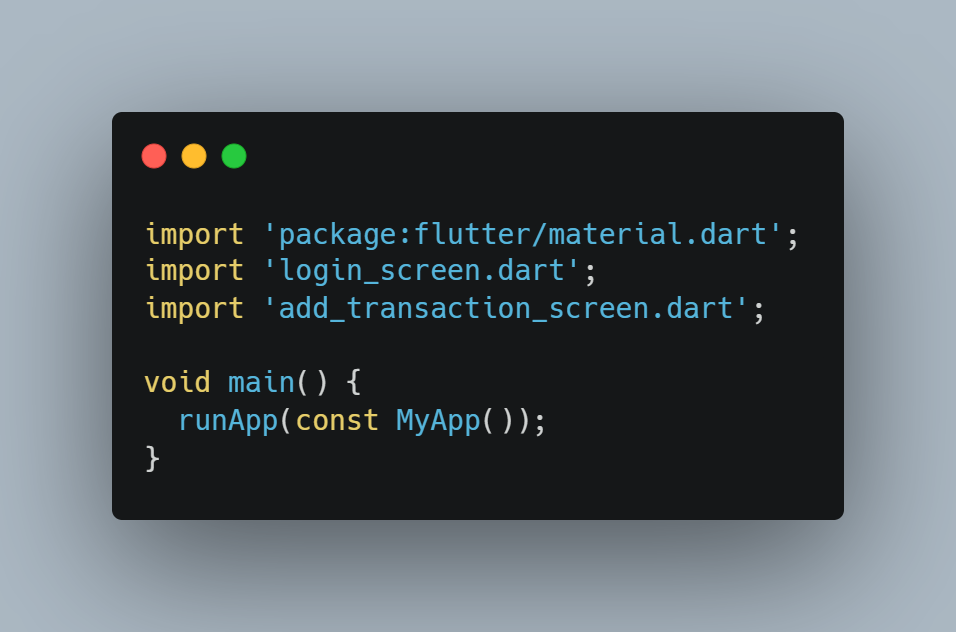
Kelas MyApp merupakan StatelessWidget yang berfungsi sebagai root widget aplikasi. MaterialApp dikonfigurasi dengan properti routes yang berupa peta (map) nama rute dan widget terkait. Named Routes memungkinkan navigasi menjadi lebih terpusat dan rapi dibandingkan navigasi langsung karena semua rute didefinisikan di satu tempat. Properti initialRoute, '/login' menunjukkan halaman pertama yang ditampilkan saat aplikasi dibuka adalah halaman login. Tema aplikasi menggunakan Colors.amber sebagai warna utama (primarySwatch). Debug banner dimatikan menggunakan debugShowCheckedModeBanner: false untuk tampilan yang lebih bersih dan profesional.
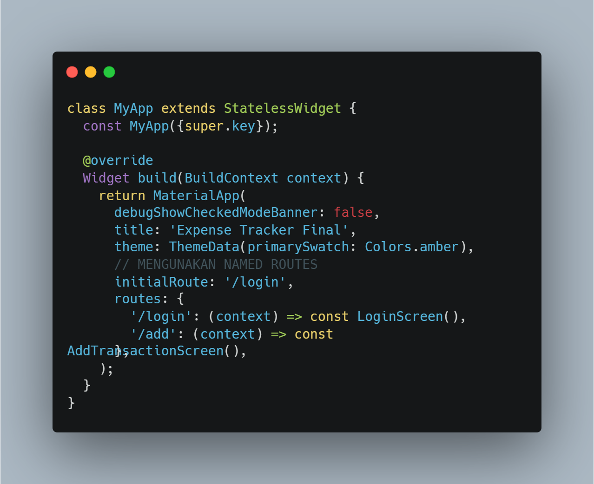
File ini mengggunakan StatefulWidget karena state input email akan berubah selama pengguna memasukkan teks. TextEditingController bernama _emailController digunakan untuk mengelola input teks dari user pada field email. GlobalKey
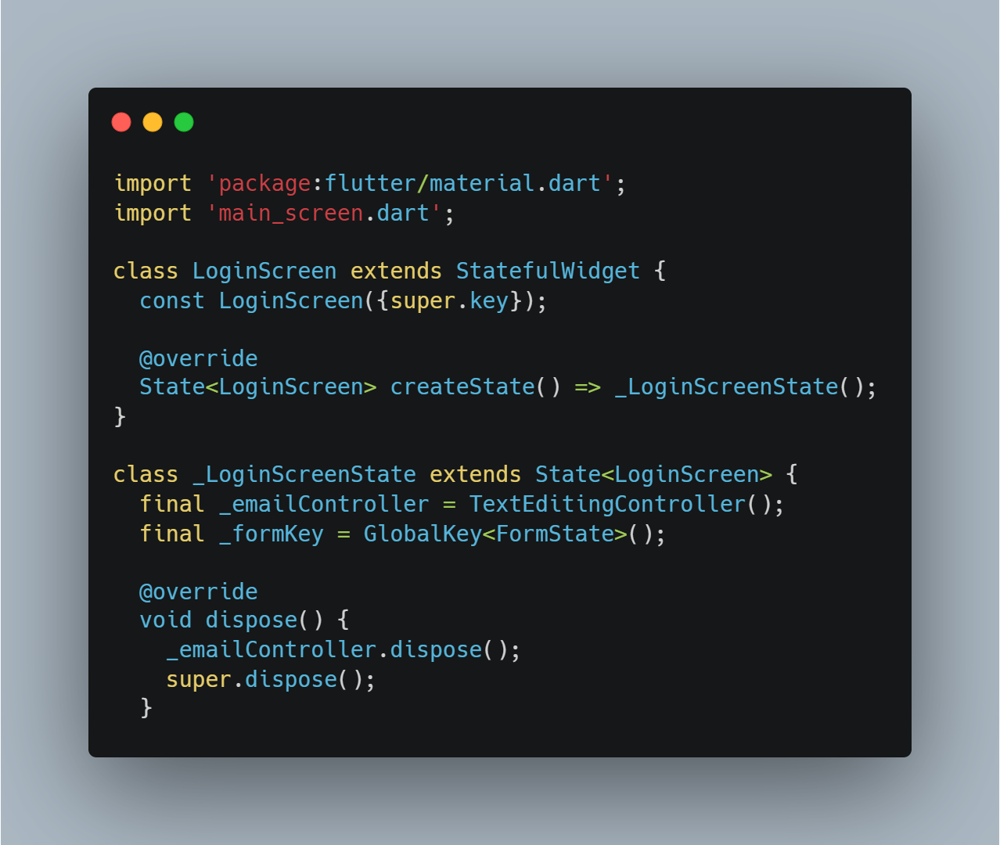
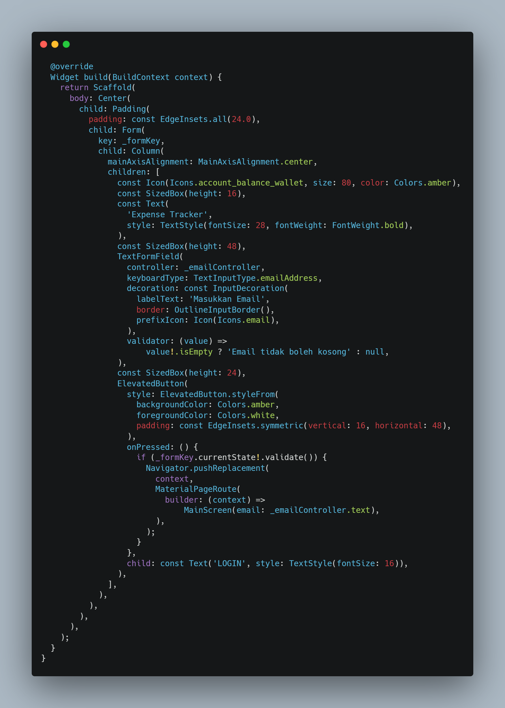
File ini menggunakan StatefulWidget karena state tab aktif akan berubah selama penggunaan aplikasi. Parameter email diterima melalui constructor dan akan diteruskan ke ProfileScreen. Variabel _selectedIndex bertipe int dengan nilai awal 0 menentukan tab yang sedang aktif (0 = Dashboard, 1 = History, 2 = Profile). List pages dideklarasikan dengan keyword late karena nilainya baru akan diinisialisasi di dalam method initState(). Method initState() dipanggil sekali saat widget pertama kali dibuat dan digunakan untuk menginisialisasi list pages yang berisi DashboardScreen, HistoryScreen, dan ProfileScreen dengan mengirimkan parameter email ke ProfileScreen menggunakan widget.email.
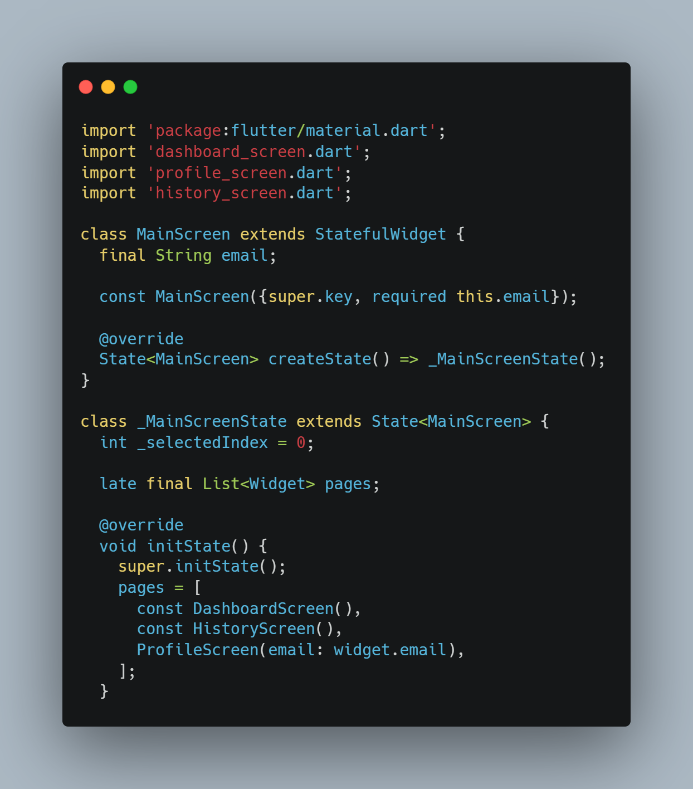
Method _onItemTapped menerima parameter index dari tab yang diklik user dan menggunakan setState() untuk memperbarui nilai _selectedIndex, sehingga body Scaffold akan menampilkan halaman sesuai index yang dipilih. Widget Scaffold memiliki body yang menampilkan halaman dari list pages berdasarkan _selectedIndex, menggunakan konsep dynamic widget switching. BottomNavigationBar dikonfigurasi dengan properti currentIndex yang menunjukkan tab aktif, onTap yang memanggil _onItemTapped saat user menekan tab, dan selectedItemColor untuk memberi warna amber pada tab yang aktif. Tiga BottomNavigationBarItem didefinisikan dengan icon dan label masing-masing untuk tab Beranda, Riwayat, dan Profile.
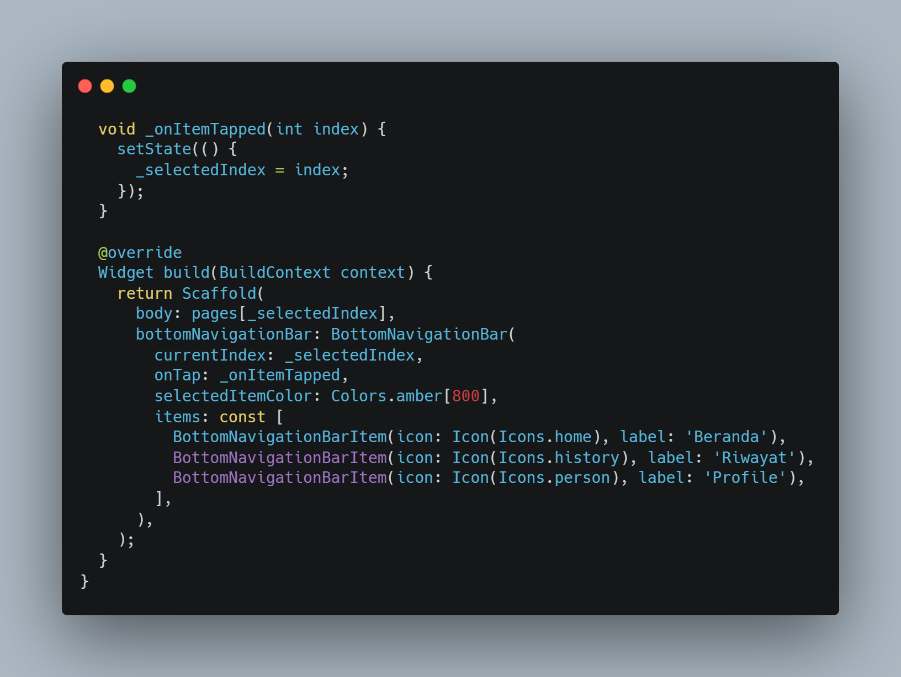
DashboardScreen adalah StatelessWidget karena struktur dasar halaman tidak berubah secara internal. Scaffold menyediakan struktur dasar halaman dengan AppBar berwarna merah yang menampilkan judul "Dashboard Keuangan". FloatingActionButton (FAB) ditempatkan di posisi default (kanan bawah) dengan warna amber dan icon plus, yang ketika diklik akan menavigasi Navigator.pushNamed(context, '/add') untuk membuka halaman tambah transaksi menggunakan Named Routes yang sudah didefinisikan di main.dart. Body menggunakan SingleChildScrollView agar konten dapat discroll jika melebihi ukuran layar, dengan padding 16 piksel di semua sisi.
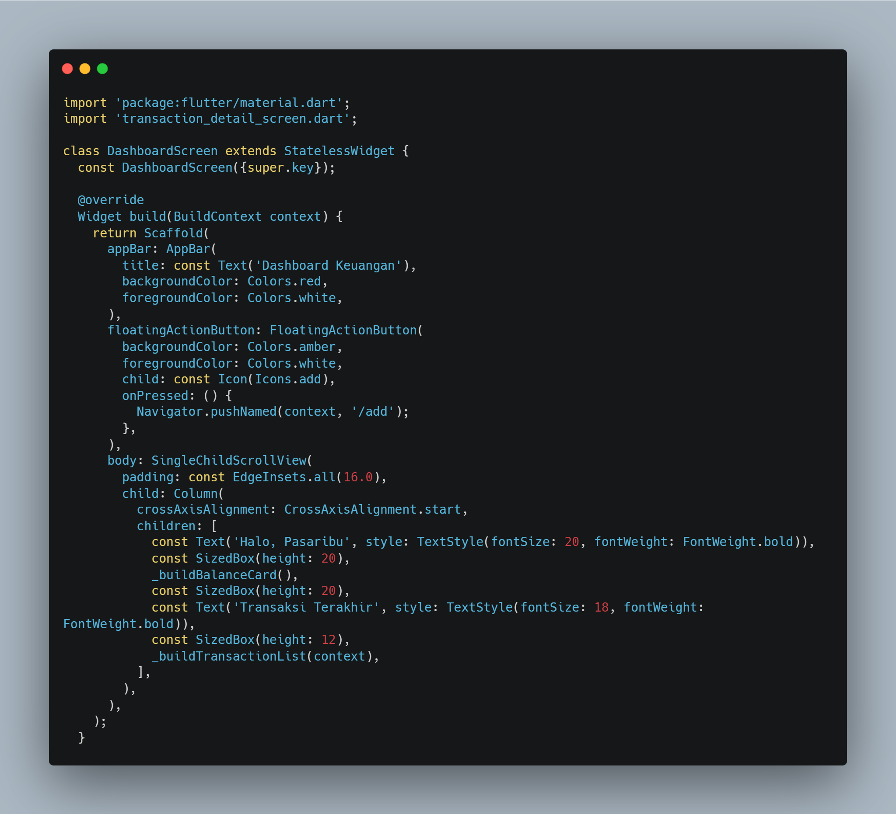
Method _buildBalanceCard() menghasilkan widget Card dengan elevation 4 dan border rounded corner radius 16 piksel, berisi informasi saldo utama dengan background berwarna teal dan teks putih. Method _buildTransactionList() menerima parameter BuildContext untuk keperluan navigasi dan menggunakan Column berisi dua Card masing-masing untuk transaksi income dan outcome. ListTile untuk "Makan Siang" dan "Gaji Bulanan". Setiap ListTile memiliki CircleAvatar sebagai leading dengan ikon, judul dan subtitle untuk menampilkan transaksi, dan trailing untuk menampilkan nominal dengan warna merah untuk pengeluaran, dan hijau untuk pemasukan. Property onTap pada masing-masing ListTile memanggil Navigator.pushNamed() dengan MaterialPageRoute yang mengarah ke TransactionDetailScreen, sambil mengirimkan data transaksi (title, amount, category, date) sebagai parameter required melalui constructor.
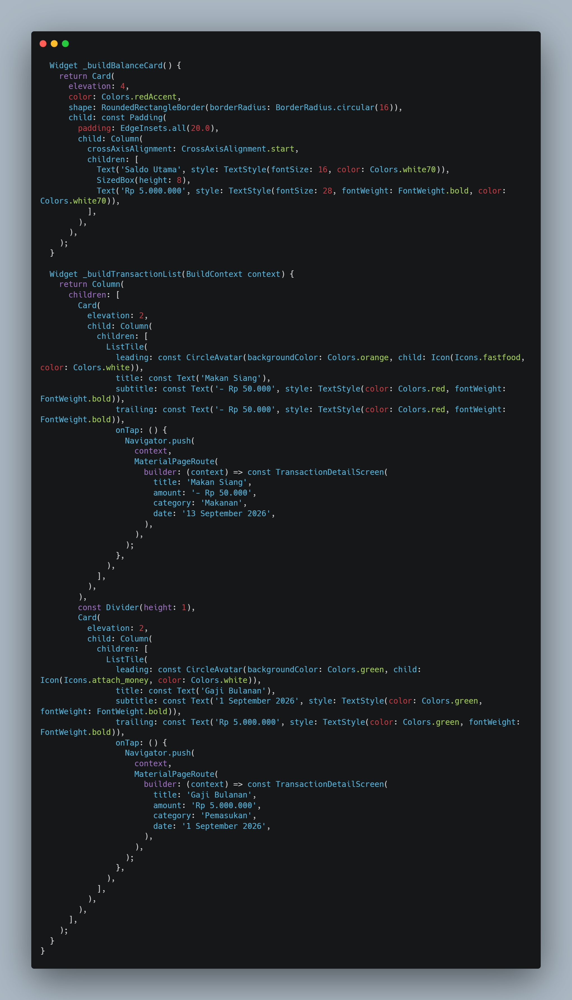
File ini menggunakan StatelessWidget karena menampilkan data statis tanpa state management. Scaffold menyediakan struktur dasar dengan AppBar berwarna merah menampilkan judul "Riwayat Transaksi". Body menggunakan SingleChildScrollView dengan padding 16 piksel agar konten dapat di-scroll jika data transaksi banyak. Column dengan crossAxisAlignment.start membuat konten rata kiri, diawali dengan teks "Semua Transaksi" sebagai header section kemudian memanggil method _buildTransactionHistory() untuk menampilkan daftar transaksi.
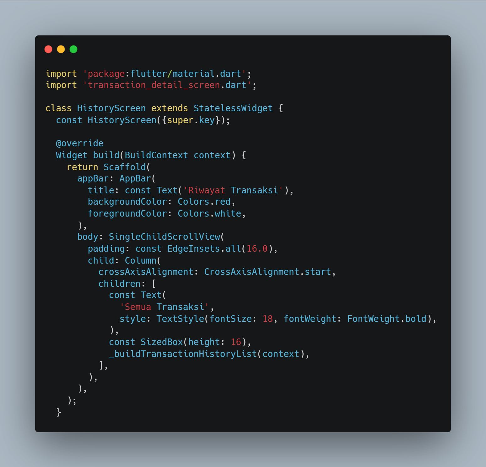
Method _buildTransactionHistory() mengembalikan widget ListView.builder dengan 5 data dummy ditampilkan melalui map dengan key untuk title, amount, category, date, icon, color, dan amountColor. Menggunakan ListView.builder() untuk membuat widget list secara dinamis sebanyak jumlah data transaksi. Setiap item transaksi dibungkus dengan Card dengan elevation 2 dan margin bottom 12 berisi ListTile yang menampilkan CircleAvatar dengan icon dan warna sesuai kategori transaksi. Widget ini title dan subtitle untuk informasi transaksi, serta trailing untuk menampilkan nominal dengan warna sesuai jenis transaksi (merah untuk pengeluaran, hijau untuk pemasukan). Casting IconData pada ikon diperlukan karena data disimpan dalam map dengan key String, sehingga perlu casting eksplisit. Ketika item ditekan, menggunakan tap event yang akan menavigasi ke TransactionDetailScreen dengan menggunakan data transaksi menggunakan Navigator.push() yang membentuk MaterialPageRoute untuk memasukkan tipe data yang benar.
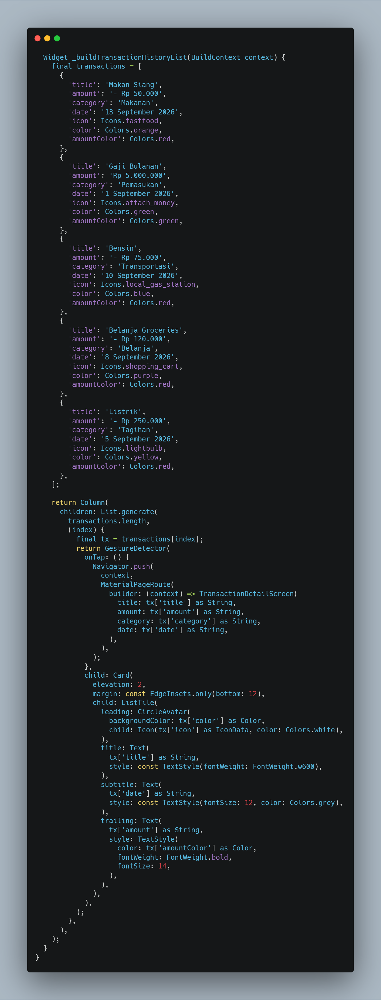
File ini menggunakan StatelessWidget dengan parameter email yang bersifat required untuk menampilkan data user secara dinamis. Di dalam method build(), dilakukan ekstraksi nama dari email dengan cara memisahkan string sebelum symbol '@' menggunakan split('@').first, kemudian tiap kata di nama dikapitalisasi huruf pertama dengan split(' ').map((word) => '${word[0].toUpperCase()} + ${word.substring(1)}').join(' '). Proses ini mengubah format email seperti "joko.widodo@gmail.com" menjadi nama yang lebih readable yaitu "Joko Widodo".
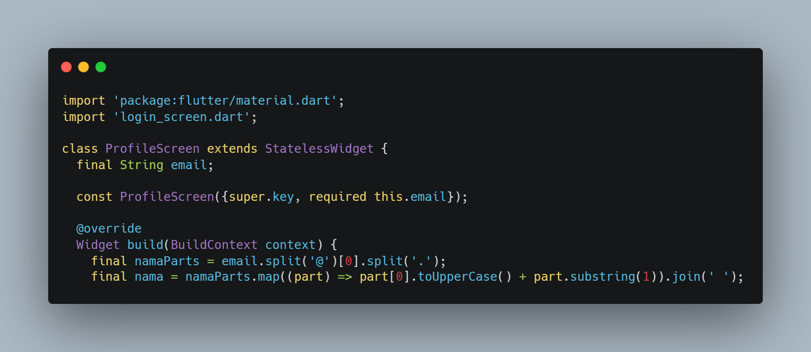
Scaffold dengan AppBar berwarna merah menampilkan judul "Profil Saya". Body menggunakan SingleChildScrollView agar konten dapat di-scroll. Container pertama sebagai header profile memiliki lebar penuh (width: double.infinity) dan BoxDecoration berisi LinearGradient dari Colors.red ke Colors.redAccent untuk efek visual yang menarik. Di dalam container terdapat column dengan Center dan CircleAvatar berukuran 80 pixel, background putih, merah berukuran 60 piksel. Nama user yang sudah diekstrak dari email ditampilkan dengan font size 24 bold warna putih, diikuti dengan email sub-ditampilkan dengan font size 14 dan warna putih transparent (white70) untuk memberikan hierarki informasi.
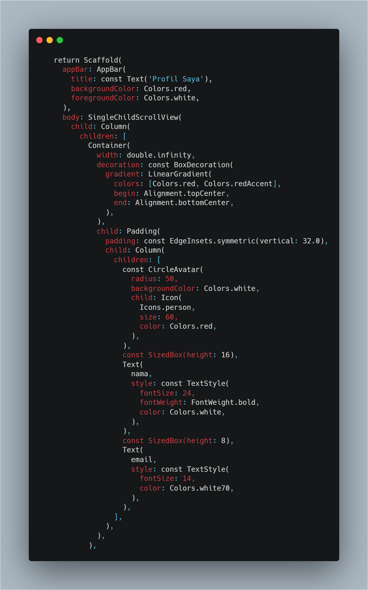
Section "Informasi Profil" ditampilkan dengan padding horizontal 24 piksel untuk memberikan ruang yang baik di kiri dan kanan. Method _buildInfoCard() dipanggil berulang kali untuk menampilkan informasi Nama, Email, dan Status dengan jarak 12 piksel antar card, setelah detail profil, ditampilkan tombol logout dengan lebar penuh (double.infinity) yang membungkus ElevatedButton berwarna merah dengan padding vertikal 16 piksel dan border radius 8 piksel. Tombol logout menampilkan icon Icons.logout_rounded dan text "LOGOUT" dalam satu row dengan alignment center. Ketika tombol ditekan, akan muncul dialog konfirmasi untuk logout menggunakan _showLogoutDialog() sebelum melakukan logout.
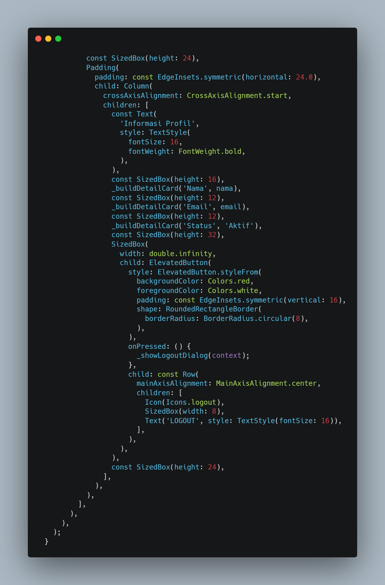
Method _buildInfoCard() mengembalikan Container dengan card informasi Card informasi dengan Container yang memiliki border abu-abu, border radius 8 piksel, dan padding 16 piksel. Di dalamnya terdapat Column dengan dua Text widget label dengan font size 12 warna abu-abu dan font weight 400 di atas, serta value dengan font size 16 warna hitam dan font weight 600 di bawah. Method _showLogoutDialog() menampilkan showDialog() untuk menampilkan AlertDialog dengan title "Logout" dan konten berisi peringatan konfirmasi. Terdapat dua widget action dalam Dialog adalah tombol "Batal" dan tombol "Batal" yang menutup dialog menggunakan Navigator.pop(context), dan tombol "Logout" berwarna merah yang ketika ditekan akan menutup dialog terlebih dahulu kemudian melakukan navigasi ke LoginScreen menggunakan Navigator.pushReplacementNamed(context, '/login') untuk menghapus semua history dengan tombol back.
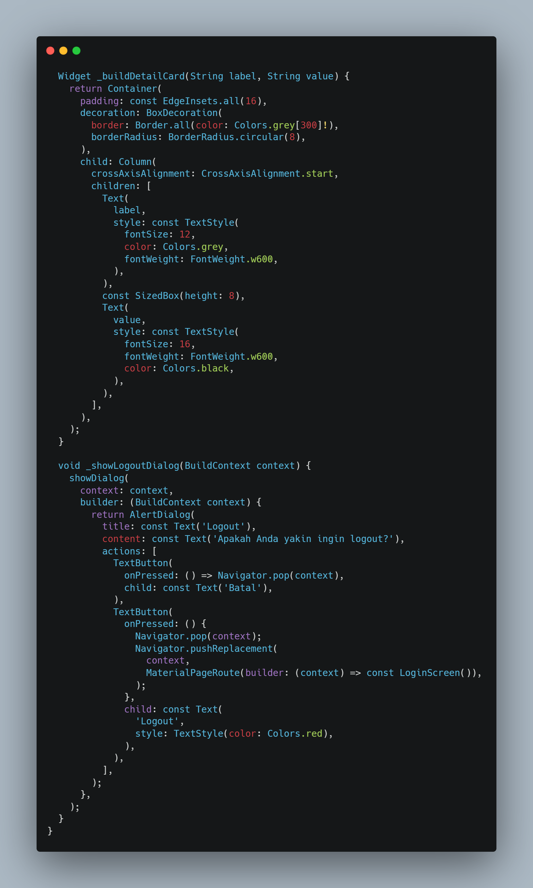
File ini menggunakan StatefulWidget karena form input membutuhkan state management untuk validasi dan update UI. GlobalKey
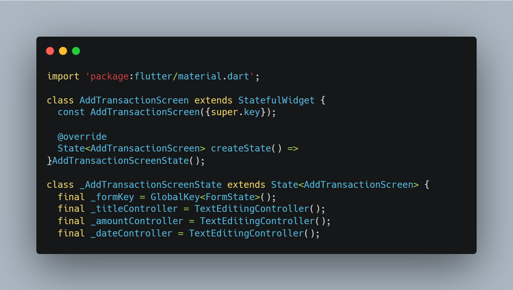
Scaffold dengan AppBar berwarna merah menampilkan judul "Catat Transaksi". Body menggunakan SingleChildScrollView dengan Form dengan padding 16 piksel dan Form dengan _formKey sebagai key. Column dengan crossAxisAlignment.stretch memuat widget TextFormField berupa input untuk judul dengan TextFormField pertama untuk input judul dengan menampilkan hintText "Cth: Makan Siang", decoration InputBorder, "Judul" dan borderRadius OutlineInputBorder() untuk border kotak. Validator mengecek apakah input kosong atau tidak. Icon adalah Icons.title. Jika kosong jika adalah 'Judul wajib diisi!', error message. SizedBoxheight: 16) memberi jarak vertikal antar input field. TextFormField kedua untuk input nominal menggunakan _amountController dengan keyboardType: TextInputType.number untuk keyboard khusus angka, icon Icons.attach_money. Input decoration labelText: "Nominal" dan border: OutlineInputBorder(), serta validator yang mengecek nilai tidak null dan tidak kosong.
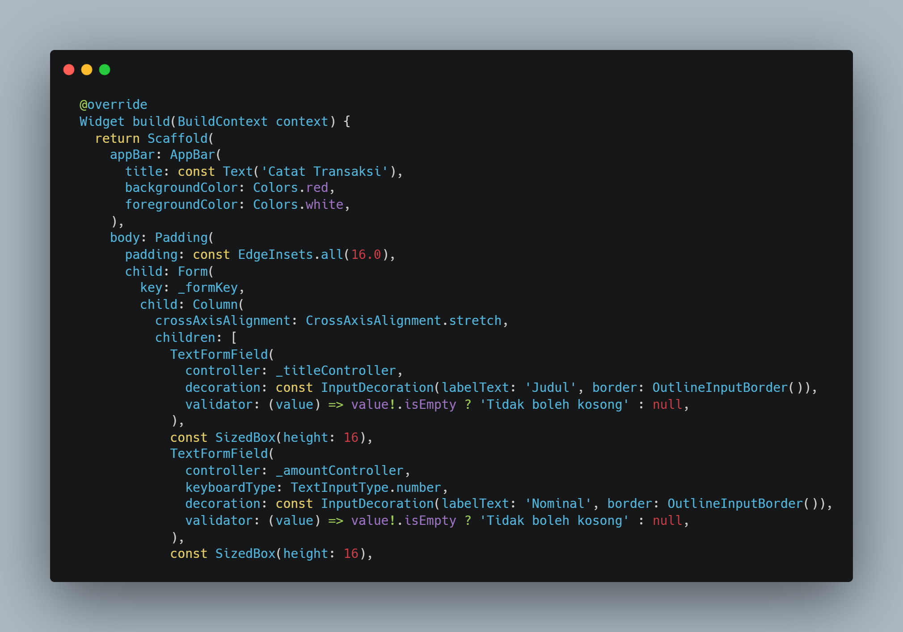
TextFormField untuk tanggal dengan readOnly: true agar user tidak bisa mengetikkan _dateController dengan properti readOnly: true agar user tidak bisa langsung mengetikkan tanggal manual. onTap memicu fungsi async untuk membuka showDatePicker(). Date picker dikonfigurasi dengan context, initialDate hari ini, firstDate tahun 2000 sebagai batas awal, dan lastDate DateTime(2100) sebagai batas akhir. Di dalam date picker, user dapat memilih tanggal (selectedDate tidak null), tanggal diformat ke format DD-MM-YYYY menggunakan string interpolation untuk menampilkan data dari controller. Validator mengecek tanggal dan bulan. Hasil format dimasukan ke _dateController.text dengan menggunakan if (selectedDate != null). Di bawahnya terdapat DropdownButtonFormField untuk kategori. Validator mengecek apakah tanggal sudah dipilih dengan pesan error "Tanggal wajib diisi!" jika masih kosong.
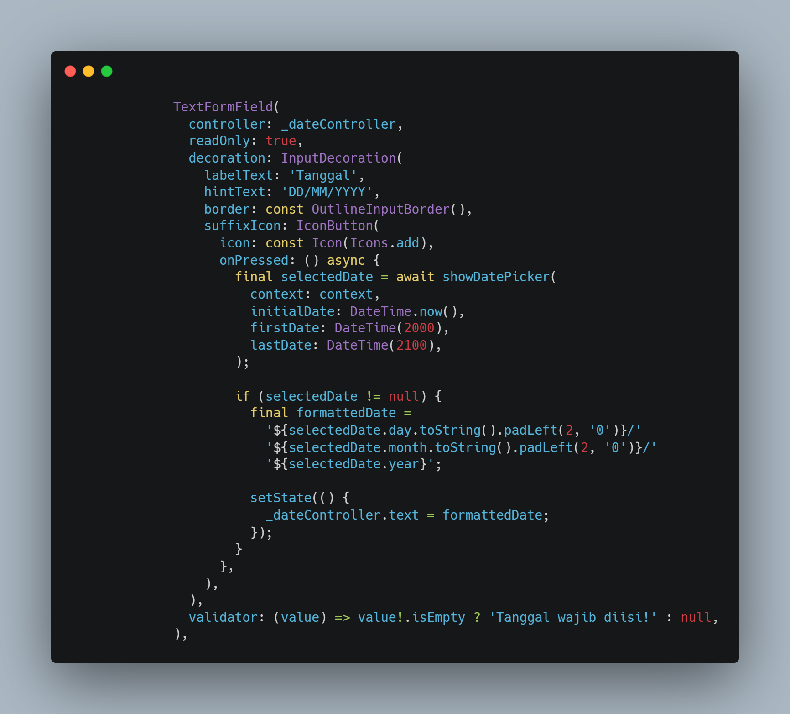
ElevatedButton dengan lebar penuh (double.infinity) dan style ElevatedButton.styleFrom() dengan style background merah, foreground putih, dan padding vertikal 16 piksel untuk tombol yang lebih besar. Properti onPressed berisi logika validasi form menggunakan _formKey.currentState?.validate() yang akan mengecek semua validator pada tiap TextFormField. Jika validasi berhasil (semua field valid atau tidak ada error), ScaffoldMessenger.of(context).showSnackBar() digunakan untuk menampilkan pesan "Transaksi Berhasil Disimpan!" sebagai feedback visual. Setelah itu, Navigator.pop(context) dipanggil untuk menutup halaman dan kembali ke halaman sebelumnya (Dashboard) dengan mengirimkan balasan Navigator.pop(context) untuk menutup halaman dan kembali ke halaman Dashboard dengan font size 16. Method dispose() di bawah widget tree digunakan untuk membersihkan ketiga controller saat widget dihapuskan.
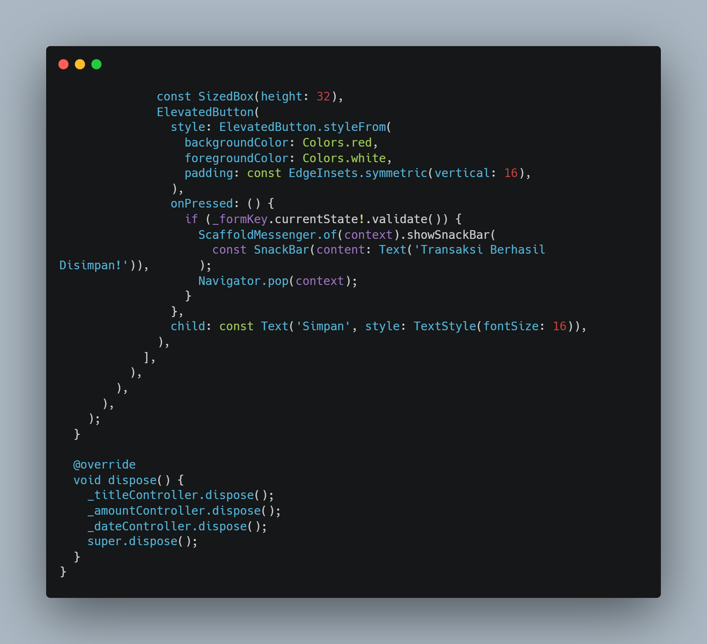
File ini menggunakan StatelessWidget dengan empat parameter required: title untuk menampilkan data yang diterima untuk detail transaksi seperti judul, nominal, kategori, dan tanggal transaksi. Constructor menerima empat parameter dengan keyword required dan keperluan menampilkan data lengkap transaksi. Widget ini title untuk judul transaksi, amount untuk nominal, category untuk kategori transaksi, dan date untuk tanggal transaksi. Keempat parameter ditandai sebagai final sehingga tidak dapat diubah jika keempat data tersebut disesuaikan saat pemangilan. Penggunaan const pada constructor untuk kinerja yang lebih baik dan efficient jika memungkinkan.
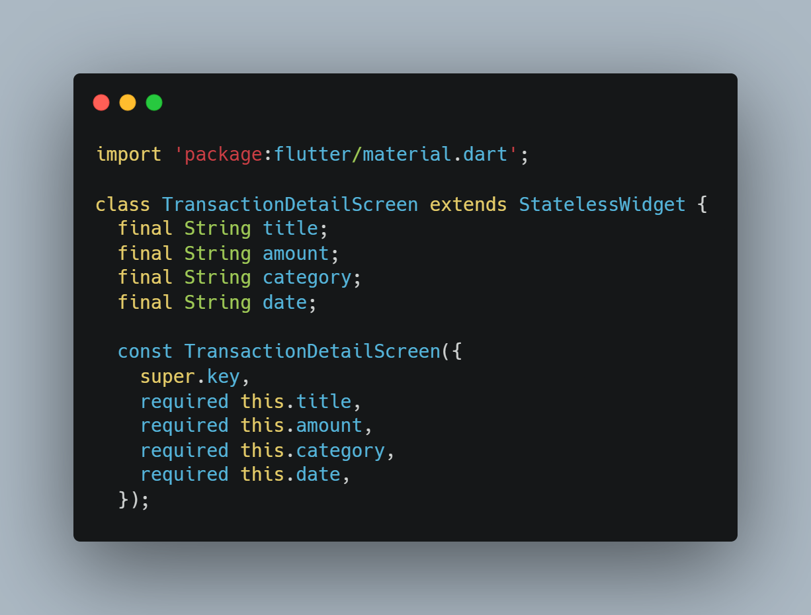
Scaffold dengan AppBar berwarna merah menampilkan judul "Detail Transaksi". Body menggunakan Padding 24 piksel dan Center untuk memusatkan konten. CrossAxisAlignment.center untuk memusatkan konten. Column berisi children yang ditampilkan dari atas ke bawah untuk menampilkan elemen secara vertical. Icon receipt berwarna merah dengan ukuran 80 piksel ditampilkan di atas konten sebagai representasi visual transaksi. Setelah jarak 24 piksel, title transaksi ditampilkan dengan font size 24 dan bold, diikuti amount dengan font size 32, bold, dan warna merah untuk menunjukkan nominal transaksi. Divider dengan height 40 dan thickness 2 membuat garis pemisah antara informasi utama dan detail tambahan. Method _buildInfoRow() dipanggil empat kali untuk detail kategori, tanggal, serta row untuk menampilkan informasi Kategori, Tanggal, dan Status transaksi dalam format terstruktur.
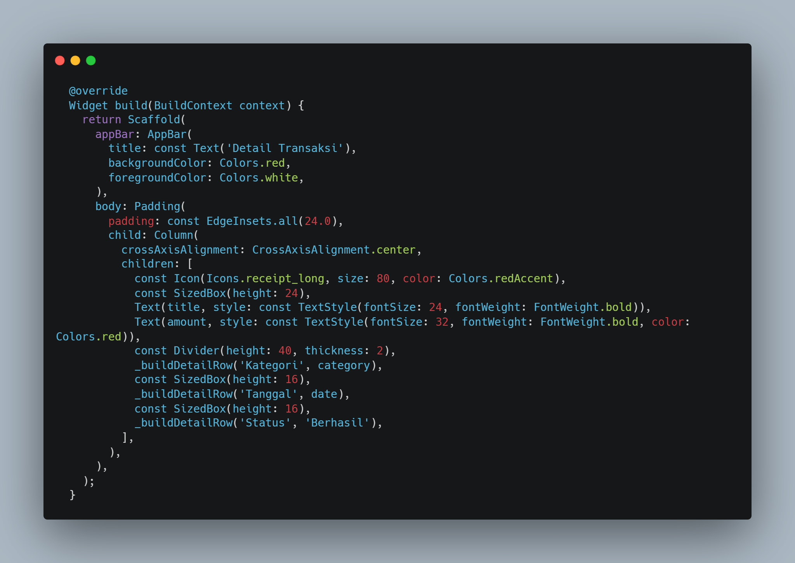
Method _buildInfoRow() adalah widget Row untuk menampilkan detail dengan format label dan value dalam baris. Row memiliki mainAxisAlignment: MainAxisAlignment.spaceBetween untuk memisahkan elemen kiri dan kanan secara otomatis. Label ditampilkan dengan Expanded di kiri dan value di kanan dengan ukuran fixed. Method menerima dua parameter: label sebagai keterangan (seperti "Kategori") dan value sebagai nilai transaksi (seperti "Makanan"). Widget helper ini membuat kode lebih reusable dan konsisten. Setiap label ditampilkan dengan TextStyle berwarna abu-abu untuk membedakan dengan value yang ditampilkan dengan font weight bold dan warna hitam. Widget Row digunakan untuk mengatur layout baris detail untuk kategori, tanggal, dan status dengan format yang sama untuk semua baris detail.
Praktikum ini telah berhasil mengimplementasikan aplikasi Flutter bernama "Expense Tracker Final" yang menggabungkan aplikasi pengelola keuangan pribadi dengan menggunakan berbagai konsep fundamental Flutter. Konsep yang telah diserakan dengan mude/didiskusikan, sesuai rapi disajat MaterialApp pada file main.dart, mengintegrasikan navigation, state management, dan UI design.
Dibangun dengan lapisan Pernavigasian, tentang StatefulWidget dan StatelessWidget juga telah diuji melalui implementasi yang tepat pada setiap screen, mulai dari LoginScreen, AddTransactionScreen, dan MainScreen mengintegrasikan DashboardScreen, HistoryScreen, dan ProfileScreen. StatefulWidget untuk mengelola state yang berubah, sedangkan StatelessWidget juga telah diuji melalui implementasi data statis.
Passing data antar screen telah didimplementasikan, melalu tua integrasi antara named routes dalam navigasi dengan Navigator.push() yang menerima data sebagai parameter named constructor. Validasi form dan input validation menggunakan GlobalKey
Kode dan arsip project dapat dibuka melalui repository GitHub berikut.
Ringkasan laporan praktikum tentang penerapan Laravel UI dengan Bootstrap untuk autentikasi, integrasi template SB Admin 2, dan manajemen pengguna berbasis CRUD.
Laravel merupakan salah satu framework PHP yang banyak digunakan untuk mengembangkan aplikasi web secara cepat, terstruktur, efisien, dan modern. Laravel menerapkan arsitektur MVC (Model-View-Controller) sebagai proses pengelolaan data, logika aplikasi, dan tampilan pengguna. Selain itu, Laravel adalah framework berbasis package yang mendukung proses pengembangan, termasuk fitur autentikasi secara otomatis.
Pada praktikum ini, mahasiswa mempelajari pengelolaan halaman data autentikasi (login dan register) yang dibangun menggunakan package Laravel UI berbasis framework CSS Bootstrap. Selain itu dilakukan juga proses pengelolaan tabel database melalui penggunaan fitur migration untuk membentuk struktur tabel dan admin default secara otomatis.
Selain pengelolaan basis data dan autentikasi, fokus utama lainnya dalam praktikum ini adalah templating atau penyusunan tata letak (layout) aplikasi. Mahasiswa mempelajari penggunaan template eksternal, yaitu SB Admin 2, ke dalam project Laravel untuk membangun antarmuka komponen halaman web menjadi bagian-bagian kecil seperti sidebar, topbar, dan konten utama agar kode lebih modular dan mudah dikelola.
Di akhir praktikum, mahasiswa mengimplementasikan konsep CRUD (Create, Read, Update, Delete) pada pengelolaan pengguna (users). Implementasi ini memanfaatkan Resource Controller dan diperkaya dengan penggunaan plugin DataTables pada bagian view untuk mempermudah proses pencarian (search) dan paginasi (pagination) data. Dengan pendekatan ini, mahasiswa mendapatkan gambaran yang menyeluruh mengenai pengelolaan dan pembangunan fitur web.
Pada bagian ini dilakukan proses pembuatan sistem akademik sederhana menggunakan Laravel Full-stack MVC. Tahapan pengerjaan dimulai dari pembuatan project, database, migration, model, controller, pembuatan route, blade template, view untuk mengelola dan menampilkan data pengguna.
Pada tahap ini, dilakukan pembuatan project, konfigurasi environment, dan logika sistem.
Langkah pertama adalah membuat project Laravel. Setelah project berhasil dibuat, jalankan perintah npm install dan npm run build untuk menginstal dependensi frontend dan membangun aset.
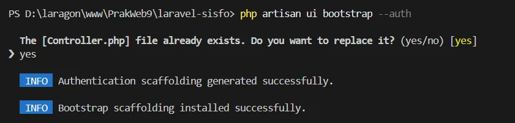
npm install dan npm run build.
Setelah project selesai, dilakukan konfigurasi database pada file .env. Hal ini bertujuan agar aplikasi dapat terkoneksi ke database MySQL yang telah dibuat melalui interface (phpMyAdmin).
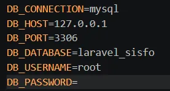
.env.
Untuk fitur login dan register, digunakan package laravel/ui dengan framework Bootstrap. Hal ini mempermudah proses scaffolding halaman autentikasi.
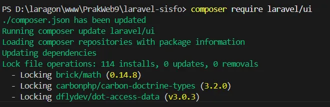
laravel/ui dan scaffolding autentikasi Bootstrap menggunakan php artisan ui bootstrap --auth.Setelah berhasil, silakan buka halaman login dan register. Jika berhasil maka akan menampilkan seperti berikut.
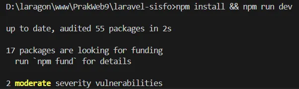
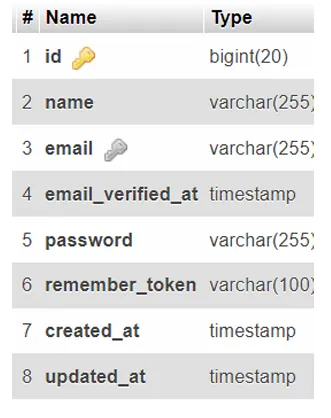
Dilakukan penambahan kolom pada tabel users untuk mengakomodasi kebutuhan sistem informasi sekolah. Penambahan kolom username, level, dan nama dilakukan melalui migration baru.
a. Custom Table Users
Authentication Laravel secara otomatis akan menggunakan table Users yang berisi tentang informasi data user, berikut struktur table users. Dengan menggunakan perintah php artisan make:migration create_table_users, maka ada pada tabel pada database dengan struktur berikut.
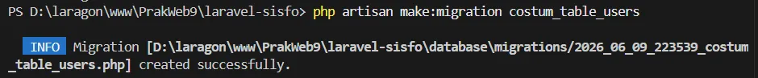
users pada database.Selanjutnya buka folder migration yang sudah di buat dan tulis kode berikut.
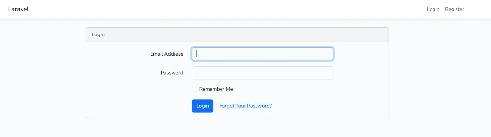
users.b. Seeder untuk Admin
Langkah selanjutnya setelah mengisikan tabel users adalah mengisi data pengguna melalui fitur seeding. Untuk menguji, buatlah seeder bernama AdminSeeder, dengan menggunakan perintah php artisan make:seeder AdminSeeder.
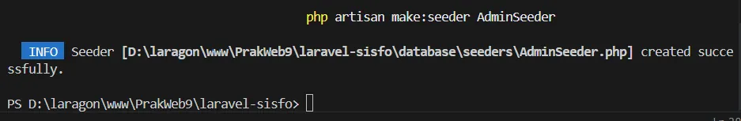
AdminSeeder.
Setelah perintah dijalankan, file AdminSeeder.php pada folder database/seeders. Selanjutnya, silakan akses file tersebut dan masukkan kode berikut untuk menambahkan data administrator.
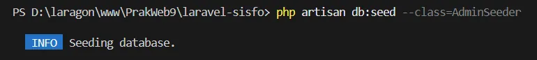
AdminSeeder berisi data awal untuk akun administrator.
Selanjutnya untuk menjalankan seeding dengan cara menggunakan perintah berikut: php artisan db:seed --class=AdminSeeder. Jika berhasil maka akan muncul seperti gambar berikut.
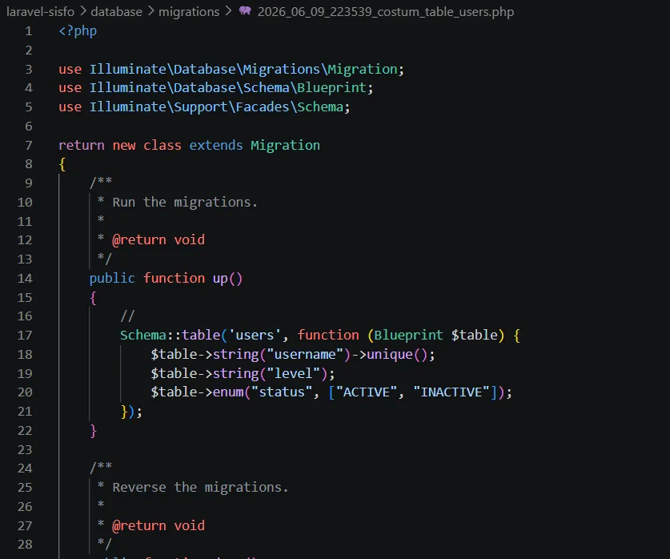
php artisan db:seed --class=AdminSeeder berhasil dijalankan.
Setelah autentikasi Laravel berhasil diimplementasikan untuk menampilkan dashboard, langkah selanjutnya adalah melakukan kustomisasi template aplikasi agar sesuai dengan desain yang diinginkan. Pada studi kasus ini, kami menggunakan template SB Admin 2 berbasis framework Bootstrap. Proses pengimplementasian dilakukan dengan mengunduh template dari situs resmi, mengekstrak berkas tersebut, kemudian membuat direktori baru bernama sb-admin di dalam folder public project Laravel untuk menyimpan seluruh aset template tersebut.
a. Halaman Login Aplikasi
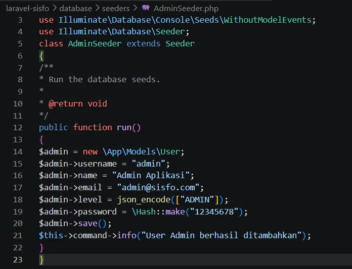
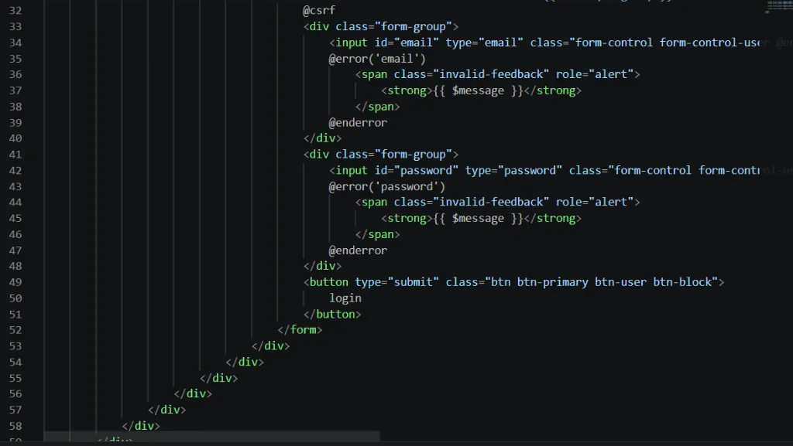
Maka output yang akan di hasilkan adalah sebagai berikut.
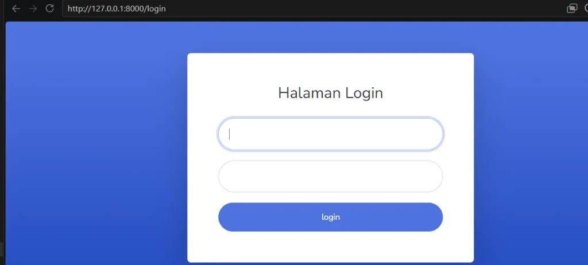
b. Layout Global
Tahap berikutnya adalah membuat layout global yang berfungsi sebagai kerangka utama bagi keseluruhan aplikasi. Mengingat file app.blade.php sudah digunakan untuk halaman autentikasi (login), maka diperlukan pembuatan layout alternatif. Oleh karena itu, dibuatlah file main.blade.php di dalam direktori views/layouts sebagai layout utama yang akan digunakan oleh seluruh halaman yang membutuhkan tampilan dashboard. Kode program untuk layout global adalah sebagai berikut.
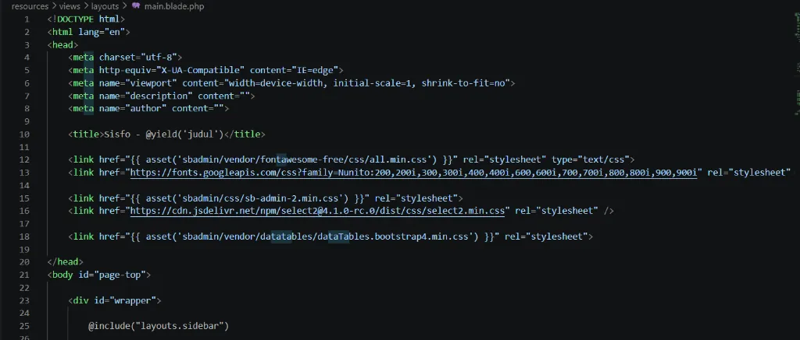
main.blade.php sebagai layout global aplikasi.c. Sidebar
Buat file pada folder layouts dengan nama sidebar.blade.php dengan kode program berikut.
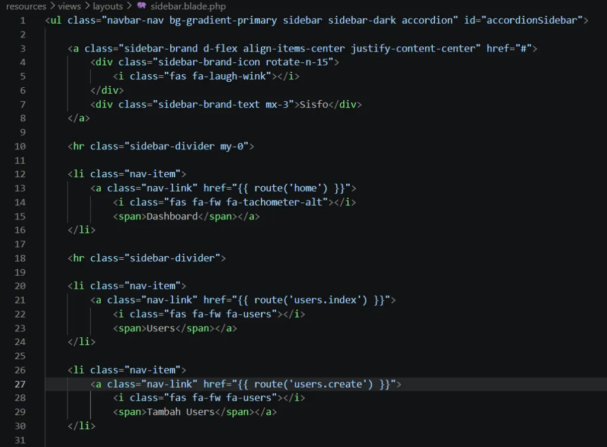
sidebar.blade.php bagian pertama.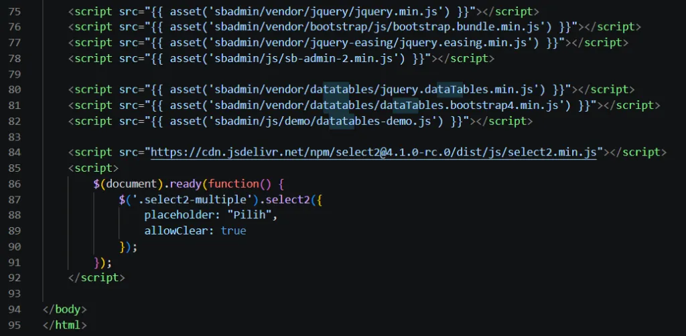
sidebar.blade.php bagian kedua.d. Topbar
Buat file pada folder layouts dengan nama topbar.blade.php dan isi dengan kode program berikut.
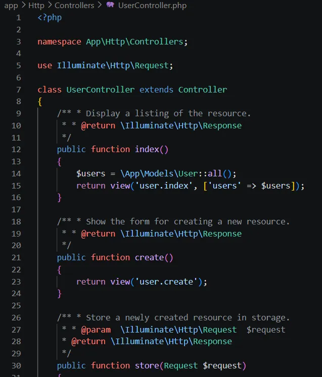
topbar.blade.php bagian pertama.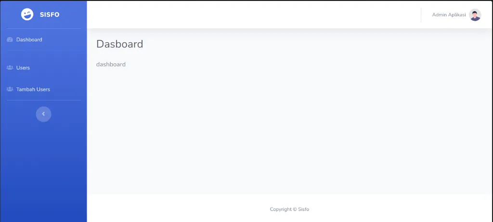
topbar.blade.php bagian kedua.e. Hasil Konfigurasi Template
Jika konfigurasi berhasil maka tampilan nya akan menjadi seperti berikut ini.
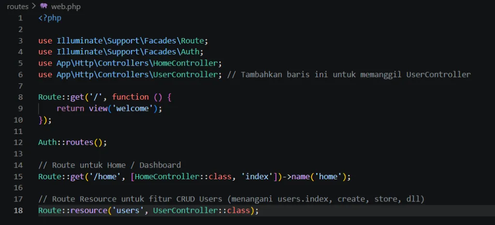
Tahap berikutnya adalah membangun fitur manajemen pengguna. Mengingat fitur ini menerapkan fungsi CRUD (Create, Read, Update, dan Delete) secara penuh, maka kita akan menggunakan Resource Controller. Langkah ini dilakukan melalui terminal dengan menjalankan perintah php artisan make:controller UserController --resource.
Selanjutnya ini kode program berikut pada route web.
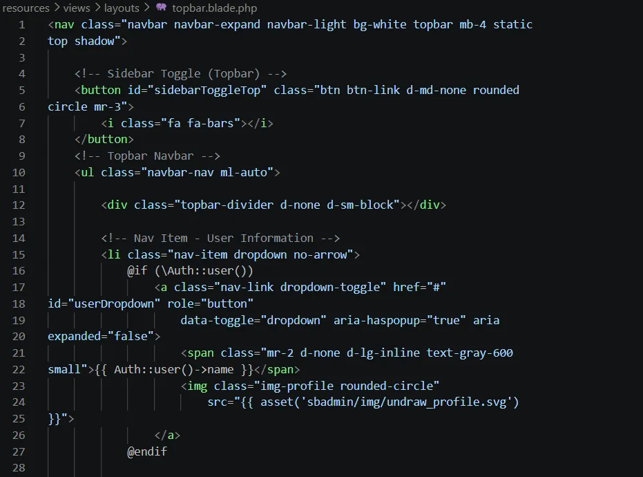
UserController pada file routes/web.php.Setelah rute sudah berhasil di buat, selanjutnya adalah isi file tersebut seperti pada gambar.
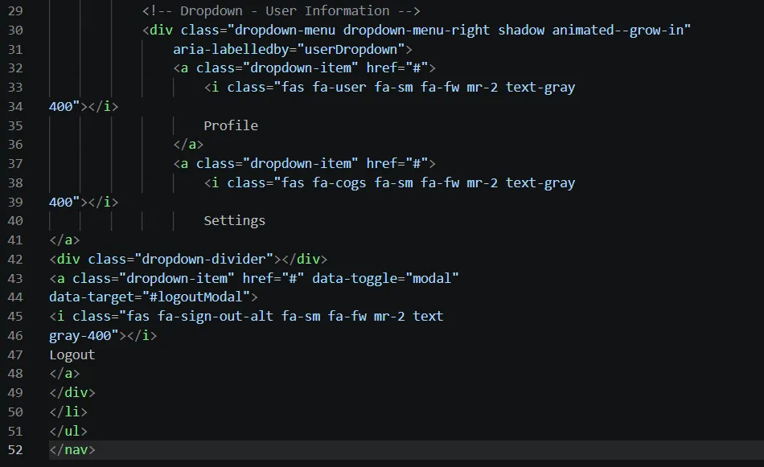
UserController bagian pertama.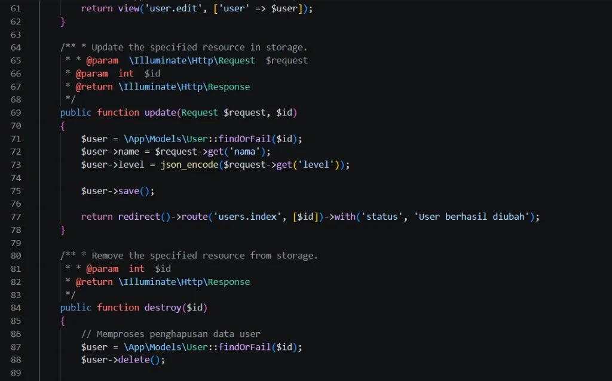
UserController bagian kedua.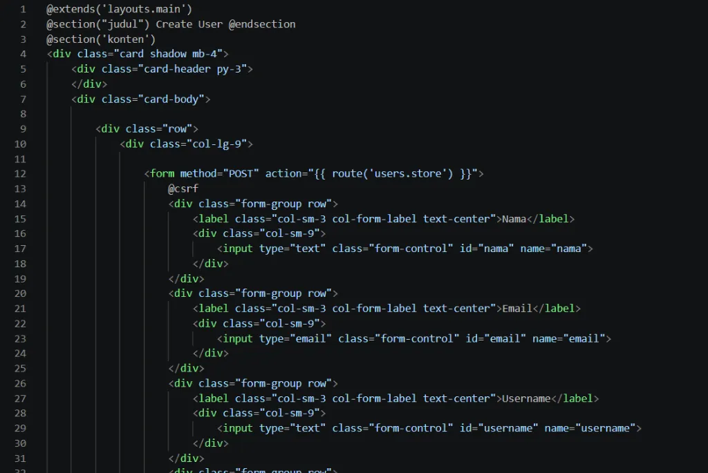
UserController bagian ketiga.
Route untuk menampilkan view form tambah data user adalah user/create. Silahkan buka file UserController kemudian pada action create edit kode program menjadi seperti berikut.
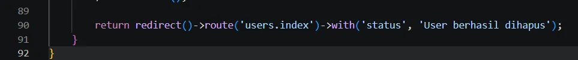
create.blade.php bagian pertama.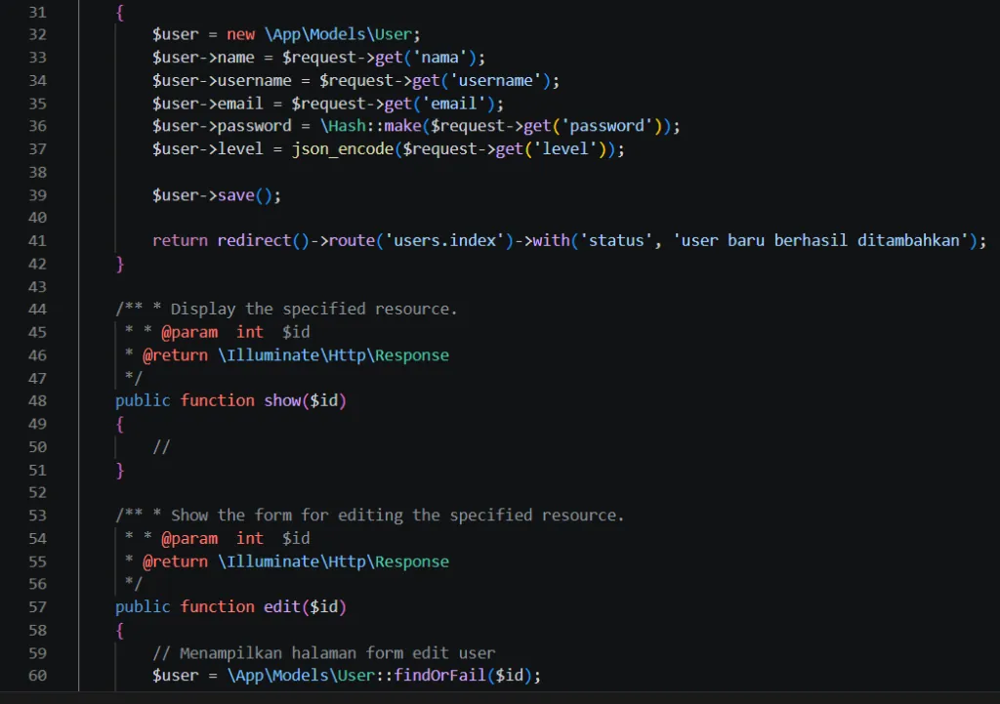
create.blade.php bagian kedua.Jika sudah, silahkan di cek apakah hasilnya sudah sama dengan gambar berikut.
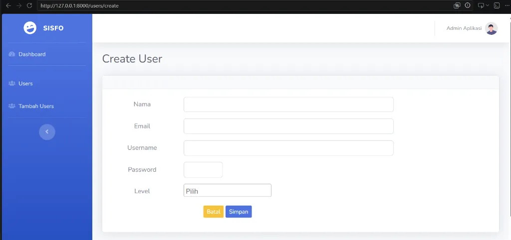
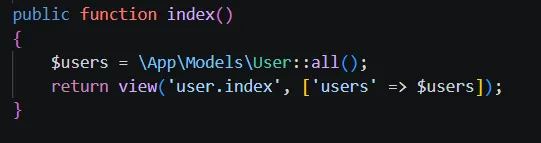
Selanjutnya setelah fungsi create selesai, kita akan menyimpan dan menampilkan data user. Untuk menampilkan data user kita akan menggunakan method GET pada rute localhost/users yang mana rute ini merupakan action index pada UserController. Buka action index kemudian edit menjadi seperti kode program berikut.
Selanjutnya buat file dengan nama index.blade.php pada folder views/user dan isi dengan kode program berikut.
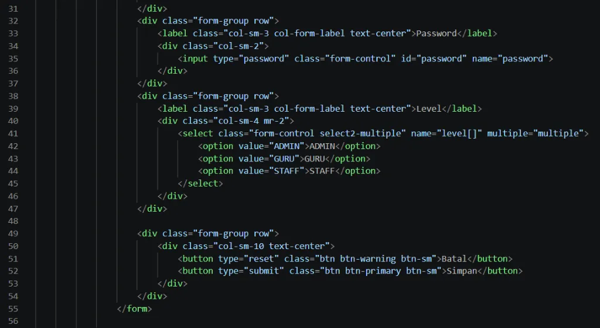
index.blade.php untuk menampilkan daftar user.Untuk mengecek apakah sudah berhasil, coba lakukan penginputan data seperti pada gambar.
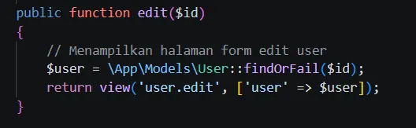
Setelah di tambahkan kode ini maka tampilan list user akan menjadi seperti berikut.
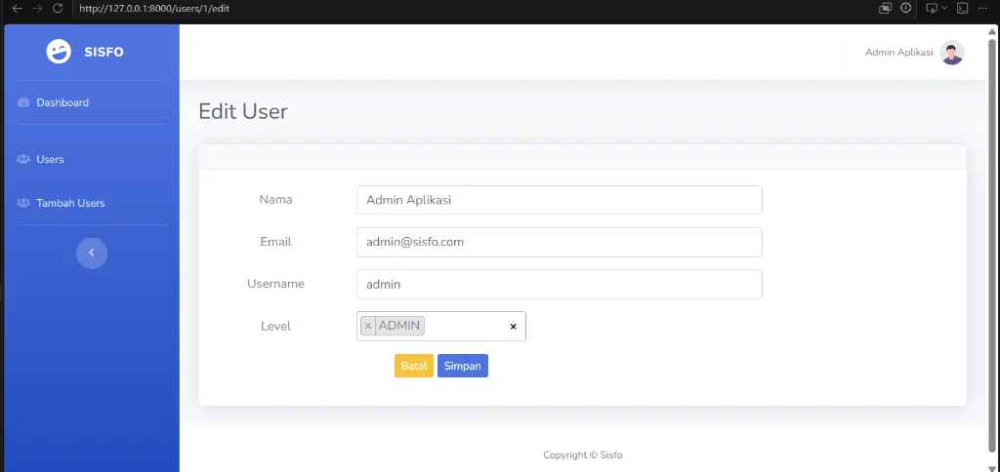
Tahap berikutnya dalam proses pengelolaan data pengguna adalah menyediakan antarmuka untuk mengedit data pengguna. Langkah ini dimulai dengan mengimplementasikan logika pada file edit.blade.php di dalam direktori views/user, yang akan memanfaatkan method edit pada UserController serta menggunakan method HTTP PUT untuk proses pengiriman perubahan.
Saat pengguna mengakses URL dengan format users/{user}/edit, di mana {user} merepresentasikan ID unik dari data yang dipilih. Langkah berikut adalah mengimplementasikan logika perubahan data pada method edit di dalam UserController.
edit.blade.php untuk form update data user.edit.blade.php.Tampilan form jika sudah akan menjadi seperti ini.
Tambahkan tombol atau link pada list user, silahkan buka view user index.blade.php dan tambahkan kode program berikut di bawah link edit.
Untuk mengecek apakah sudah berhasil, coba lakukan penghapusan data seperti pada gambar.
Berdasarkan pelaksanaan praktikum yang telah dilakukan, dapat disimpulkan bahwa Laravel merupakan framework PHP yang sangat efektif dalam membangun aplikasi web yang terstruktur, efisien, dan mudah dikelola melalui penerapan arsitektur MVC (Model-View-Controller). Penggunaan fitur migration menjadi sebuah praktik utama dalam pengelolaan basis data yang terstruktur, migration dan seeder membantu mempercepat proses pengembangan aplikasi. Dengan DataSeeder, data awal dapat disediakan dan dikelola secara efisien sebagai fondasi data pengguna.
Selain itu, integrasi template eksternal seperti SB Admin 2 berhasil memberikan antarmuka pengguna yang profesional dan responsif. Pendekatan konsep layouting modular dengan komponen sidebar dan topbar memungkinkan struktur kode yang lebih rapi dan mudah untuk dipelihara di masa depan. Praktik implementasi fitur CRUD (Create, Read, Update, Delete) menggunakan Resource Controller serta penambahan fitur DataTables memperlihatkan kemampuan pengelolaan data untuk pembangunan fungsi pengelolaan pengguna secara prosedural. Dengan demikian, praktikum ini memberikan mahasiswa pemahaman dan kemampuan dasar yang diperlukan untuk membangun sebuah aplikasi berbasis web yang terorganisir.
Kode dan arsip project dapat dibuka melalui repository GitHub berikut.
Ringkasan laporan praktikum tentang pengenalan Laravel sebagai framework PHP berbasis arsitektur MVC.
Laravel merupakan salah satu framework PHP yang banyak digunakan dalam pengembangan aplikasi berbasis web. Framework ini mendukung konsep arsitektur MVC atau Model-View-Controller, sehingga proses pengembangan aplikasi menjadi lebih terstruktur, rapi, dan mudah dikelola.
Pada praktikum ini, mahasiswa diperkenalkan dengan Laravel mulai dari pemahaman dasar mengenai framework Laravel, kebutuhan perangkat lunak yang digunakan, struktur dasar project Laravel, hingga konsep MVC yang menjadi dasar utama dalam pengembangan aplikasi menggunakan Laravel.
Pada bagian ini dilakukan proses persiapan dan konfigurasi awal Laravel sesuai dengan modul praktikum. Tahapan pengerjaan dimulai dari pengecekan kebutuhan sistem, pembuatan project Laravel, menjalankan project, hingga mengenal struktur dasar Laravel dan konsep MVC.
Sebelum membuat project Laravel, terlebih dahulu dilakukan pengecekan terhadap beberapa tools yang dibutuhkan. Laravel membutuhkan PHP, Composer, Git, Node JS, dan NPM agar proses pembuatan serta pengembangan project dapat berjalan dengan baik.
Bisa dilihat pada gambar untuk bagaimana cara mengecek kebutuhan system dari Laravel.
Setelah perintah tersebut dijalankan, terminal akan menampilkan versi dari masing-masing tools. Jika seluruh tools sudah menampilkan versi, maka tools tersebut sudah berhasil terpasang dan dapat digunakan.
Setelah semua kebutuhan sistem terpenuhi, langkah selanjutnya adalah membuat project Laravel. Pada praktikum ini, project Laravel dapat dibuat menggunakan Composer atau Laravel Installer.
Gunakan perintah composer create-project laravel/laravel:^12 PraktWeb1 --prefer-dist.
Setelah project berhasil dibuat, langkah berikutnya adalah masuk ke dalam folder project menggunakan perintah cd PraktWeb1.
Untuk menjalankan project Laravel, digunakan perintah Artisan php artisan serve. Setelah perintah dijalankan, Laravel akan menjalankan server lokal. Biasanya aplikasi dapat diakses melalui browser dengan alamat http://127.0.0.1:8000. Jika berhasil, maka halaman awal Laravel akan tampil pada browser.
php artisan serve.Setelah project Laravel berhasil dijalankan, langkah berikutnya adalah mencoba menampilkan halaman sederhana. Hal ini dilakukan untuk memastikan bahwa routing dan tampilan pada Laravel dapat berjalan dengan baik.
Route sederhana dapat dibuat untuk menampilkan teks Hello World pada browser.
/hello pada file routes/web.php./hello pada browser.UserController.index.user/index./user menggunakan view tersebut.userController dengan function index.resources/views/user/index.blade.php./user yang mengarah ke userController./user pada browser.Praktikum ini memberikan pemahaman awal mengenai alur kerja Laravel dan bagaimana routing, view, serta controller saling terhubung dalam membangun halaman web yang terstruktur.
Kode dan arsip project dapat dibuka melalui repository GitHub berikut.
Ringkasan laporan praktikum tentang pengelolaan database dan pembuatan fitur web Laravel menggunakan alur MVC.
Laravel merupakan salah satu framework PHP yang digunakan dalam pengembangan aplikasi web secara terstruktur. Laravel menerapkan konsep MVC atau Model-View-Controller, yaitu pemisahan alur kerja aplikasi menjadi tiga bagian utama. Model digunakan untuk berinteraksi dengan database, View digunakan untuk menampilkan halaman kepada pengguna, sedangkan Controller digunakan untuk mengatur logika aplikasi dan menghubungkan Model dengan View.
Pada praktikum ini, pembahasan difokuskan pada beberapa konsep penting dalam pengembangan aplikasi Laravel, yaitu migration, seeding, routing, model, controller, dan view. Migration digunakan untuk membuat serta mengelola struktur tabel database melalui kode program. Seeding digunakan untuk mengisi data awal ke dalam database. Selain itu, routing digunakan untuk menentukan alamat URL aplikasi, model digunakan untuk mengelola data dari database, controller digunakan untuk mengatur proses aplikasi, dan view digunakan untuk menampilkan data ke halaman web.
Praktikum dilakukan dengan bantuan XAMPP sebagai server lokal dan pengelola database MySQL. Melalui praktikum ini, mahasiswa dapat memahami hubungan antara database dan aplikasi Laravel, mulai dari konfigurasi database, pembuatan tabel menggunakan migration, pengisian data awal menggunakan seeder, pengambilan data menggunakan model, pengaturan controller, hingga menampilkan data melalui view.
Pada bagian ini dilakukan proses konfigurasi database dan pembuatan struktur tabel menggunakan fitur migration pada Laravel. Setelah tabel berhasil dibuat, proses dilanjutkan dengan pembuatan seeder untuk mengisi data awal ke dalam database. Praktikum ini menggunakan XAMPP sebagai server lokal dan MySQL sebagai database.
Langkah pertama yang dilakukan adalah mengaktifkan Apache dan MySQL melalui XAMPP Control Panel. Apache digunakan untuk menjalankan server lokal, sedangkan MySQL digunakan sebagai database pada project Laravel.
Setelah MySQL aktif, buka phpMyAdmin melalui browser dengan alamat http://localhost/phpmyadmin. Kemudian buat database baru dengan nama praktikum_laravel. Database ini akan digunakan untuk menyimpan tabel dan data yang dibuat melalui Laravel.
praktikum_laravel melalui phpMyAdmin.
Setelah database dibuat, langkah berikutnya adalah membuka file .env pada project Laravel. Pada file tersebut, bagian konfigurasi database diubah agar project Laravel dapat terhubung dengan database yang sudah dibuat sebelumnya.
Konfigurasi yang digunakan adalah DB_CONNECTION=mysql, DB_HOST=127.0.0.1, DB_PORT=3306, DB_DATABASE=praktikum_laravel, DB_USERNAME=root, dan DB_PASSWORD=. Pada XAMPP, username database biasanya menggunakan root, sedangkan password dikosongkan.
.env.Setelah konfigurasi database selesai, langkah berikutnya adalah membuat migration. Migration digunakan untuk membuat dan mengelola struktur tabel database melalui kode program. Dengan migration, pembuatan tabel dapat dilakukan langsung dari Laravel tanpa harus membuat tabel secara manual melalui phpMyAdmin.
Untuk membuat migration tabel products, digunakan perintah php artisan make:migration create_products_table pada terminal. Setelah perintah dijalankan, Laravel akan membuat file migration baru di dalam folder database/migrations.
create_products_table berhasil dibuat pada folder migrations.Setelah file migration berhasil dibuat, langkah berikutnya adalah mengatur struktur tabel pada file migration tersebut. File migration yang dibuat digunakan untuk menentukan kolom apa saja yang akan ada di dalam tabel products.
Pada bagian function up(), ditambahkan struktur tabel seperti id, name, price, description, created_at, dan updated_at. Kolom-kolom tersebut digunakan untuk menyimpan data produk yang nantinya akan ditampilkan pada halaman web.
products dituliskan pada function up().
Selanjutnya, pada bagian function down(), dituliskan perintah Schema::dropIfExists('products'). Function down() digunakan untuk menghapus tabel jika migration dibatalkan atau dilakukan rollback.
down() digunakan untuk menghapus tabel ketika migration di-rollback.
Setelah struktur tabel selesai dibuat pada file migration, langkah berikutnya adalah menjalankan migration. Perintah yang digunakan adalah php artisan migrate. Perintah tersebut digunakan untuk menjalankan file migration yang sudah dibuat, sehingga tabel products secara otomatis terbentuk pada database praktikum_laravel.
Untuk memastikan tabel berhasil dibuat, database dapat dicek melalui phpMyAdmin. Jika berhasil, maka tabel products akan muncul di dalam database.
products berhasil terbentuk pada database setelah migration dijalankan.Setelah tabel berhasil dibuat, langkah selanjutnya adalah membuat seeder. Seeder berfungsi untuk mengisi data awal ke dalam database. Dengan menggunakan seeder, data contoh dapat dimasukkan ke tabel tanpa harus menambahkannya secara manual melalui phpMyAdmin.
Untuk membuat seeder ProductSeeder, digunakan perintah php artisan make:seeder ProductSeeder. Setelah perintah dijalankan, file seeder akan dibuat pada folder database/seeders.
ProductSeeder.php berhasil dibuat pada folder seeders.Setelah file ProductSeeder dibuat, langkah berikutnya adalah mengisi data awal yang akan dimasukkan ke dalam tabel products. Isi file ProductSeeder dapat ditulis dengan menggunakan perintah insert ke tabel products.
Data yang dimasukkan berupa contoh produk, seperti Laptop dan Mouse. Masing-masing data berisi nama produk, harga, deskripsi, serta waktu pembuatan dan pembaruan data. Data tersebut nantinya akan tersimpan di database setelah seeder dijalankan.
ProductSeeder.php.
Agar ProductSeeder dapat dijalankan, seeder tersebut perlu dipanggil terlebih dahulu pada file DatabaseSeeder.php. Pada bagian function run(), ditambahkan pemanggilan $this->call(ProductSeeder::class).
Kode tersebut digunakan untuk memberi tahu Laravel bahwa ProductSeeder adalah seeder yang akan dijalankan ketika proses seeding dilakukan.
ProductSeeder pada file DatabaseSeeder.php.
Setelah seeder dipanggil pada file DatabaseSeeder, langkah berikutnya adalah menjalankan seeder. Perintah yang digunakan adalah php artisan db:seed. Perintah tersebut digunakan untuk memasukkan data awal ke dalam tabel products.
Setelah perintah seeder dijalankan, data dapat dicek melalui phpMyAdmin pada tabel products. Jika berhasil, maka data produk seperti Laptop dan Mouse akan muncul pada tabel tersebut.
products setelah seeder dijalankan.Setelah proses migration dan seeding selesai, langkah berikutnya adalah membuat routing. Routing digunakan untuk menentukan alamat URL yang dapat diakses oleh pengguna, serta menentukan respon apa yang akan ditampilkan oleh aplikasi.
Pada Laravel, routing untuk halaman web berada pada file web.php yang terdapat di dalam folder routes. File ini menjadi tempat untuk mendefinisikan hubungan antara URL dan proses yang dijalankan oleh aplikasi.
Routing dasar digunakan untuk menampilkan respon sederhana ketika sebuah URL diakses. Contohnya, ketika pengguna membuka halaman utama, Laravel dapat menampilkan teks atau halaman tertentu sebagai respon.
Kode routing dasar dapat dituliskan pada file routes/web.php. Setelah server Laravel dijalankan dengan perintah php artisan serve, halaman dapat dibuka melalui alamat http://127.0.0.1:8000.
web.php.Routing parameter digunakan untuk menangkap nilai tertentu dari URL. Parameter ini biasanya digunakan ketika ingin menampilkan data berdasarkan id atau kode tertentu.
Contohnya, route /produk/{id} dapat digunakan untuk menangkap nilai id produk. Jika pengguna membuka alamat /produk/1, maka Laravel akan mengambil nilai 1 dari URL dan menampilkannya sebagai bagian dari respon.
id dari URL.Named route digunakan untuk memberikan nama pada sebuah route. Dengan named route, pemanggilan URL dapat dilakukan menggunakan nama route, bukan langsung menuliskan alamat URL secara lengkap.
Hal ini dapat membantu ketika route digunakan pada banyak bagian aplikasi. Jika alamat URL berubah, bagian lain yang menggunakan nama route tetap lebih mudah disesuaikan.
dashboard.Route group digunakan untuk mengelompokkan beberapa route yang memiliki awalan URL yang sama. Dengan menggunakan route group, penulisan route menjadi lebih rapi dan tidak perlu mengulang awalan URL berkali-kali.
Contohnya, beberapa route yang berada di bawah awalan /admin dapat dimasukkan ke dalam satu group. Dengan begitu, route seperti dashboard dan products dapat dikelola dalam kelompok route yang sama.
admin.Setelah memahami routing, langkah berikutnya adalah membuat model. Model digunakan untuk berinteraksi dengan database. Pada Laravel, model bekerja dengan Eloquent ORM sehingga proses mengambil, menambahkan, mengubah, dan menghapus data dari database dapat dilakukan dengan lebih mudah.
Untuk membuat model Product, digunakan perintah php artisan make:model Product. Model ini nantinya digunakan untuk mengambil data dari tabel products.
Setelah file Product.php dibuat, langkah berikutnya adalah mengatur model agar dapat digunakan untuk mengelola data pada tabel products. Pada model, dapat ditentukan kolom yang boleh diisi secara massal menggunakan properti $fillable.
Kolom yang dapat dimasukkan ke dalam $fillable antara lain name, price, dan description. Dengan pengaturan ini, Laravel mengetahui data apa saja yang boleh diproses melalui model Product.
Product dengan properti $fillable.
Langkah pertama dalam membuat Blade Layout adalah membuat folder baru di dalam folder resources/views. Folder tersebut diberi nama layouts. Folder ini digunakan untuk menyimpan file layout utama yang dapat digunakan oleh beberapa halaman view.
Setelah folder layout dibuat, langkah berikutnya adalah membuat file app.blade.php. File ini berfungsi sebagai template utama untuk tampilan aplikasi. Di dalam file ini terdapat struktur HTML dasar seperti html, head, dan body.
Pada bagian tertentu digunakan directive Blade seperti @yield('title') dan @yield('content'). Bagian @yield('title') digunakan sebagai tempat untuk menampilkan judul halaman, sedangkan @yield('content') digunakan sebagai tempat untuk menampilkan isi utama dari halaman.
app.blade.php sebagai template dasar tampilan.
Setelah layout utama dibuat, langkah berikutnya adalah menggunakan layout tersebut pada view products. Pada bagian atas file view, dituliskan @extends('layouts.app') untuk menggunakan layout utama.
Selanjutnya, @section('title', 'Products') digunakan untuk mengisi judul halaman, sedangkan @section('content') digunakan untuk menulis isi utama halaman. Dengan cara ini, file products tidak perlu menuliskan struktur HTML lengkap karena struktur utama sudah diambil dari file layout.
@extends dan @section.
Untuk menampilkan data produk dari database, digunakan perulangan Blade. Data produk yang dikirim dari controller dapat ditampilkan menggunakan @foreach. Setiap data produk kemudian ditampilkan pada halaman, misalnya nama produk, harga, dan deskripsi.
Dengan menggunakan Blade, proses menampilkan data menjadi lebih sederhana karena Laravel menyediakan sintaks khusus untuk menulis logika tampilan di dalam file view.
Pada bagian tugas, dibuat fitur CRUD sederhana untuk data mahasiswa. Langkah pertama adalah membuat database baru melalui phpMyAdmin, kemudian mengatur koneksi database pada file .env. Setelah koneksi berhasil, dibuat model mahasiswa, migration untuk tabel mahasiswa, seeder data awal, route, controller, dan view untuk mengelola data.
.env.
Setelah database terhubung, dibuat model Mahasiswa pada folder app/Models. Pada model tersebut, properti $fillable diisi dengan kolom nim, nama, dan jurusan agar data dapat diproses secara massal.
Mahasiswa dengan kolom nim, nama, dan jurusan.
Selanjutnya, dibuat file migration untuk menyusun struktur tabel mahasiswa. Migration dibuat melalui terminal, kemudian struktur tabel diatur pada file migration yang telah dibuat. Kolom yang digunakan antara lain nim, nama, dan jurusan.
Setelah struktur tabel selesai dibuat, migration dijalankan menggunakan perintah php artisan migrate. Jika berhasil, tabel mahasiswa akan dibuat di dalam database sesuai struktur yang sudah ditentukan.
php artisan migrate dijalankan melalui terminal.
Setelah tabel dibuat, dibuat seeder dengan nama MahasiswaSeeder. Seeder ini digunakan untuk memasukkan data akademik sebagai data awal. Agar seeder dapat dijalankan, MahasiswaSeeder dipanggil pada file DatabaseSeeder.php, kemudian dijalankan menggunakan perintah php artisan db:seed.
MahasiswaSeeder.MahasiswaSeeder berisi data awal mahasiswa.MahasiswaSeeder dipanggil pada file DatabaseSeeder.php.
Setelah data awal siap, dibuat route resource pada file web.php dengan controller MahasiswaController. Controller ini berisi beberapa method utama, yaitu index untuk menampilkan data, create untuk membuka form tambah data, store untuk menyimpan data baru, edit untuk membuka form edit, update untuk memperbarui data, dan destroy untuk menghapus data.
web.php.MahasiswaController untuk menampilkan, membuat, dan menyimpan data.update dan destroy digunakan untuk mengubah dan menghapus data mahasiswa.
Kemudian dibuat beberapa file view di dalam folder resources/views/mahasiswa, yaitu index.blade.php, create.blade.php, dan edit.blade.php. Halaman index digunakan untuk menampilkan daftar mahasiswa, halaman create digunakan untuk menambah data, sedangkan halaman edit digunakan untuk mengubah data yang sudah ada.
index.blade.php digunakan untuk menampilkan daftar mahasiswa dan tombol aksi.create.blade.php digunakan untuk menambahkan data mahasiswa baru.edit.blade.php digunakan untuk mengubah data mahasiswa.Output dari tugas ini adalah halaman daftar mahasiswa yang menampilkan data dari database, tombol tambah data, form tambah mahasiswa baru, form edit data mahasiswa, serta tombol untuk menghapus data. Dengan demikian, fitur CRUD sederhana berhasil dibuat menggunakan Laravel.
Berdasarkan praktikum yang telah dilakukan, dapat disimpulkan bahwa Laravel menyediakan fitur yang memudahkan proses pengembangan aplikasi web secara terstruktur melalui konsep MVC atau Model-View-Controller. Pada praktikum ini, mahasiswa mempelajari bagaimana menghubungkan Laravel dengan database, membuat tabel menggunakan migration, mengisi data awal menggunakan seeder, serta menampilkan data melalui model, controller, routing, dan view.
Selain itu, praktikum ini juga memberikan pemahaman mengenai penggunaan routing untuk menentukan alamat URL pada aplikasi, penggunaan model sebagai penghubung antara aplikasi Laravel dan database, serta penggunaan controller untuk mengatur alur data dari model dan dikirimkan ke view. Dengan demikian, mahasiswa dapat memahami alur kerja Laravel mulai dari database, model, controller, route, hingga tampilan halaman.
Penggunaan Blade Layout juga membantu dalam membuat tampilan aplikasi menjadi lebih rapi dan terstruktur. Struktur layout memungkinkan bagian HTML utama digunakan kembali pada beberapa halaman, sehingga pembuatan halaman seperti daftar data, form tambah, dan form edit menjadi lebih efisien. Materi ini menjadi dasar penting untuk membangun aplikasi CRUD sederhana pada Laravel.
Ringkasan laporan praktikum tentang pembuatan relasi antar tabel pada Laravel menggunakan migration, model, seeder, controller, view, dan query Eloquent Relationship.
Laravel merupakan salah satu framework PHP yang digunakan untuk membangun aplikasi web secara lebih terstruktur dan efisien. Laravel menerapkan konsep MVC atau Model-View-Controller, sehingga proses pengolahan data, tampilan, dan logika aplikasi dapat dipisahkan dengan rapi. Selain itu, Laravel juga menyediakan fitur Eloquent ORM yang memudahkan pengembang dalam mengelola database dan relasi antar tabel.
Pada praktikum ini, mahasiswa mempelajari konsep relationship atau relasi antar tabel dalam Laravel. Relationship digunakan untuk menghubungkan data yang saling berkaitan, seperti data mahasiswa, jurusan, dan mata kuliah. Relasi yang digunakan adalah One-to-Many, Many-to-One, dan Many-to-Many.
Praktikum ini juga membahas pembuatan migration, model, seeder, controller, route, dan view. Migration digunakan untuk membuat struktur tabel database, model digunakan untuk mendefinisikan relasi antar data, seeder digunakan untuk mengisi data contoh, controller digunakan untuk mengatur proses pengolahan data, sedangkan view digunakan untuk menampilkan data ke halaman web.
Pada bagian ini dilakukan proses pembuatan sistem akademik sederhana menggunakan Laravel Relationship. Tahapan pengerjaan dimulai dari pembuatan migration untuk tabel database, pembuatan model beserta relationship, pembuatan seeder, pembuatan controller, pembuatan route, sampai pembuatan view untuk menampilkan dan menambahkan data mahasiswa.
Langkah pertama yang dilakukan adalah membuat migration. Migration digunakan untuk membuat struktur tabel pada database. Pada praktikum ini terdapat beberapa tabel yang dibuat, yaitu tabel majors, students, subjects, dan student_subject. Tabel-tabel tersebut saling berhubungan untuk membentuk sistem akademik sederhana.
a. Migration untuk Tabel Majors
Migration pertama yang dibuat adalah tabel majors. Tabel ini digunakan untuk menyimpan data jurusan mahasiswa.
php artisan make:migration create_majors_table.majors berisi kolom id, name, dan timestamps.Tabel majors berfungsi untuk menyimpan nama jurusan yang nantinya akan dihubungkan dengan tabel mahasiswa.
b. Migration untuk Tabel Students
Selanjutnya dibuat migration untuk tabel students. Tabel ini digunakan untuk menyimpan data mahasiswa seperti NIM, nama, alamat, dan jurusan.
php artisan make:migration create_students_table.students dengan foreign key major_id yang mengarah ke tabel majors.
Kolom major_id digunakan sebagai foreign key untuk menghubungkan data mahasiswa dengan data jurusan. Pada bagian NIM dibuat unique agar setiap mahasiswa memiliki NIM yang berbeda.
c. Migration untuk Tabel Subjects
Tabel subjects digunakan untuk menyimpan data mata kuliah. Data yang disimpan meliputi nama mata kuliah dan jumlah SKS.
php artisan make:migration create_subjects_table.subjects berisi kolom name dan sks.d. Migration untuk Tabel Student Subject
Migration berikutnya adalah tabel student_subject. Tabel ini merupakan tabel pivot yang digunakan untuk menghubungkan tabel students dan subjects.
php artisan make:migration create_student_subject_table.student_subject memiliki foreign key student_id dan subject_id.
Bagian unique digunakan agar kombinasi mahasiswa dan mata kuliah tidak terduplikasi. Setelah seluruh migration selesai dibuat, migration dijalankan menggunakan perintah php artisan migrate.
Setelah tabel database dibuat, langkah berikutnya adalah membuat model. Model digunakan untuk menghubungkan aplikasi Laravel dengan tabel database. Selain itu, model juga digunakan untuk mendefinisikan relationship antar tabel.
a. Model Major
Model Major digunakan untuk mengelola data pada tabel majors. Pada model Major, ditambahkan properti $fillable agar kolom name dapat diisi secara massal. Relasi yang dibuat adalah students() untuk menunjukkan bahwa satu jurusan dapat memiliki banyak mahasiswa.
Major dengan relationship hasMany(Student::class).b. Model Student
Model Student digunakan untuk mengelola data mahasiswa. Pada model ini terdapat relationship major() untuk menghubungkan mahasiswa dengan jurusan, serta relationship subjects() untuk menghubungkan mahasiswa dengan mata kuliah.
Student dengan relasi belongsTo ke jurusan dan belongsToMany ke mata kuliah.c. Model Subject
Model Subject digunakan untuk mengelola data mata kuliah. Kolom yang dapat diisi adalah name dan sks. Relationship students() digunakan untuk menunjukkan bahwa satu mata kuliah dapat diambil oleh banyak mahasiswa.
Subject dengan relationship belongsToMany(Student::class).Setelah model dan relationship dibuat, langkah berikutnya adalah membuat seeder. Seeder digunakan untuk mengisi data awal ke dalam database agar aplikasi memiliki data contoh yang dapat ditampilkan.
a. Seeder untuk Major
MajorSeeder digunakan untuk mengisi data jurusan ke dalam tabel majors. Data jurusan yang dimasukkan adalah Teknik Informatika, Sistem Informasi, Teknik Komputer, dan Manajemen Informatika.
b. Seeder untuk Subject
SubjectSeeder digunakan untuk mengisi data mata kuliah ke dalam tabel subjects. Data mata kuliah yang dimasukkan terdiri dari nama mata kuliah dan jumlah SKS.
c. Seeder untuk Student
StudentSeeder digunakan untuk mengisi data mahasiswa ke dalam tabel students. Setelah data mahasiswa dibuat, setiap mahasiswa diberikan mata kuliah secara acak menggunakan hubungan melalui tabel pivot student_subject.
d. Update DatabaseSeeder
Setelah semua seeder dibuat, seluruh seeder tersebut dipanggil di dalam file DatabaseSeeder agar dapat dijalankan secara berurutan.
MajorSeeder, SubjectSeeder, SubjectScheduleSeeder, dan StudentSeeder.Setelah data dan relationship selesai dibuat, langkah berikutnya adalah membuat controller. Controller digunakan untuk mengatur proses pengambilan, penyimpanan, perubahan, dan penghapusan data mahasiswa.
Controller yang dibuat adalah StudentController. Pada controller ini terdapat beberapa function, seperti index, show, create, store, edit, update, dan destroy.
index() mengambil data mahasiswa beserta jurusan dan mata kuliah menggunakan eager loading.show() menampilkan detail data mahasiswa berdasarkan ID.create() menampilkan form tambah mahasiswa beserta data jurusan dan mata kuliah.store() menyimpan mahasiswa baru dan menghubungkan data mata kuliah yang dipilih.sync() digunakan untuk memperbarui mata kuliah yang diambil mahasiswa.destroy() melepaskan relasi mata kuliah sebelum data mahasiswa dihapus.Setelah controller dibuat, langkah berikutnya adalah membuat route. Route digunakan untuk menentukan alamat URL yang akan mengarah ke controller tertentu.
students.index.students menghubungkan function CRUD pada StudentController.Setelah controller dan route dibuat, langkah selanjutnya adalah membuat view. View digunakan untuk menampilkan data ke halaman web. Pada praktikum ini, view dibuat menggunakan Blade dan Bootstrap agar tampilan lebih rapi.
a. Layout Utama
Layout utama digunakan sebagai template dasar untuk halaman lainnya. Di dalam file ini terdapat struktur HTML, link Bootstrap, navbar, alert success, dan bagian @yield('content').
resources/views/layouts/app.blade.php.b. Index Student
View index digunakan untuk menampilkan data mahasiswa dalam bentuk tabel. Data yang ditampilkan meliputi NIM, nama, jurusan, mata kuliah, total SKS, dan aksi.
resources/views/students/index.blade.php.c. Create Student
View create adalah halaman tambah mahasiswa. Form ini berisi input NIM, nama, alamat, pilihan jurusan, dan pilihan mata kuliah.
resources/views/students/create.blade.php.students.store menggunakan method POST.Pada bagian latihan ini dilakukan pembuatan query menggunakan Eloquent Relationship. Query yang dibuat tidak menggunakan SQL secara langsung, tetapi menggunakan model dan relasi yang sudah dibuat sebelumnya.
a. Menampilkan Semua Mahasiswa Beserta Jurusan dan Mata Kuliahnya
Method with() digunakan untuk mengambil data relasi dari model Student. Relasi major digunakan untuk mengambil data jurusan mahasiswa, sedangkan relasi subjects digunakan untuk mengambil data mata kuliah yang diambil oleh mahasiswa.
b. Menampilkan Jurusan yang Memiliki Mahasiswa Terbanyak
Method withCount('students') digunakan untuk menghitung jumlah mahasiswa pada setiap jurusan. Setelah itu data diurutkan dari jumlah mahasiswa terbanyak.
c. Menampilkan Mata Kuliah yang Diambil oleh Mahasiswa Tertentu
Query berikut mencari mahasiswa berdasarkan NIM, kemudian mengambil data mata kuliah yang berhubungan dengan mahasiswa tersebut melalui relasi subjects.
d. Menampilkan Total SKS yang Diambil Setiap Mahasiswa
Setelah data mahasiswa dan mata kuliahnya diambil, total SKS dapat dihitung dengan menjumlahkan kolom SKS dari setiap mata kuliah yang diambil mahasiswa.
e. Output
Berdasarkan praktikum yang telah dilakukan, dapat disimpulkan bahwa Laravel dapat digunakan untuk membangun aplikasi web yang memiliki hubungan antar tabel database secara terstruktur. Pada praktikum ini, sistem yang dibuat adalah sistem akademik sederhana yang menghubungkan data mahasiswa, jurusan, dan mata kuliah menggunakan konsep relationship pada Laravel.
Melalui praktikum ini, telah dilakukan pembuatan migration untuk tabel majors, students, subjects, dan student_subject. Tabel tersebut digunakan untuk membentuk relasi antara jurusan, mahasiswa, dan mata kuliah. Relasi yang diterapkan yaitu One-to-Many antara jurusan dan mahasiswa, Many-to-One antara mahasiswa dan jurusan, serta Many-to-Many antara mahasiswa dan mata kuliah melalui tabel pivot.
Selain itu, praktikum ini juga membahas pembuatan model beserta relationship, pembuatan seeder untuk mengisi data awal, pembuatan controller untuk mengelola proses CRUD mahasiswa, pembuatan route, serta pembuatan view untuk menampilkan daftar mahasiswa dan form tambah mahasiswa. Data yang ditampilkan pada halaman mahasiswa sudah memanfaatkan relationship, seperti menampilkan nama jurusan, daftar mata kuliah yang diambil, dan total SKS dari setiap mahasiswa.
Pada bagian latihan, dilakukan penggunaan query Eloquent Relationship untuk menampilkan semua mahasiswa beserta jurusan dan mata kuliahnya, mencari jurusan dengan mahasiswa terbanyak, menampilkan mata kuliah yang diambil oleh mahasiswa tertentu, serta menghitung total SKS setiap mahasiswa. Dengan demikian, praktikum ini membantu mahasiswa memahami cara membangun aplikasi Laravel yang menggunakan relasi database secara efisien, rapi, dan mudah dikelola.
Kode dan arsip project Laravel Relationship dapat dibuka melalui repository GitHub berikut.
Ringkasan laporan praktikum tentang penerapan konsep OOP pada aplikasi desktop sederhana berbasis Java GUI.
Pemrograman berorientasi objek membantu pengembang membangun aplikasi dengan struktur class dan object yang jelas. Pada Java, konsep OOP dapat diterapkan dalam pembuatan aplikasi desktop menggunakan komponen GUI seperti form, button, table, dan event listener.
Praktikum ini membahas pembuatan aplikasi presensi piket sederhana untuk melatih penggunaan class, object, event handling, dan operasi data dasar.

Praktikum ini memperkuat pemahaman konsep OOP melalui aplikasi nyata yang memiliki input pengguna, tabel data, dan aksi pengelolaan data sederhana.
Aplikasi otomatis untuk mengubah laporan praktikum yang sudah jadi (.docx) menjadi template bersih yang siap dipakai ulang, dengan menjaga format asli dan menghapus konten lama.
Dalam proses akademik, laporan praktikum sering kali menjadi referensi untuk praktikum berikutnya. Namun, menyalin dan menghapus konten lama satu per satu memakan waktu dan rawan kesalahan pada format.
DocuTemplate adalah tool otomatis yang mengubah laporan praktikum yang sudah jadi menjadi template bersih siap dipakai ulang. Tool ini mempertahankan format asli (cover, logo, margins, heading, numbering, page breaks) sambil menghapus konten lama dan mengganti data identitas dengan placeholder seperti {{NAMA}}, {{NIM}}, {{KELAS}}.
Keunggulan DocuTemplate adalah proses yang 100% deterministik — tidak memerlukan AI atau API eksternal, sehingga hasilnya konsisten dan dapat dipercaya.
Prerequisite: Docker harus sudah terinstall
Langkah:
git clone https://github.com/ArmnskBamban/DocuTemplate.gitcd DocuTemplatedocker compose up --buildhttp://localhost:3000Prerequisite:
Windows:
git clone https://github.com/ArmnskBamban/DocuTemplate.gitcd DocuTemplatecd backend && python -m venv .venv && .venv\Scripts\activate && pip install -e ".[dev]"cd frontend && npm installJalankan:
.venv\Scripts\python -m uvicorn praktikit.api.app:app --host 127.0.0.1 --port 8000npm run devuv run praktikit analyze laporan.docxuv run praktikit clean laporan.docx --output template.docxuv run praktikit clean laporan.docx --output laporan-saya.docx --var NAMA "Jiyad Rifqi" --var NIM "2411533003"File .docx dengan konten lengkap mencakup cover, nama/NIM/kelas, bab-bab pendahuluan dengan isi detail, tabel hasil eksperimen, gambar, dan struktur dokumen yang kompleks.
File .docx dengan struktur yang sama, tetapi:
| Method | Path | Deskripsi |
|---|---|---|
| POST | /api/documents/analyze | Analyze DOCX file |
| POST | /api/documents/{id}/generate | Generate template |
| GET | /api/documents/{id}/download | Download hasil |
| GET | /docs | Interactive API Documentation (Swagger UI) |
Kecepatan:
Requirement:
DocuTemplate adalah solusi praktis dan otomatis untuk mengubah laporan praktikum menjadi template yang siap dipakai ulang. Dengan pendekatan deterministic tanpa AI, tool ini memberikan hasil yang konsisten dan dapat diandalkan. Baik digunakan melalui UI web, CLI, atau API, DocuTemplate memudahkan proses pembuatan dan pengelolaan template dokumen akademik.
Kode dan arsip project dapat dibuka melalui repository GitHub berikut.
Skrip Python + Playwright untuk login otomatis ke banyak akun Google secara berurutan, lengkap dengan launcher satu klik untuk memudahkan penggunaan akun pribadi.
Dalam penggunaan sehari-hari, seseorang sering memiliki lebih dari satu akun Google untuk keperluan pribadi, perkuliahan, maupun organisasi. Melakukan login secara manual satu per satu ke setiap akun sangat memakan waktu dan rawan lupa, apalagi jika harus berpindah-pindah sesi secara berkala.
Google Auto-Login (Banyak Akun) adalah skrip otomasi yang dibangun menggunakan Python dan Playwright. Skrip ini berfungsi untuk melakukan login otomatis ke banyak akun Google secara berurutan hanya dengan satu perintah. Dengan pendekatan ini, proses autentikasi ke banyak akun dapat dilakukan dengan cepat dan tanpa intervensi manual berulang.
Skrip ini dirancang khusus untuk keperluan pribadi dan hanya diperuntukkan bagi akun yang benar-benar menjadi milik sendiri, sehingga penggunaan tetap aman dan terkendali.
Pada bagian ini dilakukan persiapan environment dan cara menjalankan skrip otomasi login multi-akun Google. Tahapan dimulai dari pengunduhan project, pembuatan virtual environment, instalasi Playwright, penyusunan daftar akun, hingga menjalankan skrip melalui launcher maupun secara manual.
Langkah pertama adalah mengunduh project ke folder mana saja di laptop, lalu membuka terminal atau command prompt dan masuk ke folder project tersebut dengan perintah cd lokasi/folder/project/kamu.
Untuk menjaga dependensi tetap rapi, dibuat virtual environment dengan perintah python -m venv venv. Virtual environment ini akan mengisolasi paket Python yang digunakan oleh skrip dari sistem utama.
Setelah virtual environment tersedia, lakukan instalasi Playwright dengan perintah pip install playwright. Playwright merupakan library yang digunakan untuk mengotomatisasi browser sehingga proses login dapat berjalan secara terprogram.
Penting untuk selalu mengaktifkan venv sebelum menjalankan skrip. Jika virtual environment tidak diaktifkan, skrip akan gagal dengan error ModuleNotFoundError: No module named 'playwright'.
Daftar akun disimpan pada file akun.txt dengan format email|password per baris. Setiap baris mewakili satu akun Google yang akan diloginkan secara berurutan oleh skrip.
Contoh isi akun.txt:
akun1@gmail.com|passwordakun1
akun2@gmail.com|passwordakun2
Cara cepat: Klik run.bat (Windows) atau jalankan ./run.sh (Git Bash) untuk langsung menjalankan skrip tanpa membuka terminal.
Cara manual: Aktifkan virtual environment terlebih dahulu dengan venv\Scripts\activate (Windows), lalu jalankan python login_google.py setiap kali ingin menggunakan skrip.
login_google.py — skrip utama otomasi login.akun.txt — daftar akun dengan format email|password per baris.run.bat / run.sh — launcher otomatis satu klik.venv/ — virtual environment yang berisi Playwright.Google Auto-Login (Banyak Akun) merupakan solusi otomasi sederhana namun efektif untuk melakukan login ke banyak akun Google secara berurutan menggunakan Python dan Playwright. Dengan bantuan virtual environment dan launcher satu klik, skrip ini mudah dijalankan tanpa perlu konfigurasi terminal yang rumit. Penggunaan skrip tetap diperuntukkan bagi akun milik sendiri demi menjaga keamanan dan privasi.
Kode dan arsip project dapat dibuka melalui repository GitHub berikut.
Otomasi pengisian Google Form dengan Stealth Mode dan Headless Browser menggunakan Playwright untuk bypass bot detection, dilengkapi form analyzer dan smart answer generator.
Google Form merupakan tools yang sering digunakan untuk survey, pendaftaran, dan kuesioner. Namun, untuk keperluan testing atau pengisian form berulang, proses manual sangat memakan waktu dan membosankan. Selain itu, banyak form yang memiliki mekanisme bot detection yang mencegah pengisian otomatis.
GForm Automator adalah aplikasi otomasi berbasis Node.js dan Playwright yang dapat mengisi Google Form secara otomatis dengan kemampuan Stealth Mode untuk bypass bot detection. Aplikasi ini dilengkapi dengan Form Analyzer untuk mendeteksi otomatis tipe pertanyaan, Smart Answer Generator untuk menghasilkan jawaban berdasarkan konteks, dan simulasi perilaku manusia untuk menghindari detection.
Fitur Stealth Mode mencakup penghapusan properti webdriver, mock browser features, canvas fingerprinting protection, random user agents, dan human-like typing delays. Dengan pendekatan ini, form automation dapat berjalan lebih natural dan meminimalisir risiko detection.
Clone atau download repository:
git clone https://github.com/ArmnskBamban/AutoFillGform.git
cd AutoFillGform
Install dependencies:
npm install
Jalankan script:
npm start atau node src/gform-automator.js
Ikuti prompt di terminal:
Script akan otomatis:
data/config.json — aturan global:
Atur stealthMode, headlessMode, incognitoMode, dan timing delays.
data/answers.json — template jawaban:
Definisikan template jawaban untuk berbagai tipe pertanyaan (name, email, age, feedback, dll).
data/user-profile.json — profil pengguna:
Simpan data profil untuk pengisian otomatis (nama, NIM, kelas, jurusan, dll).
Script mencatat detail log untuk debugging dan monitoring. Setiap step ditampilkan dengan emoji indicator untuk memudahkan tracking proses automation:
GForm Automator merupakan solusi otomasi yang powerful dan fleksibel untuk pengisian Google Form secara otomatis. Dengan kemampuan Stealth Mode untuk bypass bot detection, Form Analyzer untuk deteksi otomatis tipe pertanyaan, dan simulasi perilaku manusia, aplikasi ini dapat mengisi form dengan tingkat keberhasilan yang tinggi. Aplikasi ini sangat berguna untuk keperluan testing, research, dan automation tasks yang memerlukan pengisian form berulang. Penggunaan tetap harus mematuhi Google Terms of Service dan digunakan untuk tujuan yang sah dan legal.
Kode dan arsip project dapat dibuka melalui repository GitHub berikut.
Sistem pencarian file berbasis web yang membantu pengguna menemukan file yang benar-benar mereka butuhkan secara langsung — bukan sekadar halaman website yang membahasnya, dengan verifikasi link dan support untuk berbagai tipe file.
Saat mencari file di internet, pencarian web sering mengembalikan halaman web yang membahas tentang file tersebut, bukan file itu sendiri. Ini sangat tidak efisien ketika pengguna membutuhkan file langsung untuk digunakan atau dibaca.
FileHunt adalah sistem pencarian file berbasis web yang dirancang untuk memecahkan masalah ini. Aplikasi ini tidak hanya mencari link, tetapi juga memverifikasi apakah link benar-benar mengarah ke file yang dapat diakses (PDF, DOCX, XLSX, CSV, ZIP, PPTX), serta menawarkan berbagai mode pencarian yang dioptimalkan untuk berbagai tujuan.
Aplikasi ini dibangun dengan arsitektur full-stack modern: backend Python FastAPI dan frontend React dengan Vite, dilengkapi dengan sistem verifikasi link, deduplikasi hasil, scoring relevansi, dan support untuk multiple search engines.
Terminal 1 (Backend - Python FastAPI):
cd project-folder/backend
venv312/Scripts/python -m uvicorn main:app --host 0.0.0.0 --port 8000 --reload
Terminal 2 (Frontend - React):
cd project-folder/frontend
npm run dev
http://localhost:3000http://localhost:8000http://localhost:8000/docscurl http://localhost:8000/api/healthhttp://localhost:3000 di browserGET /api/health — Health check (status: ok, service: filehunt, version: 1.0.0)GET /api/modes — Get available search modesPOST /api/search — Main search endpoint dengan query, mode, file_types, max_resultsGET /api/search/{search_id}/results — Get results untuk search tertentuGET /api/search/{search_id}/status — Check search statusFileHunt merupakan sistem pencarian file yang powerful dan presisi, dirancang khusus untuk menemukan file yang dapat langsung diakses dan digunakan. Dengan arsitektur full-stack modern, multiple search modes, dan sistem verifikasi link, aplikasi ini mengatasi masalah pencarian web tradisional yang sering mengembalikan halaman pembahasan bukan file. Aplikasi ini sangat berguna untuk researcher, student, dan professional yang membutuhkan akses cepat ke file-file seperti research papers, datasets, official documents, dan technical reports.
Kode dan arsip project dapat dibuka melalui repository GitHub berikut.
Implementasi konsep dasar widget Flutter melalui pembuatan aplikasi info saldo dengan fitur toggle visibility menggunakan StatelessWidget untuk komponen statis dan StatefulWidget untuk komponen interaktif.
Flutter merupakan framework open-source yang dikembangkan oleh Google untuk membangun aplikasi mobile yang responsif dan interaktif. Dalam pengembangan aplikasi Flutter, pemahaman terhadap konsep widget menjadi fondasi utama karena seluruh elemen tampilan aplikasi dibangun dari kombinasi widget-widget tersebut. Widget sendiri terbagi menjadi dua kategori utama, yaitu StatelessWidget yang bersifat statis dan StatefulWidget yang dapat berubah secara dinamis sesuai interaksi pengguna. Pemahaman yang baik tentang kedua jenis widget ini akan sangat membantu dalam membangun aplikasi yang efisien dan responsif.
Pada praktikum kali ini, dilakukan implementasi konsep dasar widget Flutter melalui pembuatan aplikasi sederhana yang menampilkan informasi saldo pengguna. Aplikasi ini terdiri dari dua komponen utama: widget sapaan pengguna yang bersifat statis menggunakan StatelessWidget, dan widget kartu saldo yang interaktif menggunakan StatefulWidget. Komponen kartu saldo dilengkapi dengan fitur toggle visibility yang memungkinkan pengguna menyembunyikan atau menampilkan nominal saldo dengan menekan ikon mata, sehingga memberikan pengalaman interaktif yang sederhana namun fungsional.
Melalui praktikum ini, diharapkan dapat dipahami perbedaan mendasar antara StatelessWidget dan StatefulWidget, cara kerja fungsi setState() dalam merender ulang tampilan secara dinamis, serta penerapan struktur dasar Flutter menggunakan MaterialApp dan Scaffold. Praktikum ini juga mencakup latihan styling dan modifikasi UI untuk memperdalam pemahaman terhadap properti-properti widget yang sering digunakan dalam pengembangan aplikasi Flutter.
Pada bagian ini dilakukan proses implementasi aplikasi Flutter dasar dengan menggunakan StatelessWidget dan StatefulWidget. Tahapan pengerjaan dimulai dari pembuatan struktur aplikasi, implementasi widget statis, widget dinamis, hingga fitur toggle visibility.
dashboard_screen.dart
Pertama, dibuat fungsi main() yang menjadi titik awal eksekusi aplikasi Flutter. Di dalamnya, dipanggil fungsi runApp() yang akan menjalankan widget utama aplikasi, yaitu MyApp.
Selanjutnya, dibuat kelas MyApp yang merupakan StatelessWidget. Widget ini berfungsi sebagai akar dari seluruh aplikasi yang mengatur tema, judul, dan halaman awal yang akan ditampilkan.
Langkah berikutnya adalah membuat halaman utama aplikasi melalui kelas DashboardScreen. Widget ini menggunakan Scaffold yang menyediakan kerangka dasar aplikasi seperti AppBar dan body. AppBar menampilkan judul praktikum dengan warna latar biru, sedangkan body diisi dengan padding dan tata letak Column yang vertikal.
Untuk bagian sapaan pengguna, dibuat GreetingWidget yang merupakan StatelessWidget. Widget ini menggunakan tata letak Row untuk menyusun ikon avatar dan teks sapaan secara horizontal. Ikon avatar dibuat dengan CircleAvatar berwarna biru, sementara teks sapaan diatur dalam Column untuk penyusunan vertikal.
Komponen yang membutuhkan interaktivitas dikembangkan menggunakan StatefulWidget. Didefinisikan kelas BalanceCardWidget yang memiliki kelas state terpisah bernama _BalanceCardWidgetState. Di dalam state class, variabel _isBalanceVisible digunakan untuk menyimpan status tampilan saldo, sementara fungsi _toggleVisibility() bertugas mengubah nilai variabel tersebut.
Dalam metode build() dari state class, dibuat kartu saldo menggunakan widget Card dengan desain melengkung (border radius) dan warna biru. Kartu ini memiliki dua bagian utama: baris atas berisi label "Saldo Utama" dan tombol ikon mata yang dapat ditekan. Logika kondisional (ternary operator) diterapkan untuk menentukan ikon yang ditampilkan (Icons.visibility atau Icons.visibility_off) dan teks saldo yang ditampilkan (nominal atau sensor).
Fungsi setState() memegang peranan kunci dalam pembaruan tampilan. Saat tombol ikon mata ditekan, fungsi _toggleVisibility() dipanggil dan di dalamnya setState() digunakan untuk mengubah nilai _isBalanceVisible. Flutter kemudian secara otomatis memicu rebuild pada widget BalanceCardWidget, sehingga tampilan diperbarui sesuai dengan status terbaru. Mekanisme ini memungkinkan UI menjadi responsif terhadap interaksi pengguna tanpa perlu memuat ulang halaman.
Setelah semua komponen dibuat, hasil akhir aplikasi menampilkan dua widget utama secara terintegrasi. Bagian atas layar menampilkan sapaan pengguna yang statis, sementara bagian bawah menampilkan kartu saldo yang interaktif. Pengguna dapat menekan ikon mata pada kartu saldo untuk menyembunyikan atau menampilkan nominal saldo, memberikan pengalaman interaksi yang sederhana namun efektif dalam memahami konsep state management pada Flutter.
Pada bagian ini diberikan dua tugas latihan untuk memperdalam pemahaman tentang styling dan modifikasi UI pada aplikasi Flutter yang telah dibuat.
Ubah warna BalanceCard dari Colors.blueAccent menjadi Colors.teal
Pada tugas pertama, dilakukan perubahan warna pada BalanceCard dari warna biru (Colors.blueAccent) menjadi warna hijau emerald (Colors.teal). Perubahan ini dilakukan dengan menambahkan properti color: Colors.teal pada widget Card. Properti color pada widget Card berfungsi untuk mengatur warna background dari kartu tersebut. Dengan mengubah nilai properti ini menjadi Colors.teal, maka tampilan kartu saldo akan berubah menjadi hijau emerald sesuai dengan permintaan tugas.
Tambahkan teks "No. Rekening: 1234-5678" di bawah nominal saldo
Pada tugas kedua, ditambahkan teks statis berupa nomor rekening di bagian bawah nominal saldo di dalam kartu. Penambahan ini dilakukan dengan menambahkan widget Text baru setelah widget Text yang menampilkan nominal saldo. Sebelum teks nomor rekening, ditambahkan widget SizedBox(height: 8) untuk memberikan jarak vertikal sebesar 8 pixel antara teks nominal saldo dengan teks nomor rekening. Teks nomor rekening menggunakan styling dengan ukuran font 14 dan warna Colors.white70 agar terlihat lebih subtle dan tidak mendominasi tampilan nominal saldo.
Jalankan program nya, dan lihat hasil dari tugas apakah sudah terpenuhi dengan memastikan kedua modifikasi tampil dengan benar di aplikasi.
Pada praktikum ini, berhasil dipahami dengan baik perbedaan utama antara StatelessWidget dan StatefulWidget. StatelessWidget digunakan untuk komponen yang tampilannya statis dan tidak akan berubah selama aplikasi berjalan, sedangkan StatefulWidget memiliki kemampuan untuk menyimpan dan mengubah data internal melalui state, sehingga memungkinkan komponen tersebut bereaksi terhadap interaksi pengguna seperti tombol yang dapat ditekan dan data yang dapat diubah. Selain itu, fungsi setState() terbukti sangat krusial sebagai mekanisme trigger untuk memicu rebuild UI, sehingga perubahan data pada state akan otomatis tercermin ke tampilan secara instan tanpa perlu memuat ulang halaman.
Selain memahami konsep widget dan state, telah pula dilakukan penerapan tugas-tugas latihan untuk memperdalam pemahaman tentang styling dan modifikasi UI. Pertama, warna tema pada kartu saldo berhasil diubah dari Colors.blueAccent menjadi Colors.teal sebagai latihan perubahan visual. Kedua, teks "No. Rekening: 1234-5678" berhasil ditambahkan di bagian bawah nominal saldo, yang menunjukkan kemampuan untuk mengembangkan komponen yang sudah ada sesuai kebutuhan desain. Praktikum ini memberikan pemahaman yang cukup komprehensif mengenai kerangka kerja Flutter, pemahaman tentang aliran eksekusi aplikasi, serta keterampilan dasar dalam pembuatan antarmuka pengguna yang responsif.
Kode dan arsip project dapat dibuka melalui repository GitHub berikut.
Implementasi widget layouting Flutter melalui pembuatan halaman dashboard Expense Tracker dengan integrasi widget Row, Column, Container, ListTile, dan SingleChildScrollView agar halaman terstruktur dan bisa di-scroll.
Perkembangan teknologi mobile yang pesat mendorong semakin banyaknya aplikasi yang dibutuhkan oleh pengguna dalam kehidupan sehari-hari, termasuk aplikasi yang berhubungan dengan pengelolaan keuangan pribadi. Sebuah aplikasi tidak hanya dinilai dari fungsionalitasnya, tetapi juga dari tampilan antarmuka (user interface) yang rapi, mudah dipahami, dan nyaman digunakan. Oleh karena itu, kemampuan seorang pengembang dalam menyusun tampilan UI menjadi aspek penting dalam proses pengembangan aplikasi mobile.
Flutter, sebagai framework pengembangan aplikasi lintas platform, menyediakan berbagai widget layouting yang memudahkan pengembang dalam menyusun komponen-komponen UI secara sistematis. Beberapa widget utama yang sering digunakan antara lain Row untuk penataan elemen secara horizontal, Column untuk penataan elemen secara vertikal, Container untuk pembungkus elemen dengan pengaturan padding, margin, dan warna, serta ListTile untuk membuat baris daftar secara instan sesuai standar Material Design. Dengan memahami dan menguasai widget-widget ini, pengembang dapat menyusun halaman aplikasi yang terstruktur dan profesional.
Pada praktikum kali ini, mahasiswa akan mempraktikkan penggunaan widget-widget layouting tersebut untuk menyusun halaman dashboard pada aplikasi Expense Tracker. Komponen dari Modul 1, yaitu sapaan pengguna dan kartu saldo, akan digabungkan dengan komponen baru Modul 2 berupa tombol aksi dan daftar transaksi terakhir. Seluruh komponen kemudian dibungkus dengan SingleChildScrollView agar halaman dapat di-scroll dengan lancar tanpa terjadi overflow, sehingga menghasilkan tampilan dashboard yang fungsional dan terintegrasi.
Pada bagian ini dilakukan proses implementasi widget layouting Flutter untuk membangun halaman dashboard Expense Tracker. Tahapan pengerjaan dimulai dari pembuatan root widget, layout dasar, komponen sapaan, kartu saldo, tombol aksi, hingga daftar transaksi terakhir.
dashboard_screen.dart
Langkah pertama adalah membuat widget utama sebagai root aplikasi. Widget ini menggunakan StatelessWidget karena tidak memerlukan perubahan state. Di dalam widget MyApp, dikonfigurasi MaterialApp sebagai wrapper aplikasi dengan tema berwarna biru dan menghilangkan banner debug.
Selanjutnya, dibuat halaman utama DashboardScreen yang berfungsi sebagai container untuk seluruh komponen aplikasi. Halaman ini menggunakan Scaffold sebagai struktur dasar dengan AppBar di bagian atas. Agar halaman dapat di-scroll ketika konten melebihi tinggi layar, seluruh body dibungkus dengan SingleChildScrollView. Di dalamnya terdapat Padding untuk memberi jarak dari tepi layar, kemudian Column untuk menyusun widget-widget secara vertikal.
Lalu dibuat komponen sapaan pengguna menggunakan StatelessWidget. Widget ini menampilkan avatar pengguna dan teks sapaan. Layout disusun menggunakan Row agar avatar dan teks berada dalam satu baris horizontal. Avatar dibuat dengan CircleAvatar berisi ikon person, sedangkan teks sapaan disusun vertikal menggunakan Column dengan dua baris teks: nama pengguna dan kalimat sambutan.
Kemudian dibuat komponen kartu saldo menggunakan StatefulWidget karena memerlukan state untuk mengatur visibilitas saldo. Di dalam state class, terdapat variabel boolean _isBalanceVisible yang mengontrol apakah saldo ditampilkan atau disembunyikan. Fungsi _toggleVisibility() menggunakan setState() untuk memperbarui state ketika tombol visibility ditekan. Tampilan kartu menggunakan widget Card dengan elevasi dan border radius untuk efek bayangan. Layout internal menggunakan Column dan Row untuk menyusun label, tombol toggle, dan nominal saldo.
Berikutnya dibuat widget tombol aksi yang menampilkan tiga tombol: Pemasukan, Pengeluaran, dan Transfer. Widget ini menggunakan Row dengan mainAxisAlignment.spaceEvenly agar jarak antar tombol terbagi rata secara horizontal. Untuk menghindari pengulangan kode, dibuat fungsi helper _buildActionButton() yang menerima parameter ikon, label, dan warna. Setiap tombol disusun vertikal menggunakan Column, berisi Container dengan background transparan sebagai wadah ikon, dan Text sebagai label tombol.
Terakhir, dibuat widget untuk menampilkan daftar transaksi terakhir. Widget ini menggunakan Column untuk menyusun judul dan daftar transaksi secara vertikal. Judul "Transaksi Terakhir" diberi style bold dengan ukuran font 18. Daftar transaksi dibungkus dengan Card untuk memberikan efek bayangan dan bingkai. Di dalam Card, terdapat beberapa ListTile yang masing-masing merepresentasikan satu item transaksi. Setiap ListTile memiliki tiga komponen utama: leading berupa CircleAvatar dengan ikon, title dan subtitle untuk nama dan tanggal transaksi, serta trailing untuk menampilkan nominal dengan warna sesuai jenis transaksi. Antar item transaksi dipisahkan dengan Divider.
Pada bagian ini diberikan dua tugas latihan untuk memperdalam pemahaman tentang styling dan penambahan data pada komponen daftar transaksi.
Ubah warna nominal transaksi berdasarkan jenis (merah untuk pengeluaran, hijau untuk pemasukan)
Untuk transaksi pemasukan seperti "Gaji Bulanan" dan "Bonus Proyek", diberikan style dengan warna hijau untuk menunjukkan arus uang masuk. Pada properti trailing, widget Text menggunakan TextStyle dengan color: Colors.green dan fontWeight: FontWeight.bold agar nominal terlihat jelas.
Sementara itu, untuk transaksi pengeluaran seperti "Makan Siang", "Isi Bensin", dan "Belanja Bulanan", diberikan style dengan warna merah untuk menunjukkan arus uang keluar. Pada properti trailing, widget Text menggunakan TextStyle dengan color: Colors.red dan fontWeight: FontWeight.bold.
Tambahkan dua transaksi fiktif baru ke dalam daftar "Transaksi Terakhir"
Transaksi pertama yang ditambahkan adalah "Belanja Bulanan" yang merupakan transaksi pengeluaran. Item ini disisipkan setelah transaksi "Isi Bensin" dengan menambahkan Divider terlebih dahulu sebagai pemisah. ListTile ini memiliki leading berupa CircleAvatar dengan background warna orange dan ikon shopping_bag, title dengan teks "Belanja Bulanan", subtitle dengan tanggal "15 Sep 2026", dan trailing menampilkan nominal "- Rp 350.000" dengan warna merah untuk menunjukkan pengeluaran.
Transaksi kedua yang ditambahkan adalah "Bonus Proyek" yang merupakan transaksi pemasukan. Item ini disisipkan setelah transaksi "Belanja Bulanan" dengan menambahkan Divider terlebih dahulu. ListTile ini memiliki leading berupa CircleAvatar dengan background warna hijau dan ikon card_giftcard, title dengan teks "Bonus Proyek", subtitle dengan tanggal "18 Sep 2026", dan trailing menampilkan nominal "+ Rp 1.500.000" dengan warna hijau untuk menunjukkan pemasukan.
Jalankan program nya, dan lihat hasil dari tugas apakah sudah terpenuhi dengan memastikan kedua transaksi baru tampil dengan benar di daftar transaksi beserta styling warna yang sesuai.
Dari praktikum ini dapat disimpulkan bahwa Flutter menyediakan berbagai widget layouting yang efektif dan mudah digunakan untuk menyusun antarmuka pengguna aplikasi mobile. Widget Row dan Column memungkinkan pengembang menyusun elemen secara horizontal dan vertikal dengan kendali yang presisi melalui properti seperti mainAxisAlignment, crossAxisAlignment, dan SizedBox. Penggunaan Container dan Card memberikan kemampuan untuk mengatur tampilan visual seperti padding, margin, warna, dan efek bayangan, sehingga menghasilkan komponen yang rapi dan menarik.
Widget ListTile terbukti sangat efisien untuk membuat daftar item dengan struktur standar Material Design, yang terdiri dari elemen leading, title, subtitle, dan trailing. Dengan menggabungkan beberapa widget ini secara terstruktur, berhasil dibuat halaman dashboard yang fungsional dengan komponen sapaan pengguna, kartu saldo dengan fitur toggle visibility, tombol aksi yang tersusun horizontal, dan daftar transaksi yang tersusun vertikal.
Penerapan SingleChildScrollView terbukti efektif dalam menangani masalah overflow dengan memungkinkan halaman dapat di-scroll secara lancar ketika konten melebihi tinggi layar. Selain itu, tampilan visual dapat ditingkatkan dengan penerapan styling warna pada trailing text untuk membedakan jenis transaksi—merah untuk pengeluaran dan hijau untuk pemasukan—sehingga meningkatkan keterbacaan dan user experience.
Kode dan arsip project dapat dibuka melalui repository GitHub berikut.
Implementasi widget input dan forms di Flutter untuk aplikasi pencatat transaksi keuangan mencakup TextFormField, DropdownButtonFormField, showDatePicker, GlobalKey, dan validasi form.
Aplikasi mobile menjadi bagian integral dalam kehidupan sehari-hari modern. Salah satu aspek penting dalam pengembangan aplikasi mobile adalah kemampuan untuk menangkap dan memproses input dari pengguna. Input dari pengguna merupakan fondasi interaksi antara aplikasi dan pengguna (user interface), sehingga penggunaan widget input yang tepat sangat memengaruhi kualitas aplikasi yang dibangun.
Flutter adalah framework open-source yang dikembangkan oleh Google untuk membangun aplikasi mobile multi-platform dengan performa tinggi. Flutter menyediakan berbagai widget bawaan yang memudahkan pengembang dalam membuat form dan menangkap input dari pengguna. Pada praktikum kali ini, kita mempelajari Input Widgets dan Forms di Flutter, yang mencakup penggunaan TextFormField, DropdownButtonFormField, serta implementasi validasi input untuk memastikan data yang dimasukkan sesuai dengan format yang diharapkan.
Dalam praktikum ini, kita akan membangun sebuah aplikasi sederhana bernama Expense Tracker yang berfungsi untuk mencatat transaksi keuangan. Aplikasi ini akan mengimplementasikan form input dengan beberapa field seperti judul transaksi, nominal uang, dan kategori pengeluaran. Melalui praktikum ini, diharapkan mahasiswa dapat memahami konsep input widgets, form validation, dan state management di Flutter secara lebih mendalam.
File entry point aplikasi
Langkah pertama, kita menyiapkan file main.dart sebagai titik awal (entry point) aplikasi. Kita mengimpor library material yang berisi widget-widget dasar Flutter, serta file add_transaction_screen.dart yang berisi halaman form transaksi yang akan kita buat.
Selanjutnya, kita membuat fungsi main() sebagai fungsi utama yang pertama kali dijalankan. Fungsi ini memanggil runApp() untuk menjalankan aplikasi Flutter dengan widget MyApp di dalamnya.
Kita membuat class MyApp yang merupakan StatelessWidget sebagai root dari aplikasi. Di dalamnya terdapat MaterialApp yang berisi pengaturan tema dengan warna dasar Colors.deepPurple sesuai tema Modul 3, serta home yang langsung mengarahkan aplikasi membuka halaman AddTransactionScreen.
Halaman form transaksi
Halaman form transaksi dibuat menggunakan StatefulWidget karena isi formulir (teks dan dropdown) akan terus berubah saat pengguna mengetik, sehingga membutuhkan state yang bisa diperbarui. Di sinilah kita mengelola seluruh logika form transaksi.
Sebelum membangun tampilan, kita menyiapkan beberapa hal penting. Pertama, GlobalKey<FormState> yang digunakan untuk mengontrol dan memicu validasi seluruh form. Kedua, TextEditingController untuk judul dan nominal yang berfungsi menangkap teks dari input pengguna. Ketiga, variabel state untuk dropdown beserta daftar kategorinya.
Agar tidak terjadi kebocoran memori (memory leak), kedua controller dibersihkan menggunakan metode dispose() saat halaman ditutup.
Kita membangun tampilan halaman dengan Scaffold dan AppBar berjudul "Catat Transaksi Baru". Body dibungkus SingleChildScrollView agar tidak terjadi error layout saat keyboard muncul, kemudian seluruh kolom input dibungkus dengan widget Form yang terhubung dengan _formKey untuk keperluan validasi.
Kita membuat input pertama yaitu TextFormField untuk judul transaksi. Field ini dihubungkan dengan _titleController agar teks yang diketik bisa ditangkap. Selain itu, diberikan validator yang merupakan inti dari sistem validasi: jika nilai kosong, fungsi mengembalikan pesan error "Judul transaksi tidak boleh kosong", sebaliknya jika terisi, mengembalikan null yang berarti data valid.
Selanjutnya, input untuk nominal uang. Field ini menggunakan keyboardType: TextInputType.number sehingga keyboard yang muncul khusus angka, mempermudah pengguna saat mengisi nominal. Validatornya memastikan field tidak boleh kosong dan hanya menerima input berupa angka.
Kemudian kita membuat DropdownButtonFormField<String> untuk pilihan kategori. Daftar _categories dipetakan menjadi DropdownMenuItem sebagai pilihan yang tampil. Saat pengguna memilih kategori lain, onChanged akan memperbarui state _selectedCategory menggunakan setState().
Terakhir, kita membuat tombol ElevatedButton "Simpan Transaksi". Tombol ini menjadi pengeksekusi validasi keseluruhan form melalui _formKey.currentState!.validate(). Jika semua field lolos validasi, muncul SnackBar hijau berisi ringkasan transaksi yang tersimpan. Jika ada field yang kosong atau tidak valid, aplikasi otomatis menampilkan pesan error merah di bawah field yang bermasalah.
Jalankan program nya pada main.dart dan akan tampil seperti ini
Implementasi lengkap dengan date picker
Class AddTransactionScreen dibuat sebagai StatefulWidget karena form memerlukan perubahan state saat user berinteraksi dengannya, seperti mengetik teks pada input field, memilih opsi dari dropdown, atau memilih tanggal dari date picker. Widget ini memiliki state yang berubah-ubahan sehingga dibuat sebagai StatefulWidget, dan method createState() digunakan untuk membuat instance dari state class _AddTransactionScreenState yang berisi logic dan UI dari form.
Di dalam state class _AddTransactionScreenState, beberapa komponen penting disiapkan. GlobalKey<FormState> dibuat sebagai _formKey untuk mengakses state form dan memicu validasi ketika tombol submit ditekan. TextEditingController untuk _titleController, _amountController, dan _dateController digunakan untuk mengambil nilai input yang diketik user pada masing-masing field. Variabel _selectedCategory digunakan untuk menyimpan pilihan kategori yang dipilih dari dropdown, dengan nilai default 'Makanan', dan _categories adalah list yang berisi semua opsi kategori yang tersedia di dropdown yaitu Makanan, Transportasi, Hiburan, dan Lainnya.
Method dispose() dipanggil secara otomatis saat widget dihancurkan, seperti saat user meninggalkan halaman. Dengan memanggil .dispose() pada setiap controller, memory yang digunakan oleh controller dibebaskan sehingga tidak terjadi memory leak yang dapat memengaruhi kinerja aplikasi.
Pada method build(), struktur halaman dibuat menggunakan Scaffold yang menyediakan kerangka dasar Material Design. Bagian AppBar ditempatkan di bagian atas halaman dengan judul 'Catat Transaksi Baru', background warna Deep Purple, dan teks berwarna putih. Tampilan AppBar ini memberikan identitas visual yang konsisten dengan tema aplikasi dan memberikan informasi jelas tentang fungsi halaman kepada user.
SingleChildScrollView digunakan sebagai wrapper agar konten bisa di-scroll jika ukurannya melebihi tinggi layar, terutama saat keyboard muncul dan memenuhi sebagian layar. Form adalah widget wrapper yang menghubungkan semua input field dan memungkinkan penggunaan validasi secara keseluruhan. Key pada Form diisi dengan _formKey agar bisa dipicu validasinya nanti. Column digunakan untuk mengatur layout vertikal dengan crossAxisAlignment: CrossAxisAlignment.stretch agar semua child memiliki lebar yang sama dengan lebar layar.
TextFormField untuk input judul menggunakan _titleController untuk mengambil nilai input. Tampilan input diatur melalui decoration yang mencakup label text, hint text dengan contoh pengisian, dan icon title di awal input. Validasi diterapkan di validator dengan memeriksa apakah nilai yang dimasukkan null atau kosong. Jika kosong, pesan error 'Judul transaksi tidak boleh kosong' akan ditampilkan, sedangkan jika ada isinya, validator mengembalikan null yang berarti input valid.
Input nominal menggunakan _amountController dan keyboardType: TextInputType.number yang membuat keyboard yang muncul saat user mengklik field ini adalah numeric keyboard agar user hanya bisa memasukkan angka. Tampilan diatur dengan label, hint text, dan icon uang untuk memperjelas fungsi field. Validator memeriksa apakah field kosong dan menampilkan pesan error jika belum diisi.
DropdownButtonFormField memungkankan user memilih salah satu kategori dari daftar yang tersedia. value menampilkan kategori yang saat ini dipilih. Tampilan dropdown diatur dengan label text dan border menggunakan OutlineInputBorder. items diisi dengan hasil mapping dari _categories list menjadi DropdownMenuItem agar bisa ditampilkan dalam dropdown. Ketika user memilih opsi baru, onChanged dipanggil dan setState() digunakan untuk update nilai _selectedCategory sehingga tampilan dropdown berubah sesuai pilihan user.
Input tanggal dibuat dengan readOnly: true agar user tidak bisa mengetik manual, melainkan harus memilih dari date picker. Tampilan input menggunakan label, hint text, dan icon kalender. suffixIcon berisi IconButton dengan icon tambah untuk membuka dialog date picker. Ketika tombol ditekan, showDatePicker() dipanggil secara async dengan tanggal saat ini sebagai nilai awal, rentang tanggal dari tahun 2000 hingga hari ini, dan jika user memilih tanggal, nilai tersebut diformat menjadi format DD/MM/YYYY menggunakan padLeft(2, '0') untuk memastikan angka dua digit, lalu disimpan ke _dateController dengan setState(). Validator memeriksa apakah field kosong.
Tombol ElevatedButton digunakan untuk submit form. Ketika ditekan, onPressed dipanggil dan _formKey.currentState!.validate() digunakan untuk memicu validasi semua field dalam form sekaligus. Jika semua field valid (validator tidak mengembalikan pesan error), maka ScaffoldMessenger.of(context).showSnackBar() dipanggil untuk menampilkan SnackBar di bagian bawah layar dengan background hijau sebagai indikator keberhasilan. SnackBar menampilkan ringkasan data yang telah diinput oleh user yaitu judul, nominal, dan tanggal transaksi.
Jalankan program nya
Melalui pembuatan aplikasi Expense Tracker, mahasiswa telah berhasil memahami konsep dasar input widgets dan forms di Flutter, mulai dari penggunaan TextFormField dengan TextEditingController, widget dropdown menggunakan DropdownButtonFormField, hingga sistem validasi input yang memastikan data tidak kosong atau tidak valid. Proses pembuatan aplikasi ini menunjukkan bagaimana menggabungkan beberapa widget Flutter menjadi satu form yang terstruktur dan user-friendly.
Pembuatan aplikasi ini juga melibatkan pengelolaan state menggunakan StatefulWidget, implementasi GlobalKey<FormState>, serta fungsi dispose() untuk membersihkan controller. Selain itu, penambahan fitur showDatePicker membuat aplikasi semakin lengkap dalam menangkap data transaksi keuangan. Dengan aplikasi ini, diharapkan mahasiswa dapat mengaplikasikan pengetahuan yang telah dipelajari dalam membuat aplikasi mobile yang lebih kompleks di masa mendatang.
Secara keseluruhan, praktikum ini memberikan pemahaman yang lebih mendalam tentang bagaimana membangun form input yang baik di Flutter. Meskipun masih ada ruang untuk pengembangan lebih lanjut, hasil yang diperoleh sudah sangat memuaskan dan sesuai dengan tujuan pembelajaran.
Kode dan arsip project dapat dibuka melalui repository GitHub berikut.
Implementasi navigasi antarhalaman menggunakan Navigator.push dan Navigator.pop dengan konsep stack, serta passing data melalui constructor pada aplikasi Expense Tracker yang terdiri dari dashboard, form transaksi, dan halaman detail.
Pengembangan aplikasi mobile tidak hanya membutuhkan tampilan antarmuka yang baik, tetapi juga pengelolaan perpindahan antarhalaman dan pertukaran data yang tepat. Dalam Flutter, navigasi antarlayar dikelola menggunakan Navigator yang bekerja dengan konsep stack, di mana halaman baru ditambahkan menggunakan Navigator.push dan halaman teratas dapat ditutup menggunakan Navigator.pop. Konsep tersebut menjadi dasar dalam membangun alur interaksi aplikasi agar pengguna dapat berpindah dari satu halaman ke halaman lainnya secara terstruktur.
Pada praktikum ini, konsep navigasi diterapkan pada aplikasi Expense Tracker yang terdiri dari halaman dashboard, form pencatatan transaksi, dan halaman detail transaksi. Dashboard digunakan sebagai halaman utama yang dapat membuka form penambahan transaksi melalui Navigator.push, sedangkan setiap transaksi pada daftar dapat dipilih untuk membuka halaman detail dengan mengirimkan data melalui constructor. Data seperti judul, nominal, kategori, dan tanggal diteruskan ke TransactionDetailScreen menggunakan parameter required, sehingga informasi transaksi yang dipilih dapat ditampilkan pada halaman berikutnya.
Penerapan konsep tersebut memberikan pemahaman mengenai bagaimana beberapa halaman dalam aplikasi Flutter saling terhubung melalui navigasi dan bagaimana data dapat diteruskan antarhalaman sesuai kebutuhan. Selain itu, praktikum juga menjadi dasar untuk mengembangkan interaksi aplikasi yang lebih terstruktur melalui penggunaan form input, navigasi kembali, serta penyajian informasi transaksi secara lebih rinci.
Pada bagian ini dilakukan proses implementasi aplikasi Flutter multi-screen dengan navigasi dan passing data. Tahapan pengerjaan dimulai dari pembuatan struktur aplikasi, implementasi dashboard, form transaksi, hingga halaman detail dengan passing data.
File utama aplikasi Flutter
Pertama, buat dan siapkan file main.dart sebagai file utama untuk menjalankan aplikasi Flutter. Pada tahap ini, program mengimpor library material.dart untuk menyediakan komponen antarmuka Flutter dan dashboard_screen.dart agar halaman dashboard dapat digunakan sebagai halaman awal aplikasi. Selanjutnya, fungsi main() menjalankan aplikasi dengan memanggil runApp(const MyApp()).
Selanjutnya, buat class MyApp sebagai StatelessWidget yang bertugas membangun konfigurasi utama aplikasi. Di dalam MaterialApp, debugShowCheckedModeBanner diatur menjadi false sehingga label debug tidak ditampilkan, sedangkan title menetapkan nama aplikasi sebagai Expense Tracker - Modul 4. Tema aplikasi menggunakan ThemeData dengan primarySwatch berwarna merah agar komponen utama memiliki tema warna yang sesuai dengan implementasi praktikum.
Kemudian, tentukan DashboardScreen sebagai nilai home melalui const DashboardScreen(). Pengaturan ini menjadikan dashboard sebagai halaman pertama yang dimuat ketika aplikasi dijalankan. Setelah halaman tersebut tampil, proses navigasi ke halaman lain dilakukan dari dashboard sesuai dengan alur yang diterapkan pada program.
Halaman utama aplikasi dengan navigasi
Selanjutnya, buat file dashboard_screen.dart sebagai halaman utama aplikasi. Pada bagian awal, program mengimpor material.dart untuk menggunakan komponen Flutter, kemudian mengimpor add_transaction_screen.dart dan transaction_detail_screen.dart karena dashboard akan digunakan untuk berpindah ke halaman pencatatan transaksi dan halaman detail transaksi. Class DashboardScreen dibuat sebagai StatelessWidget, sehingga halaman ini tidak memiliki state yang berubah secara langsung.
Kemudian, buat struktur tampilan utama menggunakan Scaffold yang terdiri dari AppBar, FloatingActionButton, dan body. AppBar menampilkan judul "Dashboard Keuangan" dengan tema warna merah dan teks putih. Pada bagian body, digunakan SingleChildScrollView dan Column untuk menyusun sapaan pengguna, kartu saldo, serta bagian daftar transaksi secara vertikal.
Setelah itu, tambahkan FloatingActionButton sebagai tombol untuk menambahkan transaksi. Ketika tombol ditekan, program menjalankan Navigator.push dengan MaterialPageRoute untuk membuka AddTransactionScreen. Dengan demikian, halaman form dapat ditambahkan ke dalam stack navigasi dari dashboard.
Selanjutnya, buat method _buildBalanceCard() untuk menampilkan informasi saldo utama. Widget ini menggunakan Card dengan warna Colors.redAccent dan menampilkan teks "Saldo Utama" serta nominal "Rp 5.000.000". Method tersebut kemudian dipanggil pada bagian body dashboard untuk menampilkan kartu saldo.
Berikutnya, buat method _buildTransactionList(BuildContext context) untuk menampilkan daftar transaksi yang dapat dipilih oleh pengguna. Pada transaksi "Makan Siang", ListTile memiliki onTap yang menjalankan Navigator.push untuk membuka TransactionDetailScreen. Data title, amount, category, dan date dikirim melalui constructor sesuai dengan transaksi yang dipilih.
Kemudian, tambahkan transaksi kedua yaitu "Gaji Bulanan" dengan mekanisme navigasi yang sama. Saat transaksi dipilih, program kembali menggunakan Navigator.push dan mengirimkan data transaksi melalui TransactionDetailScreen, yaitu judul "Gaji Bulanan", nominal "Rp 5.000.000", kategori "Pemasukan", dan tanggal "1 September 2026". Dengan demikian, setiap transaksi pada dashboard dapat membuka halaman detail dengan data yang sesuai dengan baris yang dipilih.
Terakhir, alur pada dashboard_screen.dart menghubungkan halaman utama dengan dua halaman lainnya. Tombol tambah transaksi mengarahkan pengguna ke AddTransactionScreen, sedangkan pemilihan transaksi mengarahkan pengguna ke TransactionDetailScreen sekaligus membawa data transaksi melalui constructor. Hal ini menunjukkan penerapan navigasi dan passing data yang menjadi fokus utama praktikum.
Form input transaksi
Selanjutnya, buat file add_transaction_screen.dart sebagai halaman untuk mencatat transaksi baru. Pada file ini, program menggunakan StatefulWidget karena halaman memiliki data input yang dikelola melalui controller. Terdapat _formKey untuk mengelola validasi form, _titleController untuk menampung input judul transaksi, dan _amountController untuk menampung input nominal transaksi.
Kemudian, buat struktur tampilan halaman menggunakan Scaffold dan AppBar. AppBar menampilkan judul "Catat Transaksi" dengan latar belakang berwarna merah dan teks berwarna putih. Bagian isi menggunakan Padding dan Form, dengan _formKey sebagai kunci untuk mengatur proses validasi seluruh input yang terdapat di dalam form.
Setelah itu, tambahkan TextFormField pertama untuk menerima input judul transaksi. Field tersebut menggunakan _titleController sebagai penampung data dan memiliki validasi yang memeriksa apakah nilai input kosong. Apabila kosong, validator akan menampilkan pesan "Tidak boleh kosong" sehingga pengguna diwajibkan mengisi judul sebelum transaksi dapat disimpan.
Selanjutnya, tambahkan TextFormField kedua untuk menerima input nominal transaksi. Field nominal menggunakan _amountController dan TextInputType.number sehingga input diarahkan untuk memasukkan data berupa angka. Sama seperti judul, field nominal memiliki validasi wajib diisi dengan pesan "Tidak boleh kosong" ketika input tidak diberikan.
Kemudian, tambahkan tombol ElevatedButton dengan label "Simpan" untuk menjalankan proses penyimpanan transaksi. Ketika tombol ditekan, program memanggil _formKey.currentState!.validate() untuk memeriksa seluruh aturan validasi pada form. Apabila validasi berhasil, program menampilkan SnackBar dengan pesan "Transaksi Berhasil Disimpan!" sebagai pemberitahuan kepada pengguna.
Terakhir, setelah validasi berhasil dan pesan berhasil ditampilkan, program menjalankan Navigator.pop(context). Perintah ini menutup halaman form dan mengembalikan pengguna ke halaman sebelumnya, yaitu DashboardScreen. Penerapan tersebut merupakan penggunaan Navigator.pop untuk kembali dari halaman yang sebelumnya dibuka menggunakan Navigator.push.
Halaman detail transaksi dengan passing data
Selanjutnya, buat file transaction_detail_screen.dart sebagai halaman yang bertugas menampilkan informasi detail transaksi. Pada tahap awal, program mengimpor material.dart agar komponen antarmuka Flutter dapat digunakan. Kemudian dibuat class TransactionDetailScreen yang merupakan StatelessWidget karena data transaksi diterima dari halaman sebelumnya dan digunakan untuk ditampilkan.
Kemudian, deklarasikan variabel final untuk menampung data transaksi yang dikirim dari DashboardScreen. Variabel yang digunakan terdiri dari title untuk judul transaksi, amount untuk nominal, category untuk kategori, dan date untuk tanggal transaksi. Penggunaan final sesuai dengan karakteristik StatelessWidget, karena nilai tersebut diterima melalui constructor dan tidak diubah selama halaman ditampilkan.
Setelah itu, buat constructor TransactionDetailScreen dengan parameter required untuk memastikan seluruh data transaksi wajib dikirim ketika halaman detail dibuat. Constructor menerima title, amount, category, dan date, sehingga halaman detail dapat memperoleh informasi yang sesuai dengan transaksi yang dipilih pada dashboard.
Selanjutnya, bangun tampilan halaman detail menggunakan Scaffold dan AppBar. AppBar diberi judul "Detail Transaksi", menggunakan warna merah sebagai latar belakang dan warna putih pada teks maupun elemen navigasinya. Hal ini membuat tampilan halaman detail tetap konsisten dengan halaman dashboard dan form transaksi.
Kemudian, tambahkan bagian body untuk menampilkan informasi transaksi secara terstruktur. Padding digunakan untuk memberikan jarak dari tepi layar, sedangkan Column digunakan untuk menyusun komponen detail secara vertikal dan menempatkannya di tengah secara horizontal.
Setelah itu, tampilkan ikon transaksi dan data utama berupa judul serta nominal transaksi. Ikon receipt_long digunakan sebagai representasi visual detail transaksi. Variabel title digunakan untuk menampilkan judul transaksi yang diterima melalui constructor, sedangkan amount digunakan untuk menampilkan nominal transaksi dengan ukuran teks yang lebih besar sehingga menjadi informasi utama pada halaman detail.
Selanjutnya, tambahkan garis pemisah menggunakan Divider dan tampilkan informasi tambahan transaksi. Setelah nominal ditampilkan, Divider digunakan sebagai pemisah antara informasi utama dengan informasi detail. Data kategori ditampilkan melalui _buildDetailRow, kemudian diikuti data tanggal dan status transaksi. Nilai category dan date berasal dari data yang dikirim melalui constructor, sedangkan status ditetapkan secara langsung sebagai "Berhasil".
Kemudian, buat widget pembantu _buildDetailRow() untuk menyusun setiap informasi detail dalam format baris. Method ini menerima dua parameter, yaitu label sebagai nama informasi dan value sebagai nilainya. Keduanya ditempatkan dalam Row dengan MainAxisAlignment.spaceBetween, sehingga label berada di satu sisi dan nilai berada di sisi lainnya. Pendekatan ini digunakan agar tampilan kategori, tanggal, dan status memiliki susunan yang konsisten.
Terakhir, seluruh bagian pada transaction_detail_screen.dart saling terhubung untuk menerima dan menampilkan data transaksi yang dikirim dari dashboard. Ketika pengguna memilih salah satu transaksi, DashboardScreen membuat TransactionDetailScreen dan mengirimkan title, amount, category, serta date melalui constructor. Halaman detail kemudian menggunakan data tersebut untuk menampilkan informasi transaksi yang sesuai. Dengan demikian, file ini menjadi penerapan utama konsep passing data melalui constructor yang dipelajari pada praktikum.
Eksekusi aplikasi
Sekarang jalankan program dan lihat hasil yang sudah di buat
Pada bagian ini dilakukan penambahan fitur input tanggal pada form transaksi menggunakan showDatePicker dengan format DD/MM/YYYY.
Penambahan input tanggal dengan DatePicker
Selanjutnya, buat file add_transaction_screen.dart sebagai halaman untuk mencatat transaksi baru. Pada tahap ini, program menggunakan StatefulWidget untuk membangun halaman form transaksi. Di dalam state-nya disiapkan _formKey untuk menangani validasi form serta tiga TextEditingController, yaitu _titleController, _amountController, dan _dateController untuk menampung input judul, nominal, dan tanggal transaksi.
Kemudian, bangun struktur utama halaman menggunakan Scaffold dan AppBar. AppBar digunakan untuk menampilkan judul "Catat Transaksi", sedangkan body menggunakan Padding dan Form agar seluruh input dapat dikelompokkan dalam satu form yang dikendalikan oleh _formKey.
Setelah itu, tambahkan input Judul untuk menerima nama atau keterangan transaksi. Input menggunakan _titleController sebagai penampung nilai dan dilengkapi validator yang memeriksa apakah field dalam keadaan kosong. Apabila tidak diisi, program menampilkan pesan "Tidak boleh kosong".
Selanjutnya, tambahkan input Nominal untuk menerima jumlah transaksi. _amountController digunakan untuk menampung nilai nominal, sedangkan TextInputType.number mengatur jenis keyboard yang digunakan agar pengguna dapat memasukkan data berupa angka. Field ini juga memiliki validasi wajib diisi.
Kemudian, tambahkan input Tanggal sebagai bagian dari data transaksi. Field tanggal menggunakan _dateController dan diatur dengan readOnly: true, sehingga tanggal tidak diketik secara langsung. Pada bagian decoration, diberikan hintText "DD/MM/YYYY" dan suffixIcon berupa tombol tambah yang digunakan untuk membuka pemilih tanggal.
Setelah itu, gunakan showDatePicker ketika tombol tambah pada field tanggal ditekan. Fungsi tersebut membuka kalender sehingga pengguna dapat memilih tanggal. initialDate menggunakan tanggal saat ini, sedangkan firstDate dan lastDate menentukan rentang tanggal yang dapat dipilih, yaitu dari tahun 2000 sampai 2100.
Selanjutnya, periksa apakah pengguna benar-benar memilih tanggal. Apabila selectedDate tidak bernilai null, tanggal tersebut diformat menjadi bentuk DD/MM/YYYY. Fungsi padLeft(2, '0') digunakan agar nilai hari dan bulan selalu terdiri dari dua digit. Setelah format selesai dibuat, setState() digunakan untuk memasukkan hasilnya ke dalam _dateController sehingga tanggal pilihan tampil pada field tanggal.
Kemudian, tambahkan validasi pada input tanggal agar pengguna wajib memilih tanggal sebelum menyimpan transaksi. Validator memeriksa isi _dateController, dan apabila masih kosong akan menampilkan pesan "Tanggal wajib diisi!". Dengan demikian, ketiga data utama pada form, yaitu judul, nominal, dan tanggal, memiliki pemeriksaan sebelum proses penyimpanan dijalankan.
Setelah seluruh input tersedia, tambahkan tombol Simpan untuk menjalankan proses validasi form. Tombol menggunakan ElevatedButton dengan warna merah dan padding vertikal agar tampil sesuai dengan tema aplikasi. Ketika tombol ditekan, _formKey.currentState!.validate() memeriksa seluruh validator pada form.
Selanjutnya, apabila seluruh validasi berhasil, tampilkan pesan keberhasilan menggunakan SnackBar. Program menampilkan pesan "Transaksi Berhasil Disimpan!" sebagai pemberitahuan bahwa data telah melewati proses validasi. Setelah itu, Navigator.pop(context) dijalankan untuk menutup halaman form dan kembali ke halaman sebelumnya, yaitu dashboard.
Terakhir, tambahkan method dispose() untuk memanggil dispose() pada seluruh TextEditingController yang digunakan. Ketiga controller, yaitu _titleController, _amountController, dan _dateController, dilepaskan sebelum super.dispose() dipanggil sehingga pengelolaan controller pada halaman form tetap ditangani secara lengkap.
Dengan demikian, add_transaction_screen.dart telah menerapkan form transaksi yang terdiri dari input judul, nominal, dan tanggal. Input tanggal menggunakan showDatePicker, hasil pilihan diformat menjadi DD/MM/YYYY, seluruh field memiliki validasi wajib diisi, dan setelah validasi berhasil halaman kembali ke dashboard menggunakan Navigator.pop. Implementasi ini sesuai dengan latihan pada modul yang meminta penambahan input tanggal transaksi dan validasi wajib diisi.
Berdasarkan praktikum yang telah dilakukan, dapat disimpulkan bahwa konsep navigasi dan passing data pada Flutter berhasil diterapkan melalui beberapa halaman yang saling terhubung. Navigator.push digunakan untuk berpindah dari dashboard ke halaman pencatatan transaksi maupun halaman detail, sedangkan Navigator.pop digunakan untuk kembali ke halaman sebelumnya setelah proses selesai.
Selain itu, praktikum berhasil menerapkan passing data melalui constructor dengan parameter required pada TransactionDetailScreen, sehingga data seperti judul, nominal, kategori, dan tanggal dapat dikirim dari dashboard dan ditampilkan pada halaman detail. Penerapan form transaksi juga telah dilengkapi validasi input judul, nominal, dan tanggal, serta pemilihan tanggal menggunakan showDatePicker dengan format DD/MM/YYYY.
Dengan demikian, praktikum ini memberikan pemahaman mengenai penggunaan Navigator, konsep stack, passing data antarhalaman, form validation, dan pengelolaan input pada aplikasi mobile Flutter sesuai dengan implementasi program yang dibuat.
Kode dan arsip project dapat dibuka melalui repository GitHub berikut.
Ringkasan laporan praktikum tentang implementasi widget input TextField dan TextFormField di Flutter dengan fokus pada validasi form, pengelolaan state, dan lifecycle management.
Flutter sebagai framework pengembangan aplikasi mobile modern menyediakan berbagai widget yang memungkinkan developer untuk membangun antarmuka pengguna yang interaktif dan responsif. Salah satu aspek fundamental dalam pengembangan aplikasi adalah kemampuan untuk menerima, mengelola, dan memvalidasi input dari pengguna. Flutter menyediakan dua widget utama untuk menangani input teks, yaitu TextField dan TextFormField.
TextField adalah widget dasar untuk menerima input teks yang memberikan fleksibilitas tinggi dalam styling dan behavior, cocok untuk kasus sederhana seperti search bar atau input tunggal. Sementara itu, TextFormField merupakan versi yang lebih advance yang terintegrasi dengan widget Form dan menyediakan fitur validasi yang lebih robust melalui properti validator, memungkinkan developer untuk mendefinisikan aturan validasi secara deklaratif dan menampilkan pesan error secara otomatis.
Dalam praktikum ini, dilakukan implementasi kedua jenis input widget tersebut untuk memahami perbedaan karakteristik dan use case dalam penggunaannya. Implementasi meliputi pembuatan basic form menggunakan TextField dengan TextEditingController untuk menangkap input pengguna dan menampilkan feedback melalui SnackBar, serta implementasi form dengan TextFormField yang dilengkapi dengan mekanisme validasi menggunakan GlobalKey untuk memastikan data input sesuai aturan yang ditetapkan.
Praktikum ini juga mencakup pemahaman konsep-konsep penting seperti StatefulWidget untuk mengelola state, lifecycle method dispose() untuk pembersihan resource dan mencegah memory leak, serta penggunaan kata kunci const untuk optimasi performa. Melalui praktikum ini, diharapkan dapat dipahami secara komprehensif cara kerja input widgets di Flutter, mengelola state dan controller, melakukan validasi input, dan menerapkan best practice dalam pengembangan form yang user-friendly dan performant.
Pada bagian ini dilakukan proses implementasi basic form menggunakan TextField dan form validation menggunakan TextFormField. Tahapan pengerjaan dimulai dari pembuatan file baru, konfigurasi widget, implementasi controller, hingga validasi input.
form-textfield.dart
Langkah pertama adalah membuat file baru form-textfield.dart di dalam folder lib dan mengimport package Flutter Material Design yang menyediakan widget-widget dasar untuk membangun UI.
Selanjutnya, dibuat class MyApp sebagai root widget yang menggunakan StatelessWidget karena tidak memerlukan perubahan state. Widget ini mengembalikan MaterialApp dengan Scaffold yang berisi AppBar dan body.
Kemudian dibuat class MyForm yang extends StatefulWidget karena form ini akan mengelola state berupa input text dari pengguna. StatefulWidget memerlukan class State yang terpisah untuk mengelola logika dan state-nya.
Di dalam class _MyFormState, dideklarasikan variabel _textEditingController yang berfungsi sebagai controller untuk mengambil dan mengelola nilai input dari TextField. Controller ini sangat penting untuk mendapatkan nilai yang diinputkan pengguna.
Method dispose() dioverride untuk membersihkan TextEditingController ketika widget dihapus dari widget tree. Ini penting untuk mencegah memory leak karena controller perlu di-dispose secara manual.
Pada method build(), dibuat layout menggunakan Padding untuk memberikan jarak dari tepi layar, dan Column untuk menyusun widget secara vertikal dengan crossAxisAlignment.start agar konten rata kiri.
Ditambahkan widget Text sebagai label instruksi untuk pengguna, diikuti dengan SizedBox untuk memberikan jarak vertikal sebesar 10 pixel sebelum TextField.
Dibuat widget TextField dengan berbagai properti decoration untuk tampilan visual yang menarik. InputDecoration berisi labelText sebagai label, hintText sebagai placeholder, border: OutlineInputBorder() untuk border kotak, dan prefixIcon untuk icon di sebelah kiri.
Pada TextField yang sama, ditambahkan properti controller yang menghubungkan dengan _textEditingController, keyboardType untuk menentukan jenis keyboard yang muncul (text), dan onChanged sebagai event listener yang akan dijalankan setiap kali ada perubahan input.
Ditambahkan SizedBox dengan height 20 untuk memberikan jarak antara TextField dan button.
Dibuat ElevatedButton dengan method onPressed yang akan mengambil nilai dari controller, kemudian menampilkan nilai tersebut menggunakan SnackBar. Button ini juga diberi styling menggunakan styleFrom dengan background amber dan foreground hitam.
Jalankan programnya dan akan terlihat seperti pada gambar di bawah ini.

form-textformfield.dart
Sama seperti file sebelumnya, langkah pertama adalah mengimport package Material dan membuat main function yang menjalankan aplikasi.
Dibuat class MyApp sebagai root widget dengan judul AppBar "Basic Form TextFormField" untuk membedakan dengan implementasi TextField sebelumnya.
Dibuat class MyFormText yang extends StatefulWidget karena form ini akan mengelola state yang lebih kompleks dengan mekanisme validasi.
Di dalam class _MyFormTextState, dideklarasikan _formKey bertipe GlobalKey<FormState> yang berfungsi untuk mengakses state dari Form dan memanggil method validasi. Kemudian dideklarasikan dua controller untuk field nama dan email.
Method dispose() dioverride untuk membersihkan kedua controller (name dan email) ketika widget dihapus dari widget tree.
Dibuat method _submitForm() yang akan dipanggil ketika button submit ditekan. Method ini menggunakan _formKey.currentState!.validate() untuk menjalankan validasi pada semua TextFormField. Jika validasi berhasil (return true), maka nilai dari kedua controller diambil dan ditampilkan menggunakan SnackBar.
Pada method build(), layout dibungkus dengan widget Form dan diberi key _formKey untuk menghubungkan dengan GlobalKey yang telah dideklarasikan. Form ini kemudian berisi Padding dan Column untuk layout.
Ditambahkan SizedBox dengan height 10 untuk memberikan jarak dari atas.
Dibuat TextFormField pertama untuk input nama dengan controller _nameController dan decoration yang sesuai. Yang membedakan dengan TextField adalah adanya properti validator yang berisi logika validasi. Validator ini menerima parameter value dan mengembalikan String jika ada error, atau null jika valid.
Ditambahkan SizedBox untuk jarak antar TextFormField.

Dibuat TextFormField kedua untuk input email dengan controller _emailController. Validator pada field ini lebih kompleks karena memeriksa dua kondisi: apakah field kosong dan apakah format email valid (mengandung '@').
Ditambahkan SizedBox untuk jarak sebelum button submit.
Dibuat SizedBox dengan width double.infinity agar button memenuhi lebar layar, kemudian di dalamnya terdapat ElevatedButton yang onPressed-nya memanggil method _submitForm yang telah dibuat sebelumnya.
Jalankan programnya dan akan terlihat seperti pada gambar di bawah ini.

Aplikasi Kalkulator Sederhana
main.dart
Import material.dart dan calculator_page.dart
Fungsi main sebagai entry point aplikasi
Class MyApp sebagai root widget aplikasi dengan MaterialApp, theme, dan home
calculator_page.dart
Import material package dan class CalculatorPage
Deklarasi variabel untuk mengelola state kalkulator
Method dispose untuk cleanup resource
Fungsi ini pertama-tama mengambil text dari kedua controller, lalu melakukan validasi untuk memastikan kedua field tidak kosong. Jika ada yang kosong, akan muncul SnackBar peringatan berwarna merah.
Selanjutnya, kita mengubah text menjadi angka menggunakan double.tryParse(). Jika parsing gagal (input bukan angka), akan muncul peringatan.
Pada bagian ini, kita menggunakan switch-case untuk menentukan operasi yang akan dilakukan.
Setelah perhitungan selesai, kita gunakan setState() untuk mengupdate tampilan hasil, dan menampilkan SnackBar hijau sebagai konfirmasi perhitungan berhasil.
Scaffold menyediakan struktur dasar halaman dengan AppBar berwarna deep purple dan judul "Kalkulator Kalkulator".
Bagian header menampilkan icon kalkulator berbukuran besar, judul aplikasi, dan instruksi singkat untuk pengguna. Kita menggunakan SingleChildScrollView agar konten bisa di-scroll jika layar kecil.
TextField pertama menggunakan _firstNumberController sebagai controller, dengan keyboard tipe numeric. Decoration meliputi label, hint text, icon angka 1, dan border dengan rounded corners. Saat di-focus, border akan berubah menjadi deep purple dengan ketebalan 2 pixel.
TextField kedua memiliki struktur yang sama dengan TextField pertama, namun menggunakan _secondNumberController dan icon angka 2.
Pada bagian ini, kita membuat 4 tombol operasi matematika yang disusun dalam Row dengan spacing merata (spaceEvenly).
Bagian terakhir menampilkan hasil perhitungan. Pertama ada Divider sebagai pemisah visual, kemudian label "Hasil Perhitungan", dan terakhir Container yang menampilkan nilai _result.
Hasil running aplikasi kalkulator
Berdasarkan praktikum yang telah dilakukan, dapat disimpulkan bahwa Flutter menyediakan dua widget utama untuk menangani input teks dari pengguna yaitu TextField dan TextFormField, dimana keduanya memiliki karakteristik dan use case yang berbeda. TextField merupakan widget yang lebih sederhana dan fleksibel, cocok digunakan untuk input tunggal atau form sederhana yang tidak memerlukan validasi kompleks, dengan mengandalkan TextEditingController untuk mengelola nilai input dan event listener onChanged untuk menangkap perubahan secara real-time.
Sementara TextFormField merupakan widget yang lebih advance dengan fitur validasi bawaan melalui properti validator, yang terintegrasi dengan widget Form dan GlobalKey untuk melakukan validasi kolektif terhadap multiple input fields, menampilkan pesan error secara otomatis, dan mengelola state form secara terpusat dengan method validate().
Praktikum ini juga memberikan pemahaman mendalam tentang konsep-konsep penting dalam Flutter seperti penggunaan StatefulWidget untuk mengelola state yang dapat berubah, TextEditingController untuk mengontrol dan mengambil nilai input, lifecycle method dispose() yang sangat penting untuk pembersihan resource dan mencegah memory leak, serta penggunaan setState() untuk memicu rebuild widget ketika terjadi perubahan state.
Implementasi kedua jenis form ini menunjukkan bahwa pemilihan widget yang tepat sangat bergantung pada kompleksitas requirement aplikasi, dimana TextField cocok untuk kasus sederhana dengan kontrol manual, sedangkan TextFormField lebih efisien untuk form yang memerlukan validasi kompleks dengan multiple field. Penerapan best practice seperti penggunaan const keyword untuk optimasi performa, proper resource management dengan dispose(), dan pemberian feedback yang jelas kepada pengguna melalui SnackBar merupakan hal fundamental yang harus diperhatikan dalam pengembangan aplikasi Flutter yang robust, user-friendly, dan performant.
Kode dan arsip project dapat dibuka melalui repository GitHub berikut.
Implementasi pengelolaan state lokal menggunakan setState() untuk fitur pengaturan porsi dan state global menggunakan Provider, ChangeNotifier, dan MultiProvider untuk mengelola data favorit pada aplikasi ResepKu.
State management merupakan salah satu bagian penting dalam pengembangan aplikasi mobile menggunakan Flutter karena berkaitan dengan pengelolaan data yang dapat berubah selama aplikasi berjalan dan memengaruhi tampilan antarmuka (UI). Pada praktikum ini, dipelajari dua pendekatan pengelolaan state, yaitu setState() dan Provider. setState() digunakan untuk mengelola state lokal yang hanya dibutuhkan oleh satu widget, sedangkan Provider digunakan untuk mengelola state yang dibutuhkan oleh beberapa widget maupun halaman dalam aplikasi. Pemahaman terhadap kedua pendekatan tersebut diperlukan agar pengelolaan data dan pembaruan tampilan aplikasi dapat dilakukan sesuai dengan kebutuhan.
Pada praktikum Modul 6 ini, dilakukan pengembangan aplikasi ResepKu dengan menerapkan setState() pada fitur pengaturan jumlah porsi resep di halaman Detail dan Provider pada fitur daftar resep favorit. Selain itu, praktikum ini mencakup penerapan ChangeNotifier, MultiProvider, context.watch, context.read, dan Consumer untuk mengelola serta menampilkan perubahan data favorit pada beberapa halaman. Melalui kegiatan ini, mahasiswa diharapkan dapat memahami perbedaan penggunaan state lokal dan state global serta menerapkannya secara langsung dalam pengembangan aplikasi mobile.
Pada halaman detail resep, pertama-tama sistem mengambil nilai porsi awal dari data resep (widget.recipe.servings). Untuk resep Classic Margherita Pizza yang memiliki 4 porsi, tombol pengurangan dapat menjadi tidak aktif ketika jumlah porsi mencapai nilai 1, dilakukan dengan memeriksa kondisi _servings > 1 pada properti onPressed. Jika kondisi bernilai false (porsi = 1), maka perhitungan akan bernilai null, yang membuat tombol tambah kurang nonaktif.
Sistem menghitung total kalori dengan mengalikan nilai caloriesPerServing (300 kkal per porsi) dengan jumlah porsi saat ini (_servings). Ketika porsi diatur menjadi 6, maka perhitungan akan menjadi 300 × 6 = 1800 kkal.
Tombol pengurangan porsi (IconButton dengan ikon minus) dibuat tidak aktif (disabled) ketika jumlah porsi mencapai nilai 1, dilakukan dengan memeriksa kondisi _servings > 1 pada properti onPressed. Jika kondisi bernilai false (porsi = 1), maka perhitungan akan bernilai null, yang membuat tombol menjadi nonaktif.
1. Pada halaman utama (Home), sistem menampilkan tombol favorit di AppBar yang dilengkapi dengan badge penunjuk jumlah resep yang ditandai sebagai favorit. Sistem menggunakan context.watch<FavoriteProvider>().count untuk mendengarkan perubahan jumlah item favorit secara real-time. Badge hanya ditampilkan ketika jumlah favorit lebih dari nol melalui properti isLabelVisible: count > 0. Nilai badge diambil dari Text('$count') yang akan menampilkan angka jumlah favorit, misalnya 2.
2. Pada halaman detail resep, sistem menampilkan ikon hati di AppBar yang berubah tampilannya berdasarkan status favorit resep tersebut. Sistem menggunakan context.watch<FavoriteProvider>().isFavorite(widget.recipe) untuk memeriksa apakah resep sedang ditandai sebagai favorit. Jika status adalah favorit (bernilai true), ikon akan menampilkan Icons.favorite (hati terisi) dengan warna merah. Jika bukan favorit, ikon akan menampilkan Icons.favorite_border (hati kosong). Saat pengguna menekan ikon, sistem akan memanggil favoriteProvider.toggle(recipe) untuk mengubah status favorit resep tersebut.
3. Halaman favorit menampilkan daftar semua resep yang telah ditandai sebagai favorit oleh pengguna. Sistem menggunakan widget Consumer<FavoriteProvider> untuk mendengarkan perubahan data favorit dan memperbarui tampilan secara reaktif berdasarkan perubahan data favorit. Sistem memeriksa terlebih dahulu apakah daftar favorit kosong menggunakan favorite.count == 0. Jika kosong, sistem akan menampilkan pesan informasi dengan Widget Center dan Text. Jika tidak kosong, sistem menampilkan ListView yang menampilkan setiap item dari favorite.items ke dalam Widget ListTile. Setiap item menampilkan nama resep, kategori cuisine, dan tombol hapus dengan ikon Icons.delete_outline.
1. Apakah ikon hati berubah? Mengapa?
Ya, ikon hati berubah ketika ditekan karena setiap RecipeTile memiliki state lokal _isFavorite yang awalnya bernilai false. Ketika ikon ditekan, setState() mengubah nilai tersebut menjadi kebalikannya sehingga ikon berubah dari hati kosong menjadi hati berwarna merah, atau sebaliknya. Perubahan ini hanya berlaku pada RecipeTile yang ditekan.
2. Apakah jumlah resep favorit dapat ditampilkan di judul AppBar HomePage? Di class mana data _isFavorite berada, dan apakah HomePage dapat membacanya?
Tidak dapat dilakukan secara langsung dengan implementasi tersebut karena data _isFavorite disimpan di dalam class _RecipeTileState pada masing-masing RecipeTile. HomePage tidak dapat membaca data tersebut karena state bersifat lokal dan hanya dimiliki oleh widget terkait. Oleh karena itu, HomePage tidak dapat mengetahui jumlah keseluruhan resep yang difavoritkan.
3. Bagaimana halaman detail dapat mengetahui bahwa resep tersebut favorit?
Pada implementasi eksperimen ini, halaman Detail tidak dapat mengetahui bahwa suatu resep telah difavoritkan karena data _isFavorite hanya tersimpan di dalam masing-masing RecipeTile dan tidak dibagikan ke halaman lain. Halaman Detail hanya menerima objek Recipe melalui parameter, sehingga tidak memiliki akses terhadap status favorit yang disimpan pada RecipeTile.
4. Mengapa jumlah porsi tetap menggunakan setState() dan tidak dimasukkan ke Provider? Hubungkan jawaban Kalian dengan hasil skenario 6 pada Langkah C.7.
Jumlah porsi tetap menggunakan setState() karena data tersebut hanya dibutuhkan pada halaman Detail dan tidak perlu diakses oleh widget atau halaman lain. Hal ini sesuai dengan sifat state lokal yang dikelola oleh StatefulWidget. Berdasarkan skenario 6 pada Langkah C.7, ketika jumlah porsi diubah menjadi 2, kemudian kembali ke Home dan membuka resep yang sama, jumlah porsi akan kembali ke nilai awal. Hal tersebut terjadi karena state lokal akan dibuang ketika halaman Detail ditutup. Oleh karena itu, jumlah porsi tidak perlu dimasukkan ke Provider karena pengelolaannya cukup menggunakan setState() pada halaman Detail.
5. Pindahkan ChangeNotifierProvider dari main() ke dalam HomePage (membungkus Scaffold). Apa yang terjadi ketika halaman Favorit dibuka? Jelaskan penyebabnya berdasarkan posisi provider di widget tree. Setelah itu, kembalikan kodenya seperti semula
Ketika ChangeNotifierProvider dipindahkan dari main() ke dalam HomePage yang membungkus Scaffold, halaman Favorit akan mengalami ProviderNotFoundException saat dibuka. Hal ini terjadi karena Provider hanya tersedia untuk widget yang berada di bawahnya dalam widget tree. Ketika halaman Favorit dibuka menggunakan Navigator.push(), halaman tersebut dibuat melalui Navigator yang posisinya berada di luar cakupan Provider di dalam HomePage. Akibatnya, FavoritePage tidak dapat menemukan dan mengakses FavoriteProvider yang dibutuhkan oleh Consumer. Oleh karena itu, ChangeNotifierProvider harus dikembalikan ke dalam MultiProvider di main.dart, tepatnya di atas MaterialApp, agar seluruh halaman aplikasi dapat mengakses state favorit.
1. Untuk mengimplementasikan fitur pengaturan tema gelap dan terang pada aplikasi ResepKu, digunakan ThemeProvider yang meng-extend ChangeNotifier. Kelas ini berfungsi sebagai state management untuk mengelola mode tema aplikasi. Di dalam kelas tersebut, dideklarasikan sebuah field notifyListener ThemeMode _themeMode dengan nilai awal ThemeMode.system yang berarti mengikuti pengaturan sistem perangkat. Untuk mengelola nilai _themeMode, disediakan getter getThemeMode, getter isDarkMode yang mengembalikan nilai _themeMode. Selanjutnya untuk mengubah mode tema, disediakan method setThemeMode(ThemeMode mode) yang menerima parameter mode baru, mengubah nilai _themeMode, kemudian memanggil notifyListeners() untuk memberitahu semua widget yang mendengarkan provider ini agar melakukan rebuild.
2. Setelah ThemeProvider dibuat, langkah selanjutnya adalah mendaftarkan provider tersebut di dalam MultiProvider, pada file main.dart. Provider didaftarkan menggunakan ChangeNotifierProvider(create: (context) => ThemeProvider()) bersama dengan provider lainnya seperti FavoriteProvider. Hal ini memungkinkan seluruh widget dalam aplikasi untuk mengakses dan mendengarkan perubahan pada ThemeProvider.
3. Pada widget MaterialApp, ditambahkan tiga properti penting untuk mendukung tema dinamis. Properti theme didefinisikan dengan ThemeData yang memiliki colorSchemeSeed: Colors.deepOrange dan brightness: Brightness.light untuk tema terang. Properti darkTheme didefinisikan serupa namun dengan brightness: Brightness.dark untuk tema gelap. Yang paling krusial adalah properti themeMode yang diisi dengan context.watch<ThemeProvider>().themeMode. Penggunaan watch mengartikan bahwa MaterialApp akan rebuild setiap kali nilai themeMode di provider berubah, sehingga tema aplikasi berubah secara real-time.
4. Untuk antarmuka pengaturan, dibuat file settings_page.dart yang berisi SettingsPage. Di dalam halaman ini, digunakan context.watch<ThemeProvider>() untuk mendapatkan instance provider dan mendengarkan perubahannya. Halaman menampilkan sebuah ListTile dengan ikon Icons.brightness_6, judul "Mode Tema", dan subtitle yang menampilkan label mode tema saat ini (Terang/Gelap/Ikut Sistem) melalui method helper _getThemeModeLabel(). Ketika ListTile diketan, akan memunculkan method showThemeDialog() yang menampilkan dialog pemilihan tema.
5. Method showThemeDialog() menampilkan AlertDialog berisi tiga pilihan dalam bentuk RadioListTile untuk memilih mode Terang, Gelap, atau Ikut Sistem. Setiap RadioListTile memiliki properti value yang merepresentasikan mode tema, groupValue yang menunjukkan mode tema yang sedang aktif dari callback onChanged yang dijalankan ketika pengguna memilih opsi. Setiap kali pengguna memilih salah satu opsi, sistem akan memanggil themeProvider.setThemeMode(value) untuk mengubah mode tema, kemudian menutup dialog dengan Navigator.pop(context).
6. Terakhir, pada halaman utama (HomePage), ditambahkan tombol pengaturan di AppBar menggunakan IconButton dengan ikon Icons.settings. Ketika tombol diketan, akan mengarahkan ke SettingsPage menggunakan Navigator.push dengan MaterialPageRoute. Dengan demikian, pengguna dapat mengakses halaman pengaturan dan mengubah tema aplikasi sesuai preferensi mereka.
1. Untuk mengimplementasikan fitur hapus semua favorit, pertama-tama diperlukan method clear() dalam kelas FavoriteProvider. Method ini berfungsi untuk menghapus seluruh item dari list _items menggunakan method _items.clear(), kemudian memanggil notifyListeners() untuk memberitahuan semua widget yang mendengarkan provider bahwa data telah berubah sehingga UI dapat diperbarui.
2. Pada halaman favorit (FavoritePage), ditambahkan tombol "Hapus semua" di bagian actions AppBar. Tombol ini dibungkus dengan Consumer<FavoriteProvider> agar dapat mendengarkan perubahan data favorit secara reaktif. Di dalam builder Consumer, dibuat sebuah IconButton dengan ikon Icons.delete_sweep dan tooltip "Hapus semua". Properti onPressed menggunakan conditional expression untuk menentukan apakah tombol aktif atau nonaktif. Jika favorite.count == 0 (daftar favorit kosong), maka onPressed bernilai null yang membuat tombol menjadi nonaktif dan berwarna abu-abu. Jika daftar tidak kosong, onPressed akan memanggil method _showDeleteAllDialog() untuk menampilkan dialog konfirmasi.
3. Method _showDeleteAllDialog() menampilkan AlertDialog untuk meminta konfirmasi dari pengguna sebelum menghapus semua favorit. Dialog ini memiliki judul "Hapus Semua Favorit" dan konten berupa pertanyaan konfirmasi. Pada bagian actions, terdapat dua tombol: tombol "Batal" yang menggunakan TextButton untuk menutup dialog tanpa melakukan aksi apapun dengan Navigator.pop(context), dan tombol "Hapus" yang menggunakan FilledButton dengan aksi memanggil favorite.clear() untuk menghapus semua item favorit, kemudian menutup dialog. Penggunaan FilledButton memberikan emphasis visual yang lebih kuat pada aksi destruktif ini.
4. Pada bagian body dari Scaffold, digunakan Consumer<FavoriteProvider> untuk membaca data favorit. Di dalam builder Consumer, terdapat conditional rendering. Di dalam builder, sistem memeriksa terlebih dahulu apakah daftar favorit kosong dengan kondisi favorite.count == 0. Jika kosong, ditampilkan widget Center dengan teks informatif bahwa belum ada resep favorit. Jika tidak kosong, ditampilkan ListView yang mengulangi setiap item dari favorite.items menjadi ListTile dengan judul berisi nama resep, subtitle berisi kategori cuisine, dan tombol delete individual untuk menghapus item satu per satu menggunakan favorite.toggle(recipe).
Berdasarkan praktikum Modul 6 yang telah dilakukan, dapat disimpulkan bahwa state management merupakan bagian penting dalam pengembangan aplikasi mobile menggunakan Flutter untuk mengelola perubahan data dan memperbarui tampilan antarmuka. Penggunaan setState() sesuai untuk mengelola state lokal, seperti pengaturan jumlah porsi resep pada halaman Detail, karena data tersebut hanya dibutuhkan oleh satu widget saja dan tidak perlu dibagikan dengan halaman lain. Penerapan state management juga dikembangkan melalui latihan penghapusan seluruh resep favorit menggunakan AlertDialog dan method clear(). Prototyper, demikian, praktikum ini memberikan pemahaman yang menyeluruh dalam membangun aplikasi Flutter yang lebih terstruktur dan mudah dikelola.
Selain itu, praktikum ini memberikan pemahaman mengenai keterbatasan state lokal ketika data dibutuhkan oleh beberapa bagian aplikasi, serta pentingnya penggunaan Provider untuk state global, seperti daftar resep favorit, karena data tersebut perlu diakses dan diperbarui oleh berbagai widget dan halaman, seperti HomePage, DetailPage, dan FavoritePage. Penggunaan ChangeNotifier, MultiProvider, context.watch, context.read, dan Consumer, pengelolaan data favorit dapat dilakukan secara terpusat dan efisien. Data dapat ditambahkan secara dinamis melalui tombol favorit. Detail, dan FavoritePage oleh seluruh halaman. Penerapan state management juga dikembangkan melalui latihan penghapusan seluruh resep favorit menggunakan AlertDialog dan method clear(). Prototyper, demikian, praktikum ini memberikan pemahaman yang komprehensif dan pengembangan dalam membangun aplikasi Flutter yang lebih terstruktur dan mudah dikelola.
Kode dan arsip project dapat dibuka melalui repository GitHub berikut.
Implementasi widget input TextField dan TextFormField di Flutter dengan fokus pada validasi form, pengelolaan state, TextEditingController, GlobalKey, dan lifecycle management.
Manajemen pengeluaran merupakan salah satu aspek penting dalam kehidupan keuangan personal. Dengan meningkatnya jumlah transaksi digital, menjadi semakin sulit untuk melacak dan menganalisis pola pengeluaran tanpa bantuan aplikasi khusus. Aplikasi mobile telah menjadi solusi praktis untuk mengelola keuangan pribadi dengan cara yang lebih terstruktur dan mudah diakses.
Expense Tracker adalah sebuah aplikasi mobile yang dirancang untuk membantu pengguna dalam mencatat penumpan, dan mengelola transaksi keuangan mereka secara real-time. Aplikasi ini dibangun menggunakan Flutter, sebuah framework cross-platform yang memungkankan pembuatan aplikasi untuk berbagai perangkat dengan codebase yang sama. Dalam konteks praktikum, pengembangan aplikasi ini melibatkan pemahaman mengenai arsitektur aplikasi multi-layer, manajemen basis data lokal, penanganan otentikasi pengguna dengan enkripsi password, serta desain antarmuka pengguna yang intuitif.
Fitur utama yang diimplementasikan dalam aplikasi mencakup sistem autentikasi pengguna dengan registrasi dan login, penambahan expense dengan menggunakan shared preferences, pencatatan transaksi dengan kategori pengeluaran dan pemasukan, serta perhitungan saldo berdasarkan seluruh riwayat transaksi. Basis data lokal dikelola menggunakan SQLite melalui library sqflite, yang memungkinkan pengguna tersimpan dengan aman di perangkat tanpa memerlukan koneksi internet. Untuk keamanan password, aplikasi menggunakan library bcrypt guna melakukan hashing satu arah, sehingga password asli pengguna tidak disimpan dalam bentuk plain text melainkan dalam bentuk hash yang aman di database.
Arsitektur aplikasi mengikuti pola separation of concerns dengan memisahkan logika bisnis (services), akses data (DAO), model data, dan presentasi (screens). Pendekatan ini memudahkan pemeliharaan kode, pengujian, dan pengembangan fitur tambahan di masa depan. Praktikum ini bertujuan untuk memberikan pemahaman mendalam mengenai bagaimana mengintegrasikan berbagai komponen dalam aplikasi mobile, mulai dari penanganan input pengguna, validasi data, penyimpanan data lokal, hingga penampilan informasi secara dinamis berdasarkan status pengguna.
Pertama siapkan file konfigurasi pada lib/utils/constants.dart untuk mendefinisikan konstanta yang digunakan di seluruh aplikasi. Class AppColors mendefinisikan palet warna aplikasi menggunakan Material Design dengan warna primary amber sebagai identitas visual utama, accent red untuk elemen penting, success green untuk feedback positif, dan error dark red untuk peringatan. Class TransactionCategories menyimpan daftar kategori transaksi dan menyediakan fungsi helper untuk mendapatkan warna dan icon sesuai kategori, agar setiap kategori memiliki representasi visual unik. Class ValidationPatterns menyediakan fungsi validasi untuk memastikan input pengguna sesuai format dengan validasi email menggunakan regular expression, password minimal 6 karakter, dan nama minimal 2 karakter. Class DatabaseConstants mendefinisikan nama database, versi, dan nama kolom untuk menghindari typo. Class SessionConstants mendefinisikan key untuk menyimpan data sesi di SharedPreferences. Class RouteNames mendefinisikan string route untuk navigasi aplikasi.
Selanjutnya, buat model data User pada lib/models/user.dart untuk merepresentasikan struktur data pengguna dalam aplikasi. Class User memiliki field id yang nullable karena auto-increment, email sebagai unique identifier, passwordHash untuk menyimpan hasil hash password (bukan plain text untuk keamanan), name untuk nama pengguna, dan createdAt untuk timestamp pembuatan akun. Constructor menggunakan named parameters dengan default value untuk createdAt yaitu waktu saat ini. Method toMap() mengkonversi objek User menjadi Map untuk disimpan ke database dengan DateTime diubah ke ISO8601 string karena SQLite tidak memiliki tipe datetime native. Factory fromMap() melakukan reverse conversion dari Map hasil query database kembali menjadi objek User. Method copyWith() memudahkan pembuatan salinan objek dengan beberapa field yang diubah, pattern yang berguna untuk immutability dan state management.
Kemudian, buat model data Transaction pada lib/models/transaction.dart untuk merepresentasikan data transaksi keuangan. Class Transaction memiliki field id yang nullable untuk auto-increment, userId sebagai foreign key yang merujuk ke tabel users sehingga setiap transaksi terikat pada pengguna tertentu, title untuk deskripsi transaksi, amount yang tipe double untuk "Bensin motor", amount untuk nominal transaksi dengan konvensi positif untuk pemasukan dan negatif untuk pengeluaran, category berisi kategori seperti "transport" dan ditandai dengan penambahan enum amount, category untuk kategori transaksi, date untuk ekseksi transaksi yang disimpan pengguna (bisa berbeda dengan tanggal penciptaan), dan createdAt untuk timestamp pencatatan ke sistem. Sama seperti model User, Transaction menyediakan method toMap() untuk konversi ke Map database dan factory fromMap() untuk konversi dari Map ke objek Transaction.
Setelah model dibuat, implementasikan layer database pada lib/database/database.dart dengan DatabaseHelper yang mengelola lifecycle database menggunakan singleton pattern dan DAO pattern yang memisahkan logika akses dari logika bisnis. Class DatabaseHelper menggunakan private constructor internal() dan factory constructor untuk memastikan hanya ada satu instance database di aplikasi untuk menghindari multiple connections yang dapat menyebabkan race conditions. Method initDatabase() membuat database di path yang tepat menggunakan getDatabasePath() dan memanggil openDatabase() dengan parameter onCreate callback. Method _onCreate() membuat dua tabel yaitu tabel users dengan primary key auto-increment, email UNIQUE NOT NULL agar tidak ada duplikat email, dan field lainnya NOT NULL karena wajib diisi, serta tabel transactions dengan primary key auto-increment dan foreign key userId yang merujuk ke tabel users untuk menjaga integritas referensial. Class UserDAO menangani operasi CRUD pada tabel users dengan method insertUser() untuk registrasi dengan menggunakan auto-increment, setUserByEmail() untuk mencari user berdasarkan email menggunakan WHERE clause dengan placeholder untuk menghindari SQL injection, getUserById() untuk mencari berdasarkan id, dan emailExists() sebagai helper method untuk mengecek keberadaan email sebelum registrasi. Class TransactionDAO menangani operasi CRUD untuk tabel transactions dengan method insertTransaction() untuk menambahkan transaksi, getTransactionsByUserId() untuk mengambil semua transaksi milik user dengan ORDER BY date DESC agar transaksi terbaru muncul pertama, getAccountTransactionsByWorldl() sama tetapi dengan parameter limit untuk menampilkan hanya beberapa transaksi terbaru di dashboard, getTransactionById() untuk menampilkan satu transaksi berdasarkan id, dan deleteTransaction() untuk menghapus transaksi.
Selanjutnya, implementasikan layer service pada lib/services/services.dart yang menangani logika bisnis aplikasi. Class AuthService menangani registrasi dan login pengguna dengan validasi input menggunakan ValidationPatterns, pengecekan email duplikat melalui UserDao(), dan hashing password menggunakan BCrypt untuk keamanan. Method register() menerima input email, password, dan nama pengguna, mengecek keberadaan email di database, melakukan hash password menggunakan BCrypt dengan salt otomatis, membuat objek User baru, menyimpan ke database melalui UserDAO, dan mengembalikan hasil berupa Map yang berisi status sukses, userId, dan objek user lengkap. Method login() menerima email dan password, mencari user berdasarkan email di database, memverifikasi password yang diinput dengan passwordHash menggunakan BCrypt.checkpw(), dan mengembalikan hasil berupa Map berisi status, userId, dan objek user jika login berhasil atau pesan error jika gagal. Class SessionService mengelola sesi pengguna menggunakan SharedPreferences untuk menyimpan pengguna yang sedang login, tanpa perlu backend server dengan method saveSession() untuk menyimpan userId, email, dan name, getLoggedInUserId() untuk mengambil userId pengguna yang login untuk akses individual, getSession() untuk mengambil semua data sesi sekaligus, isLoggedIn() untuk mengecek status login, dan clearSession() untuk menghapus sesi saat logout. Class TransactionService menangani operasi transaksi dengan method addTransaction() untuk menambahkan transaksi baru dengan validasi input dan konversi amount menjadi positif untuk pemasukan dan negatif untuk pengeluaran, getTransactions() untuk mengambil semua transaksi user, getRecentTransactions() untuk mengambil beberapa transaksi terbaru, calculateBalance() untuk menghitung total saldo dengan menjumlahkan semua amount, formatCurrency() untuk menyimpan nominal ke format Rupiah dengan pemisah ribuan, dan formatDate() untuk menampilkan DateTime ke format tanggal yang mudah dibaca.
Kemudian, implementasikan entry point aplikasi pada lib/main.dart dengan konfigurasi routing dan Material Design theme. Function main() adalah entry point aplikasi yang memanggil runApp() dengan widget MyApp. Class MyApp berupa StatelessWidget yang mengkonfigurasi MaterialApp dengan theme Material 3 menggunakan warna primary amber dan secondary teal, setting debugShowCheckedModeBanner ke false untuk menghilangkan banner debug. Property initialRoute di-set ke splash screen sebagai halaman pertama yang ditampilkan. Method onGenerateRoute menangani navigasi dengan switch statement berdasarkan nama route: route splash menampilkan SplashScreen, route login menampilkan LoginScreen, route register menampilkan RegisterScreen, route main menggunakan FutureBuilder untuk mengecek userId dari sesi sebelum menampilkan MainScreen. FutureBuilder ini berfungsi untuk memastikan user yang sudah login dapat langsung masuk ke halaman utama, sementara user yang belum login akan diarahkan ke login screen secara otomatis. Jika route tidak valid, akan menampilkan error 404 page.
Selanjutnya, implementasikan splash screen pada lib/screens/splash_screen.dart yang menampilkan welcome screen dan mengecek status login pengguna menggunakan SessionService. Class SplashScreen berupa StatefulWidget yang di initState-nya memanggil _checkAutoLogin() untuk mengecek status login. Method _checkAutoLogin() menggunakan 2 detik penundaan Future.delayed() untuk memberikan efek splash screen yang kemudian menggunakan SessionService.isLoggedIn(). Pengecekan mounted sebelum navigasi mencegah widget tree diubah saat widget sudah tidak aktif. Jika user sudah login, aplikasi langsung mengarahkan ke main screen dengan pushReplacementNamed(). Method build() menampilkan UI untuk login screen belum login, mengarahkan ke login screen. UI menampilkan logo wallet berwarna amber, nama aplikasi "Expense Tracker" dengan teks bold, dan loading indicator spinner untuk memberikan tampilan awal aplikasi selama pengeluaran cepat.
Setelah itu, implementasikan login screen pada lib/screens/auth/login_screen.dart dengan form validasi dan proses autentikasi. Class LoginScreen berupa StatefulWidget yang menggunakan state dengan form key, email controller, password controller, AuthService instance, SessionService instance, loading flag, dan obscurePassword flag untuk toggle password visibility. Method _handleLogin() melakukan validasi form terlebih dahulu menggunakan form key, kemudian mengubah state menjadi loading, memanggil AuthService.login() dengan email dan password yang di-trim, dan setelah selesai mengubah state menjadi tidak loading. Jika login berhasil, menyimpan sesi menggunakan SessionService.saveSession() dengan userId dan email, dan navigasi user yang dikembalikan oleh AuthService, kemudian mengarahkan ke main screen dengan pushReplacementNamed(). Jika login gagal, menampilkan error message sebagai SnackBar. Pengecekan password length, check mounted icon dengan text field email dengan validasi format email menggunakan ValidationPatterns.isValidEmail(), text field password dengan toggle visibility menggunakan suffix icon visibility toggle, tombol LOGIN yang di-disable saat loading, dan menampilkan spinner di tengah tombol saat loading, serta link "Daftar" untuk mengarahkan ke register screen menggunakan pushNamed().
Kemudian, buat register screen pada lib/screens/auth/register_screen.dart untuk memungkinkan user membuat akun baru. Class RegisterScreen berupa StatefulWidget yang memiliki state dengan form key, name controller, email controller, password controller, confirm password controller, AuthService instance, SessionService instance, loading flag, obscurePassword flag, dan obscureConfirmPassword flag. Method handleRegister() melakukan validasi form terlebih dahulu kemudian mengubah state menjadi loading, memanggil AuthService.register() dengan name, email, dan password yang di-trim. Jika registrasi berhasil, otomatis melakukan login dengan SessionService.saveSession() kemudian mengarahkan ke main screen. Jika registrasi gagal, menampilkan error message melalui SnackBar. UI menampilkan form dengan judul "Daftar Akun", icon person_add, judul "Buat Akun Baru", text field untuk nama lengkap dengan validasi minimal 2 karakter dan menggunakan AppColor, dengan format, text field password dengan validasi minimal 6 karakter dan toggle visibility, text field konfirmasi password dengan validasi harus sama dengan password, tombol DAFTAR, dan link "Masuk" untuk kembali ke login screen menggunakan pop().
Selanjutnya, buat main screen pada lib/screens/main/main_screen.dart sebagai container utama aplikasi setelah login. Class MainScreen berupa StatefulWidget yang menerima userId sebagai parameter dari auth. Class _MainScreenState menggunakan properti _selectedIndex untuk tracking index tab yang dipilih dan list final List pages yang diinisialisasi di initState dengan membuat instance dari DashboardScreen, HistoryScreen, dan ProfileScreen. Setiap screen mendapatkan userId sebagai parameter. Method _onItemTapped() mengubah _selectedIndex berdasarkan antar tab. UI menampilkan Scaffold berupa body dengan page yang sedang dipilih, dan BottomNavigationBar dengan 3 item: Beranda (home icon), Riwayat (history icon), dan Profile (person icon). BottomNavigationBar ini memudahkan navigasi antar halaman utama tanpa perlu mengganti screen secara keseluruhan.
Kemudian, buat dashboard screen pada lib/screens/main/dashboard_screen.dart untuk menampilkan ringkasan keuangan dan transaksi terbaru. Class DashboardScreen berupa StatefulWidget yang menerima userId dari constructor. State mengelola loading flag, balance yang diinisialisasi di initState melalui method _loadData() mengambil saldo total menggunakan calculateBalance() dan 5 transaksi terbaru menggunakan getRecentTransactions, dan jika loading selesai memanggil setState(). Method _navigateToAddTransaction() navigate ke AddTransactionScreen dan jika return true reload data menggunakan _loadData() jika transaksi berhasil ditambahkan. Method AppBar dengan judul "Dashboard Keuangan", FloatingActionButton untuk menambah transaksi baru yang menampilkan icon add dan ketika di-klik memanggil _navigateToAddTransaction(). Body menggunakan saldo account sebagai Rupiah, dan list of recent transactions dengan setiap item menampilkan icon kategori, judul, tanggal, dan nominal transaksi dengan warna hijau untuk pemasukan dan merah untuk pengeluaran. Jika tidak ada transaksi, tampilkan empty state.
Selanjutnya, buat add transaction screen pada lib/screens/transaction/add_transaction_screen.dart untuk pencatatan transaksi baru. Class AddTransactionScreen berupa StatefulWidget yang menerima userId. State memiliki form key, title controller, amount controller, date controller, TransactionService instance, selected category (default kategori pertama), selected date (default hari ini), dan isLoading flag. Method _addTransaction() memanggil DatePicker untuk memilih tanggal transaksi dan mengupdate dateController dengan format DD/MM/YYYY. Method _handleSubmit() memvalidasi dan mengubah state menjadi loading, memanggil addTransaction() dengan data dari form, dan setelah selesai pop screen dengan result true jika berhasil atau menampilkan error jika gagal melalui SnackBar. UI menampilkan AppBar dengan title (TextFormField), amount (TextFormField dengan keyboard numeric), category (DropdownButtonFormField dengan icon dan warna setiap kategori), date (read-only TextFormField dengan DatePicker button), dan tombol Simpan yang di-disable saat loading.
Kemudian, buat history screen pada lib/screens/main/history_screen.dart untuk menampilkan list riwayat transaksi. Class HistoryScreen berupa StatefulWidget yang menerima userId. State memiliki TransactionService instance, list of transactions, dan isLoading flag. Method _loadTransactions() mengambil semua transaksi user menggunakan getTransactions() dan update state. UI menampilkan AppBar dengan judul "Riwayat Transaksi", RefreshIndicator untuk pull-to-refresh, dan list of all transactions dengan format sama seperti dashboard yaitu icon kategori, judul, tanggal, dan nominal. UI jika tidak ada transaksi, tampilkan empty state dengan tulisan "Belum ada transaksi" untuk membuka transaction detail screen.
Selanjutnya, buat profile screen pada lib/screens/main/profile_screen.dart untuk menampilkan informasi pengguna dan fitur logout. Class ProfileScreen berupa StatefulWidget yang menerima userId. State memiliki SessionService instance, email dan name variables untuk menyimpan data pengguna, dan isLoading flag. Method _loadUserData() mengambil semua pengguna menggunakan getSession() dan update state. Method _showLogoutDialog() menampilkan dialog konfirmasi logout, dan jika user confirm, memanggil clearSession() kemudian mengarahkan user kembali ke login screen dengan pushNamedAndRemoveUntil() untuk menghapus semua screen dari stack. UI menampilkan AppBar, header berwarna gradient red dengan avatar, nama, dan email user, menu profile (Edit Profile, card icon, NULL, Privacy, Setting), dan tombol LOGOUT berwarna merah. Helper method _buildDetailCard() membuat card untuk menampilkan label dan value informasi profil.
Terakhir, buat transaction detail screen pada lib/screens/transaction/transaction_detail_screen.dart untuk menampilkan detail lengkap satu transaksi. Class TransactionDetailScreen berupa StatefulWidget yang menerima transaction sebagai parameter. UI menampilkan AppBar dengan judul "Detail Transaksi", card yang menampilkan informasi lengkap transaksi berupa title, nominal (dengan warna berbeda untuk pemasukan pengeluaran), kategori (dengan icon dan warna), tanggal transaksi, dan tanggal pencatatan. Detail ditampilkan dalam bentuk row dengan label dan container dengan border, membuat tampilan terstruktur dan mudah dibaca.
Praktikum ini berhasil mengimplementasikan aplikasi manajemen keuangan personal berbasis Flutter yang mencakup fitur autentikasi pengguna, pencatatan transaksi keuangan, visualisasi data, dan profile management. Aplikasi menggunakan SQLite sebagai database lokal untuk penyimpanan data pengguna dan transaksi secara persistent, SharedPreferences untuk manajemen sesi login, serta Provider sebagai state management solution. Arsitektur aplikasi disusun dengan pemisahan concerns yang jelas meliputi model layer, services layer untuk business logic, screens untuk UI, dan utils untuk helper functions. Implementasi database SQLite dengan DatabaseHelper menggunakan singleton pattern sehingga hanya ada satu instance database di sepanjang aplikasi lifecycle. Penerapan DAO (Data Access Object) pattern memisahkan logika akses database dari business logic, foreign key untuk integritas referensial, dan SessionManager untuk menangani sesi login, serta Provider untuk state management terhadap komponen UI. Arsitektur aplikasi dirancang dengan pemisahan concerns yang jelas meliputi model layer, services layer untuk business logic, screens untuk UI, dan utils untuk helper functions.
Fitur-fitur aplikasi telah diimplementasikan dengan standar best practices. Autentikasi mencakup validasi input menggunakan regular expression, enkripsi password dengan hashing menggunakan Bcrypt guna mencegah keamanan saat transaksi pengguna auto-login. Dashboard menampilkan visualisasi data keuangan dan penampilan saldo terkini dengan implementasi total pengguna, pengeluaran, dan saldo menggunakan FutureBuilder, serta grafik kategori pengeluaran dengan Pie Chart. Fitur transaksi dilengkapi dengan filtering berdasarkan periode dan kategori, sorting ascending descending, serta infinite scroll untuk performa optimal. State management menggunakan Provider pattern dengan ChangeNotifier memungkinkan UI secara otomatis rebuild ketika data berubah. Error handling ditangani dengan exception handling dan try-catch block dan menampilkan feedback visual melalui SnackBar, sehingga memberikan validation menampilkan data yang terimpan sesuai format yang ditentukan.
Dari sisi UI/UX, aplikasi menggunakan Material Design guidelines dengan color scheme yang konsisten, AppColors navigation menggunakan BottomNavigationBar untuk akses cepat ke menu utama, dan responsive layout yang menyesuaikan ukuran layar dengan device. Setiap transisi antar screen menggunakan named route untuk navigasi yang rapi, icon unik untuk membantu identifikasi visual, serta animasi transisi halaman menerapkan push/pop/replacement navigation. Implementasi FloatingActionButton untuk penambahan transaksi yang cepat, dan responsive layout yang support full-stack mobile development menggunakan Flutter dari layer database hingga presentation layer, serta best practices dalam struktur project, separation of concerns, state management, dan user experience design. Aplikasi yang dihasilkan dapat menjadi foundation untuk pengembangan lebih lanjut seperti penambahan fitur export data ke PDF/Excel, integrasi dengan cloud storage, implementasi biometric authentication, atau fitur budgeting dan reminder.
Kode dan arsip project dapat dibuka melalui repository GitHub berikut.
Implementasi integrasi API menggunakan HTTP package untuk melakukan request data dari server dan menampilkan data secara dinamis pada aplikasi Flutter.
Pengembangan antarmuka aplikasi mobile modern menuntut penyajian informasi yang menarik secara visual sekaligus efisien dalam penggunaan sumber daya perangkat. Pada aplikasi ResepKu yang sebelumnya hanya menampilkan teks dan huruf inisial, diperlukan peningkatan tampilan melalui penambahan logo lokal, tipografi khusus (custom font), serta foto resep yang diambil dari jaringan internet. Untuk memastikan pemuatan gambar dari internet tetap ringan dan aplikasi tetap berjalan baik ketika koneksi melambat atau terputus, Flutter menyediakan widget Image.network yang dapat dilengkapi penanganan kondisi pemuatan (loadingBuilder), penanganan galat (errorBuilder) dengan gambar cadangan lokal, serta pengaturan lebar dekode gambar (cacheWidth). Sementara aset lokal seperti logo, gambar placeholder, dan jenis huruf Poppins didaftarkan pada pubspec.yaml agar langsung tersedia tanpa memerlukan koneksi internet.
Selain pengelolaan aset dan media, penyajian koleksi data dalam jumlah banyak memerlukan mekanisme rendering secara lazy agar elemen antarmuka hanya dibangun ketika dibutuhkan pada layar. Pada praktikum ini, tampilan katalog resep diterapkan menggunakan ListView.builder untuk susunan daftar satu kolom serta GridView.builder untuk susunan kisi multi-kolom yang dapat diganti secara dinamis melalui satu tombol pada bilah aplikasi. Perpindahan mode tampilan antara list dan grid dikelola secara lokal sebagai ephemeral state menggunakan setState, sedangkan sinkronisasi data resep favorit pada seluruh halaman dan mode tampilan tetap dijaga menggunakan state management Provider yang telah dibangun sebelumnya.
Lebar kartu = 164 dp
Tinggi kartu = 218.67 dp
1. Pada skenario 3 dan 4 Langkah D.2, status favorit tetap sama walaupun tampilan berganti dari grid ke list. Padahal RecipeGridCard dan RecipeTile adalah dua widget yang berbeda. Jelaskan mengapa, dengan mengaitkannya pada Modul 6.
Status favorit tetap sama meskipun tampilan berpindah antara RecipeGridCard dan RecipeTile karena data favorit tidak disimpan secara lokal di dalam masing-masing widget, melainkan dikelola secara terpusat sebagai app state pada kelas FavoriteProvider (turunan ChangeNotifier dari Modul 6) yang dibagikan ke seluruh aplikasi melalui MultiProvider. Ketika pengguna menekan ikon hati pada salah satu tampilan, FavoriteProvider.toggle() memperbarui daftar _items dan memanggil notifyListeners(), sehingga baik RecipeGridCard maupun RecipeTile yang sama-sama memantau state tersebut melalui context.watch
2. Di dalam loadingBuilder terdapat baris if (loadingProgress == null) return child. Apa yang akan tampil jika baris tersebut dihapus? Jelaskan alasannya.
Jika baris if (loadingProgress == null) return child dihapus, foto resep tidak akan pernah muncul di layar meskipun unduhan telah selesai dan aplikasi akan terus menampilkan kotak loading state berikon Icons.restaurant_menu. Hal tersebut terjadi karena loadingBuilder dipanggil berulang kali selama proses pengunduhan dengan mengirimkan informasi progres pada parameter loadingProgress, lalu saat unduhan selesai sepenuhnya Flutter kembali memanggil loadingBuilder dengan nilai loadingProgress sama dengan null sebagai penanda agar widget gambar utama (child) dikembalikan dan ditampilkan.
3. Hitung berapa pixel foto thumbnail yang di-decode dengan dan tanpa cacheWidth: 168, jika foto asli dari server berukuran 1200 × 800 pixel. Apa akibatnya bagi memory ketika datanya menjadi 50 resep pada Modul 8?
Tanpa cacheWidth, foto berukuran 1200×800 piksel akan didekode secara penuh sebesar 1200×800=960.000 piksel per gambar, sedangkan dengan cacheWidth: 168 yang mempertahankan rasio aspek 3:2 (tinggi menjadi 168×800/1200=112 piksel), jumlah piksel yang didekode menyusut menjadi 168×112=18.816 piksel atau sekitar 51 kali lebih kecil. Apabila jumlah data meningkat menjadi 50 resep pada Modul 8, proses dekode tanpa cacheWidth akan memuat 48.000.000 piksel ke dalam memori (setara sekitar 183 MB pada format RGBA 4 byte per piksel), dibandingkan hanya sekitar 3,6 MB dengan cacheWidth: 168, sehingga berisiko membebani RAM perangkat, membuat scrolling tersendat, hingga memicu aplikasi terhenti akibat kehabisan memori (out of memory).
4. Logo memakai Image.asset, sedangkan foto resep memakai Image.network. Mengapa logo tidak sebaiknya diambil dari internet, dan mengapa foto resep tidak dimasukkan ke asset?
Logo aplikasi dimuat menggunakan Image.asset karena merupakan aset identitas statis yang jarang berubah dan harus langsung tersedia seketika saat aplikasi dijalankan tanpa bergantung pada ketersediaan koneksi internet. Sebaliknya, foto resep dimuat dari internet melalui Image.network karena koleksi resep bersifat dinamis dan dapat terus bertambah dari server, sehingga menyimpannya di dalam folder assets akan memperbesar ukuran berkas instalasi aplikasi (APK) secara berlebihan serta mengharuskan pengguna memperbarui aplikasi setiap kali ada penambahan atau perubahan data resep.
Berdasarkan praktikum yang telah dilakukan pada proyek ResepKu, aset lokal berupa logo aplikasi, gambar placeholder, serta jenis huruf kustom Poppins berhasil didaftarkan melalui pubspec.yaml dan diterapkan menggunakan Image.asset pada AppBar maupun ThemeData pada tema terang dan tema gelap. Pemuatan foto resep dari internet melalui widget RecipeImage berbasis Image.network berjalan sesuai rancangan, di mana indikator pemuatan tampil melalui loadingBuilder, gambar cadangan placeholder.png muncul menggantikan foto yang gagal dimuat lewat errorBuilder saat koneksi terputus, dan pengaturan cacheWidth menjaga penggunaan memori tetap efisien. Selain itu, penyajian data menggunakan ListView.builder dan GridView.builder dua kolom dapat diganti secara dinamis melalui state lokal (_isGrid) dengan setState tanpa memengaruhi sinkronisasi status resep favorit yang dikelola secara terpusat oleh FavoriteProvider.
Pengembangan lebih lanjut pada bagian latihan berhasil memperluas fungsionalitas antarmuka dan pengelolaan daftar pada aplikasi. Penyaringan kategori masakan menggunakan deretan ChoiceChip horizontal berfungsi konsisten baik pada tampilan list maupun grid, sementara halaman favorit menjadi lebih terstruktur melalui penggunaan ListView.separated dengan pembatas Divider, tampilan thumbnail RecipeImage, serta gestur hapus Dismissible yang disertai notifikasi SnackBar. Pada halaman detail, penerapan CustomScrollView dengan SliverAppBar, SliverToBoxAdapter, SliverList.builder, dan CachedNetworkImage menghasilkan efek gulir gambar yang responsif sekaligus menyimpan foto ke penyimpanan lokal perangkat agar tidak perlu diunduh ulang ketika halaman dibuka kembali.
Kode dan arsip project dapat dibuka melalui repository GitHub berikut.